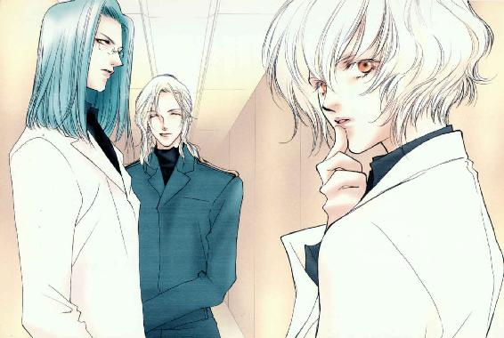
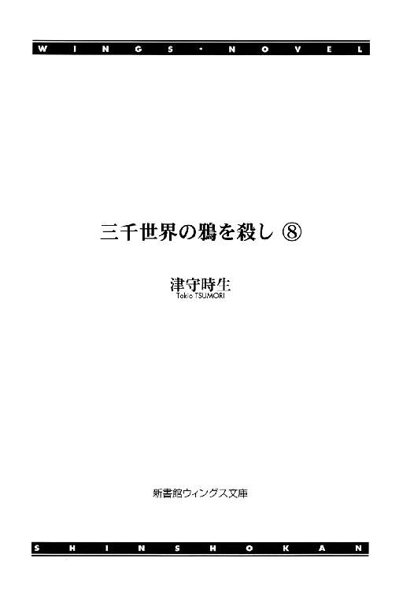
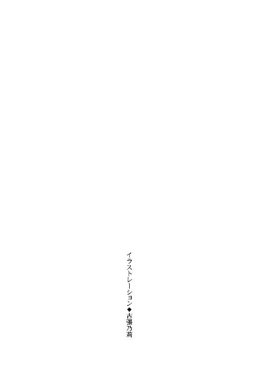
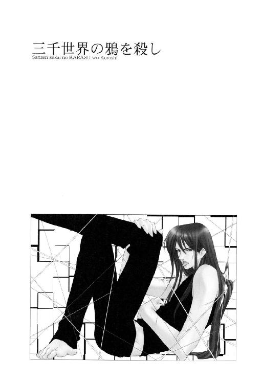
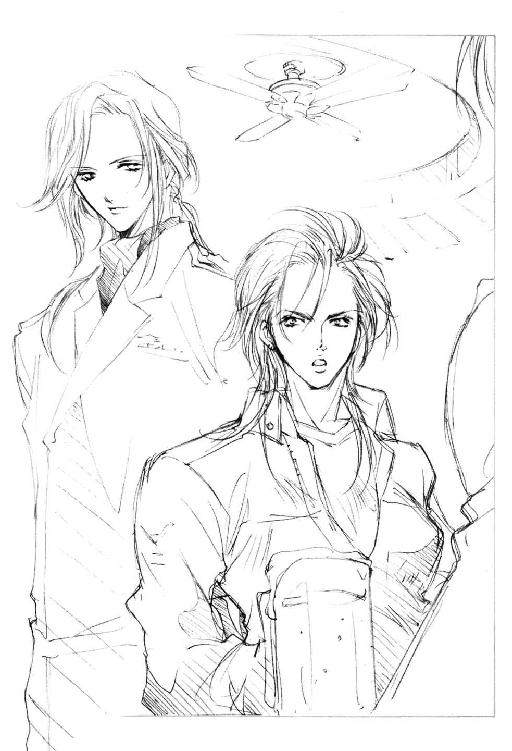
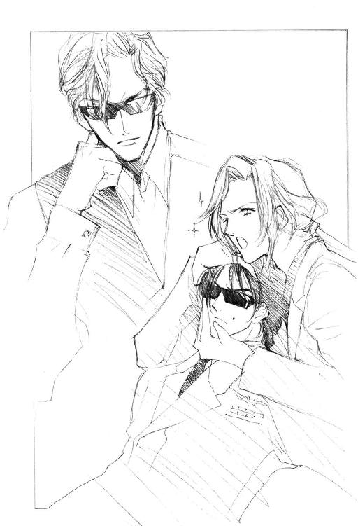
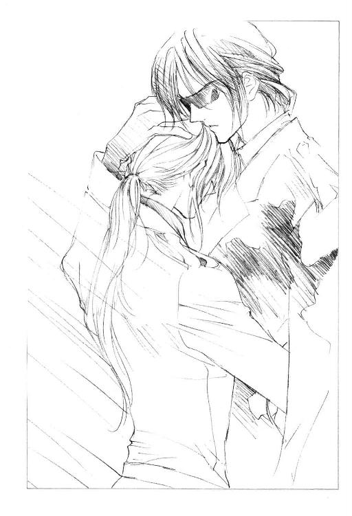
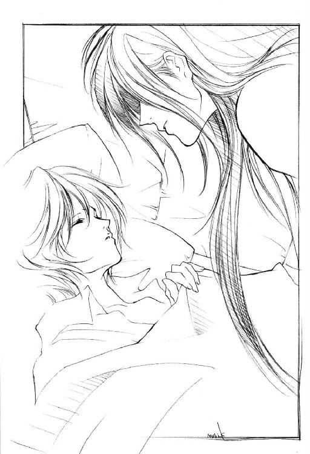
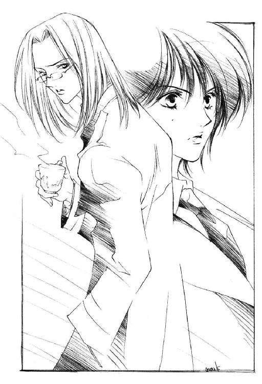

| 三千世界の鴉を殺し(8) (ウィングス・ノヴェル) | |
| 津守時生 | |




１
ルシファード・オスカーシュタインが銀河連邦軍旗の飾られている司令官室に入るのは、今回で二度目だった。
一度目は特別任務の際に流民街で無人戦闘機を飛行させた被害の責任について、二度目は本日の外出時に遭遇した事件の報告。
一度目はともかく二度目は被害者の立場なのだが、よけいな出費が一切ないように心から平和を愛する基地司令官ブレッチャー大佐にとって、特定の部下の行状が好ましからざるものなのに変わりはない。
上官に対する報告が義務だから出頭しているルシファードは、司令官の自分に対する心証の如何など最初から考慮の外だった。
彼の関心は、自分に面と向かって牙をむいてきたバーミリオン星に巣喰う闇にある。官僚型の司令官が基地予算書を眼前に突き付けようと、もはや売られた喧嘩を買う気は満々。武器庫を封印されでもしたら、カーマイン基地より最新の武器を所持している流民街のマフィア共から巻き上げて十倍返ししてやるつもりだった。
しかし、いかに左遷や降格を気にしない身でも、階級社会の軍隊では上官に話を通し、味方につけておくにしくはない。
ライラに豪語した通り、ブレッチャー大佐を言いくるめるのは海千山千のルシファードにとって、さほど難事ではなかった。器の大きさに違いはあっても、こんなタイプの軍人は腐るほどいる。禁句〈責任〉と攻略ポイント〈出世もしくは勲章と名誉〉も同じ。
説得に気を抜けないのは副官のラクロワ中佐のほうだったが、正攻法の通じる相手なので部下としては逆にありがたい上官だった。
今回、狙撃に続く一連の事件で一番困難な部分──都市警察の捜査を抑制することは、超能力者で情報将校のニコラルーンが担当してくれた。彼がいなければ、ルシファードはかなり厄介な立場に追い込まれただろう。
基地の外の事件は軍関係者だけで処理できないため、意志疎通や情報交換に時間がかかり、大事になりやすい。
なにをなすべきかわかっていて、詳細な説明を必要としない情報将校のバックアップを得られたのは幸いだった。
入室前に精神感応で接触してきたニコラルーンは、軍病院の屋上で別れてから収集した情報と彼が行なった精神操作による工作をルシファードに伝えた。
当然ながら銀河連邦法では、超能力者が他人の精神を操作することを禁止している。
だが、任務遂行に不可欠な行為とあらばいかなる法律違反も辞さない情報部員たちが、超能力による殺人や精神操作だけを禁忌とするはずもない。おのれの持てる能力のすべてを使って任務を遂行し、かつ生き延びて上官に報告するのが彼らの義務だった。
ブレッチャー大佐はルシファードの二重軍籍を知らない。あくまで基地に所属する一将校として行動の正当性を主張し、納得してもらう必要がある。
カーマイン基地司令官は、着任以来つねにトラブルを呼び込んでいるとしか思えない大尉をにらみつけて詰問する。
「マーベリック少佐から君が非番の外出先で狙撃されたという報告を受けた。相手はそれが失敗するや否や、次に君を橋ごと爆殺しようとしたそうだな」
「イエス・サー。狙撃された弾は胸のポケットに入れていた携帯端末で止まりました」
レスが反論できないのを幸いに、ニコラルーンはちゃっかり橋の破壊の罪を彼女になすりつけていた。
ルシファードは証拠物件の携帯端末を取り出し、司令官の執務机と彼の立ち位置との中間に立っていた情報将校が受け取って、副官のラクロワ中佐に手渡す。
ディスプレイ部分に放射状の亀裂が入ったそれを目にした司令官と副官の表情が、たちまちけわしく変わる。破壊された携帯端末の代わりに殺された部下の遺体と対面していた可能性は高い。
「君が非番を利用し市街に出かけていた事情はすでに聞いた。都市警察の電脳刑事との駆け引きは私にも理解できる。呼び出しを断ったことで、先日の意趣返しに基地のホスト・コンピュータに侵入されるのも困るからな。その件についてあらかじめ上官に報告すべきだったとまでは言わん」
官僚的でやたら些事にこだわるブレッチャー大佐にしては物分かりがいい。このあたりは事情を説明したニコルが暗に行なった〝説得〟の成果だろう。
もっともこちらが説得する時間を省く程度のもので、追及されると面倒な流民街の地下ともうひとつの大陸にある地下の大規模な軍事施設については、これからだった。
基地に駐屯している銀河連邦宇宙軍の任務は首都カーマイン市の治安維持であり、流民街に埋まっている所属不明の巨大宇宙船の残骸は惑星政府の管轄になる。別大陸の地下軍事施設はバーミリオン星の軍事を統括する惑星軍が処理すべき問題であり、惑星軍有志のあいだで首都制圧のクーデター計画が進行しているのでない限り、宇宙軍が惑星軍の頭を越えて騒ぐわけにはいかない。
ルシファードは多くの情報を得ることの優位を知る軍人だった。敵の全体像がつかめない以上、安易に惑星政府へ──場合によってはヴァンダイク方面軍総指令本部にも情報を渡す気はない。
情報を知る人間が多くなるほど情報は漏れる。特に漏れて欲しくないところに。
具体的な証拠があれば宇宙軍は行動を起こせる。確証を得るまでは情報管理、すなわち上官にも存在を伏せておくつもりだったので、提出した特別任務の報告書では一切触れていない。
「──だが、君がカーマイン市外れの通称流民街地下に発見した放棄宇宙船の残骸と、アイボリー大陸の地下にある軍事施設について、基地司令官たる私に報告しなかった点ははなはだしく遺憾に思う。職務怠慢以上にいくらでも悪意にとれる行為だ。まず報告しなかった理由を言いたまえ」
「アイ・サー。地下にある双方の施設を発見したのは、特別任務でブレイン・ギアを使用していた時でした。いくつもの作業を並行して行なっていた緊急性の高い時であり、私は偶然発見したものをその場にいただれにも告げず、記録にも残していません。特別任務遂行中でその余裕がありませんでした。ブレイン・ギアはその後の不幸な事故によって故障し、現在使用が不可能な状態です。発見当時の証人も証拠もなく、発見を可能にした唯一の装置であるブレイン・ギアは私専用にカスタマイズされた私物の上に現在使用不能。報告しても存在を立証できず、それどころか私の妄想と判断されかねません」
実際、この情報を教えたのはライラのほかに、直接他人の記憶を読み取るテレパシストのニコラルーンとレッドの合計三人だけだった。
ライラとは都市警察の電脳刑事たちを巻き込むしかないという点で意見が一致した。多少外部に情報が漏れようとも、最後は人海戦術による情報収集能力が優先される。
それでも通常任務をこなす合間の自由時間で調査を進めるのは、あまりに時間が足りない。基地外との連携も自在にとはいかないだろう。
まだ明確な目的をつかめていないにせよ、敵の行動を阻止するには迅速な対処を必要とする。流民街地下に宇宙船が存在する現実こそがなによりの証拠であり、ともかく市に調査させればこっちのものだ──というのがライラの主張だった。
カーマイン市が銀河連邦軍の一将校の提案で動くわけはないので、結局は早急に基地上層部を動かす有力な情報と証拠を得る必要があるという同じ結論にたどりつく。
敵はルシファードを殺そうとしたことで、皮肉にも基地の上層部に自分たちの存在と脅威を公表する機会を与えてしまった。
「君の主張はもっともだな。君が今回襲撃されなければ、私は荒唐無稽な話だと一笑に付しただろう。君と都市警察の刑事を殺害することで軍と警察双方から捜査されようとも、君を殺したほうが今後のメリットは大きいと考えたわけか」
部下の説明に軽くうなずいたブレッチャー司令官は、左遷されてきた部下の左胸に並ぶ豪華な略綬の列を一瞥し、自嘲の笑みを浮かべる。
上官の推測は正しいと思うが、素直に肯定すると相手の機嫌を損じかねないので、黒髪の大尉はもう一方の当事者である都市警察に話をずらす。
「敵は私たちを殺害したあとの捜査を無為なものにする自信があったのでしょう。おそらくカーマイン市と惑星政府にかなり強力な協力者がいるのだと思います。カーマイン市街は都市警察の管轄ですから、宇宙軍の捜査に対して非協力もしくは妨害が可能です」
「我々もなめられたものだ。今までこの惑星内を妙な連中の好き放題にされながら、それに気づくだけの能力もなかったのだから無理はないが」
ブレッチャー大佐は再び浮かんだ自嘲の笑いをすぐに消し、表情を厳しく引きしめて長身の部下を見上げる。
「──幸い君は無事だった。相手が宇宙軍を甘く見ているうちにそれを逆手に取って巻き返しを図りたい。オスカーシュタイン大尉。なにをどうすべきか、戦い方は君が一番よく知っているはずだ。特別チーム編成を含めてすべてを君に一任する。私は基地司令官として可能な限りのバックアップを約束しよう」
「アイ・サー。ありがとうございます。ご期待に沿うべく全力をつくします」
わずかなリスクもきらう日頃とは別人のように前向きな命令を下す司令官に内心戸惑いつつ、ルシファードは礼を述べた。
レイモンド・ブレッチャーらしからぬ言動への当惑は、黒髪の大尉と同様に副官を務めるラクロワ中佐にもあった。中佐はオスカーシュタイン大尉と旧知の仲である情報将校に疑惑の目を向ける。
上官がマーベリック少佐からルシファードの身に起きた出来事の報告を受けている時、ラクロワ中佐自身もその場にいた。だから情報将校が司令官になにか妙なマネをしたわけでもなく、なにかを示唆する言動もなかったことを知っている。
それでも疑念が去らないのは、相手が銀河連邦宇宙軍中央本部直属情報部の情報将校だからだ。多少優秀な程度の能力で勤まる部署ではないことくらい、こんな辺境惑星の地上勤務に追い遣られた兵士でもわかる。
ニコラルーンは自分に向けられた疑惑のまなざしに対し、意味がわからないといったいぶかしげな表情でたずねた。
「どうかしましたか？ 副司令官殿」
「私がいきなり妙なことを言い出したから驚いているのだろう？ アンリ」
「妙なこととは決して思いませんが、いささか唐突だとは──」
言いながら今度は黒髪の大尉のようすをうかがうと、ルシファードは大胆にも副司令官にまったく同感だとばかりに深くうなずく。
度肝を抜かれるほど狡猾な論理を展開するかと思えば、子供のように素直で無頓着だったり。そんな男の態度にラクロワ中佐は少し救われるものを感じる。
「私とて野心はある。このまま辺境惑星の基地司令官で終わりたくはない。できれば私をこんなところに左遷した連中を見返してやりたいと思っていた。そんな気持ちは君にだってあるだろう？」
「ええ......まあ、まったくないとは申しませんが──」
「最初私は基地司令官を無事に勤め上げることしか頭になかったので、トラブルを吸い寄せるかのようなオスカーシュタイン大尉を厄介者だと考えていた。だが、先日ここで特別任務について語った大尉の言葉を聞き、これは反対にチャンスかもしれないと考え直した。多くの勲功を上げた大尉の報告なら、ヴァンダイク方面軍指令本部も無視できないはずだ。しかも大尉の発見は、今までわが軍が捉えていたバーミリオン星の姿を一変させる実にセンセーショナルなものだ！」
拳をにぎって力説する司令官の顔は紅潮し、両眼は異様に強い光を宿して輝いている。
今まで身近に超能力者がいなかったラクロワ中佐は、実際に使った光景を見ていないルシファードの念動力に実感がない。さらにニコラルーンがテレパシストであり、違法な精神操作を上官に対して行なったとまでは考えつかなかった。
ラフェール人の情報将校はもともと司令官本人が持っている感情をあおり立て、すぐに行動するよう背中を押しただけなので、唐突ではあっても不自然さはなく、本人の人格との矛盾も生じない。
功名心に取り憑かれた人間の典型的な興奮状態を目にして、有能な補佐役は束の間目を伏せて考えたのち、静かに問いかけた。
「おっしゃることはわかりました。ひとつ確認をしておきたいのですが、司令官殿は銀河連邦宇宙軍上層部に応援を依頼せず、当基地のみの人材と装備でこの問題を解決したいとお考えなのでしょうか？」
「無論だ。君も連中のやり口を知っているだろう？ わずかでも介入させれば手柄は全部さらっていってしまう」
「了解いたしました。──マーベリック少佐。あなたが今後当基地でなにを見聞きしようとも、司令官殿の意向は承知の上で行動していただきたい」
階級は下だが実質的な権力は自分たちよりはるかに持っているエリート将校に向けて、ラクロワ中佐は穏やかに依頼調の命令を発する。
ラフェール人は相手の言わんとすることを素早く理解し、如才ない笑顔で快諾した。
「アイ・サー。もともと私は別件で派遣され、偶然旧知のオスカーシュタイン大尉がいたためにこの一件にも関係しただけです。別件の処置について本部からの指示を待つあいだ、個人的に協力させていただくことはあっても、私の行動と軍上層部とは一切関係ありません。私としても私情で動いた事実が記録に残されるのは非常に困りますので、その点をご理解いただければ双方にとってよい結果となるのではないでしょうか」
「当基地に不利益な行為をしない限り、行動の自由は保証しよう」
「それで結構です」
言葉の裏にあった取り引きは成立し、中佐は目顔で司令官に事後承諾を求めたあと、今度はルシファードに言った。
「このあと各連隊長を招集し、君の求めに応じて便宜をはかるよう話しておく。不必要な情報拡散をさけ、表向きは例のレーザー砲の調査チーム発足のためとする。報告する時は通信科を通さず直接私を呼び出すか、私本人に口頭で行なうこと」
「アイ・サー。私が書いた暗号通信プログラムと専用テンプレートがありますので、後日お届けします」
「ずいぶん厳重だな」と、ふたりのやり取りにブレッチャー大佐が口をはさむ。
平常通り日常勤務をこなさねばならない司令官は、副官から最終報告だけを受ける立場になる。そのせいで認識が甘いのだとしても、通信科に重大な問題があると気づいている副官との能力差は否定しがたい。
ルシファードは自分の直属の上官がラクロワ中佐になった幸運を、なによりも喜んだ。
「非番で市街に外出した大尉を待ち伏せして狙撃するとなると、事前に外出する事実を知らなければむずかしいと思います。当番の警備兵が偶然外出する大尉を見かけて敵に密告するという可能性もゼロとは言い切れませんが、大尉が基地の正門ではなく軍病院側から出たことで偶然の確率はさらに低くなります。自分を基地から尾行し行動を逐次監視していたものがいたとしたら、都市警察の刑事に会うことで警戒していたオスカーシュタイン大尉は気づいたでしょう。──あくまで私の推測に過ぎませんが、通信科に敵のスパイがいます」
「私も中佐殿と同じ結論に達しました。レッド刑事が私に出したメールの内容と、副官が総務科にメールで提出した外出届を盗み見ることができれば待ち伏せしての狙撃が可能です。一度開封したメールを未開封に戻す工作は通信科なら簡単にできます」
副官の推理にショックを受けたブレッチャー大佐が絶句しているあいだに、ルシファードはラクロワ中佐の説を補足した。
都市警察側にスパイがいてレッドの行動からふたりが会う情報を得た可能性も否定できないが、殺したいほど脅威だと考えているなら、そちらの行動に監視をつけるほうが自然だろう。
蒼白になった司令官の表情が驚愕から怒りに変わる。
「それがだれか、今すぐ見つけ出して捕らえねばならん！ オスカーシュタイン大尉、スパイがだれかわかっているのか？」
「ノー・サー。通信科に所属する兵士すべての経歴を点検し、素行調査をするには膨大な時間と人員が必要です。だからと言って放置できませんので、とりあえず罠を仕掛けてみようと思います」
「罠？ どんなものだ？」
「思いつきの段階なので、まだ申し上げられるほどのものではありません。再度命を狙われる可能性もありますから早急に具体化いたします」
「そうか......」
狙われている本人に断言されては執拗にたずねるわけにもいかず、ブレッチャー大佐は基地の最高責任者でありながら問題の中枢にかかわれないもどかしさを感じつつ引き下がった。
たとえ相手が司令官でも、重要な作戦を漏らすまいとするルシファードのうそを副司令官は承知で聞き流し、部下を実戦に向かない官僚型の上官の詮索から遠ざける手段を取った。
「大尉。これから各連隊長を招集する。君は退出してよろしい」
「アイ・サー。──オスカーシュタイン大尉、必ずやおふたりのご信頼とご期待に応えてご覧に入れます」
不敵な笑みを浮かべた男は上官たちに向かって不遜な言葉を吐き、手本のように形の美しい敬礼をする。
味方に困難な状況の戦場で多くの部下たちを魅了し、気分を大きく昂揚させてきた指揮官の笑顔だった。自信に満ちているだけでなく困難さを楽しむ余裕があり、なによりも常人離れした彼の美貌は見るものを陶酔させ、その心から恐怖と不安を消し去る。
ブレッチャー大佐も束の間われを忘れ、頼もしい部下を惚れ惚れと眺めた。
そのかたわらに立つ副官は、第一等勲章を三度受賞した男の見事なカリスマぶりに感服し、そんな男が自分の部下でいる日々の充実感をしばし満喫することに決めた。
「君がこの惑星の闇と謎をどうあばいてくれるか、楽しみにしているよ。──ところで話は変わるが、どうして今日はおさげなんだね、大尉？」
司令官室を退出したルシファードとニコラルーンのふたりは、本部の廊下を歩きながら即座にラフェール人の精神感応力を利用した打ち合わせを始める。
『期待した以上の首尾だ。ありがとう、ニコル』
『どういたしまして。でも先日の君の巧みな屁理屈的弁明を聞いた限りでは、口先だけで同様の方針に持ち込めただろうね。時間を短縮した程度のことだ。ただ優秀な副司令官殿が私を警戒しているから、今後はあまり大胆な操作はできないな』
『別の方法を探せばいいさ。中佐殿が直属の上司になったのは最高の配慮だぜ。すでに仕事のやり易さが格段に違う』
ルシファードの手放しな歓迎ぶりにニコラルーンもうなずく。
『悲しいことによくあるケースだけど、あのふたりを見るたび階級と地位が逆だと思う』
『その分楽しめるがな』
『......なにがどう楽しめるのか、ブレッチャー大佐殿の幸せのためにあえて聞きたくないよ』
『いや、単に色々と攻略法を考える楽しみってこと。俺だって上官をからかって遊ぶほどヒマじゃねえよ。ラクロワ中佐殿の場合は、ほとんど正攻法で決まっちまうだろ。それがダメな場合、せいぜい──』
そこでいきなり相手に思考を遮断されたラフェール人は、祝賀会散会直後の濃厚なキス・シーンを思い出して、思わず声を上げる。
「色仕掛けっ？」
『だれがだ、コラ。そーゆー単語だけを声に出して言うな。情に訴えると言ったら、そんなくだらねえ誤解をされるんじゃねえかと思って、とっさにシールドしたのに』
『やっぱり意識しているんだー？』
『酒が入った上での冗談にせよ、二度とされたくないと強く警戒している程度には意識していますよ。うらやましいなら、今度から中佐殿との交渉は全部あんたにしてもらいます。もちろん、色仕掛けもお好きにどーぞ』
『冗談だってばー。ごめーん。ルーシー君たら副司令官殿のことを結構好きみたいだから、ニコル小父さん妬いちゃったんだよお。小さな頃から可愛がってきたのに、目の前で違う小父さんになついて欲しくないなぁ』
ニコラルーンは半分本気で言ったのだが、ルシファードは今や下手をすると自分より年下に見える相手の発言を鼻であしらった。
『だれがニコル小父さんだ。救急用ＶＴＯＬン中では、ふざけたセクハラしやがったくせに。どこまでやったら俺が怒るかを試すのは、そろそろやめにしろよ』
『......試しているって言うか......。どうも君が相手だと、からんじゃうんだよねー。私は君が大好きなのにどうしてだろう？』
本人にもわからない疑問の答えをルシファードは知っていたが、告げる気はなかった。
『優秀なテレパシストなのに、自分の心は正確に読み取れねえのか。内科じゃなくて、精神分析学の勉強をすべきじゃねえのか？』
『ごめんだね。人間の心の底なんてのぞきたくないよ。君は精神感応力を封じられているからわからないだろうけど、人間の精神は多くの要素が複雑に影響しあって形成されているんだ。私は必要な情報を短時間で読み取る訓練を積んできた。分析までしていたら迷宮に迷い込む。表層意識の思考を読み取るだけにすませたいね。──ところで、これからどうする？』
『とりあえず急いで宿舎に戻ってＯ２に報告書を書くから、そのデータをあんたが亜空間通信の極秘機密扱いで大至急送ってくれ。その時、その場にいる通信科の兵士たちの思考を走査してほしい』
『罠の第一段階か。データは私名義で送るにしてもＯ２からの返事は君に届くのかな？』
『内容を読みさえすればな。忙しい人間だから大至急の極秘機密でも即座に返事は戻らないだろう。俺が呼び出されたら当然なんらかの反応があるはずだ。中央本部の情報将校が機密データを送る場合の反応も探れるし、本部の情報収集能力ならほしい情報がすぐ手に入る』
罠を張りつつ実利も得ようという一石二鳥の上を狙うルシファードのやり方に、ニコラルーンは半ば感心し半ばあきれた。
『いくらラクロワ中佐殿が、私を通じてなら上層部の援助を受けてもいいと抜け道を認めてくださったにしても、いきなりＯ２に直接とは──』
『使えるものなら中央本部の情報部部長だって使ってやるさ。こんな時には軍最強のコネだ』
『普通は親でも使うと言うんじゃないのかい？ いくら本当の親だからといって、よくもまぁ恐れ知らずの暴言を吐けるもんだ。相当使いでがあるコネなのは間違いないけど』
『あっちだって同じことを言ってやがるだろうさ。息子にどんな仕事をさせようっつーハラかは知らんが、外宇宙探査基地計画云々を抜きにしてもバーミリオン星への俺の左遷には、絶対親父が一枚嚙んでるぜ』
『なぜそう思う？』
宇宙連邦軍中央本部情報部部長オリビエ・オスカーシュタイン──通称Ｏ２は階級こそ長いあいだ少将のままだが、それは本人に出世欲がないのと、一般兵士の情報部への生理的嫌悪を考慮しているだけの話だった。
軍の主立った人間全員の弱みをにぎっているとさえうわさされる彼の影響力は、各方面軍の元帥たちを凌駕する。
裏から手を回して、息子の左遷先を自分が希望する場所にすることくらい簡単だろう。
『この星の異常なありさまがなによりの証拠だ。俺の初の地上勤務でコレはちょっと出来過ぎだろうよ。Ｏ２はなにかをつかんでいるはずだ。なにもないただの辺境惑星なら、なんで現役バリバリの情報部員であるマオ中佐殿が配属されているんだ？』
『それは私も思ったよ。一応アレクには聞いてみたんだけどね、当たり前だけど任務が何かは教えてくれなかった。私も本部にはバーニングの報告がある。ついでにこの星を調査した人間の情報も請求しよう。──なに？』
『......いや。今の言葉でちょっと思い出したことがあっただけだ。全然関係ないことだから気にしないでくれ』
『ふうん......』
ルシファードの脳裏に一瞬サラディンの面影がよぎったのを、ニコラルーンの精神感応は捉えていた。
なんとなく気になって──正直に言うといささか面白くなくて、美貌の外科医と今の話題とが年下の友人の中でどう結びつくのかを推理してみる。
あの多忙な医師が宇宙軍情報部の依頼で惑星の調査員をするはずもなく、またその能力もない。となると〝本部に情報を請求する〟という行為が、ルシファードの思考を刺激したのだろう。
かつて本部に情報を請求した人物、というあたりが妥当な線か。
確かにサラディン・アラムートは他種族とかなり毛色が違う。地球人の中にいると両者の差違は鮮明になり、集団の中にいてもひとり浮き上がっているように感じられる。
超絶美形であるルシファードですら地球系の混合種と称しても通用するのに、サラディンの存在感は地球人たちと相いれない。知られていない少数種族なのだろう。
探求心旺盛なルシファードが、わざわざ本部に問い合わせるほど興味を持ったのもわからなくはないが──。
──おやおや、これは......。
自分を軽くいらだたせる感情が、さきほどのように口実ではなく、本気の嫉妬なのだと気づいてニコラルーンはさすがに戸惑う。
一緒に遊んで危ないことを教えてやった坊やは、当時の予想通り実に自分好みのいい男に成長したが、好みといっても自分のファーザー・コンプレックスから起因する感情なので、サラディンと本気で張り合うとなると意味が違ってしまう。
第一、幻想的な美しい色彩の美貌に強靱なものを秘めているサラディンはこわい。敵に回したくないと本能が言っている。
そもそもラフェール人への義務に縛られている自分に恋愛の自由などない。ラフェール星に帰れば、まだ完全に立ち直ったとは言いがたい義父と──。
「ニコル。あんた今、なんかタチのよくないことを考えてるだろう？ なにを考えているのか知らねえが、自分を追い込むのはやめろよな」
低い声で警告され、重苦しい気分になりかけていたニコラルーンは我に返る。
「ああ、ごめん。ちょっとカイユに残してきた用事をね......。たいしたことじゃないんだよ。なにか顔に出ていた？」
「顔というよりは雰囲気だな。他人の気持ちには鈍感な俺だが、あんたとは長いつき合いだ。調子が悪い時は雰囲気で見当がつく」
「君にそんなうれしがらせを言われたら、他愛なく喜んじゃうよ～」
言葉通り満面の笑みを浮かべ、ルシファードの片腕に自分の腕をからませる。
廊下をすれ違う兵士たちが奇異の目でふたりを見た。これでしばらく、ふたりの関係はうわさになるだろう。
自分の容姿と銀河連邦宇宙軍中央本部所属を示す軍服が、見るものにどういう効果をもたらすか計算した上での行為だった。
どこへ行っても注目される黒髪の大尉は、いまさらゴシップのタネにされることなど気にもとめない。ラフェール人の確信犯的過剰なスキンシップも好きなようにさせた。
仕事以外の話になった合図として、普通に声を出して会話する。
「義理の親父さんの調子がよくないのか？」
「カイユ星に戻ってからずいぶんよくなったよ。だけど義父さん以上の仕事をこなしているのに全然神経を病まないんだから、Ｏ２って憎らしいくらい図太い」
「親父の図太さは特別製だと思うが、身も心も繊細なラフェール人とは最初から比較にならねえだろう」
「部長代行を十年も務められたんだから、義父さんは別格にタフだったよ。......まあ。確かにラフェール人は君の言うように身も心も弱い。だから無理に純血にこだわらなくてもいいと私は思うんだけど。マリリアード王子の時代から続くラフェール人の矛盾は、一向に解決しなくてね。私の憂鬱のもとだよ」
「ラフェール人の女房をもらえとでも強制されているのか？」
ニコラルーンはしばし沈黙し、大きく息を吐いてうなずく。さすがにプライベートに深く踏み込んだ話を他人に聞かれるのは困るので、再び精神感応での会話に切り替える。
『まさにそれ。とうとう逃げ切れなくて婚約に追い込まれる寸前に、Ｏ２の呼び出しがあったんだ。今度ばかりは色々な意味で仕事をくれたＯ２に感謝している』
『くっだらねえ。あんたの女の趣味はデカくて強くて男前な女戦士タイプだろ？ ラフェール人の女と正反対じゃねえか。純血種の子供を作るために結婚するだなんて最低だぞ。あんたも女房も子供たちも、全部が幸せになるための結婚じゃないならやめちまえ』
まさかルシファードに好みの女性のタイプまで把握されていると思わなかったニコラルーンは、言われると覚悟していた答えに苦笑しつつ用意していた答えを返した。
『滅亡しかけたところを多くの援助を受けて復活したラフェール人には、有形無形の負債があるんだ。個人のわがままは通用しない』
『わがまま？ 幸せになりたいと思うのがわがままなのか？ 政治的しがらみのために愛し合ってもいない男女を結婚させて、強制的に子供を作らせるほうが非人間的だろう』
『早くそう言い切れるくらい人口を増やさないとね』
『ラフェール人の人口が増えようが減ろうが俺の知ったことじゃねえが、あんたが不幸になるくらいなら滅んじまえばいいんだ』
ルシファードは傲然と、さも当たり前のように言ってのけた。
うろたえたニコラルーンはとっさに自分の感情の遮蔽を最大にし、絶対自分の本心が伝わらない手段を取ってから、相手がテレパシストでなかったことを思い出す。
本気で言っているのがわかるだけに、それがどれほど理不尽な暴言でも泣きそうになるほどうれしい。そして、なにも飾らないむき出しの好意に──ときめいてしまった。
長身の男を見上げると、スクリーン・グラス越しに見下ろして文句があるかとばかりに小さく鼻を鳴らす。
「......その言いよう。恐ろしいまでにＯ２そっくり」
「親父も俺もガキだもんよ」
子供だから言いたいことをそのまま言うのだと宣言する。
だが、言った結果生じた不都合をすべて受け止める覚悟がある彼らは、強い精神力の持ち主だった。ただのわがままな子供とは全然違う。
Ｏ２の場合、彼の愛情はただひとりの親友に向けられていたが、その息子は自分が好意を抱くものすべてを保護しようとする。懐の広さと情の深いところは、父親よりその従弟だと非公式に見なされているマリリアード王子に似ている。
遺伝なのか先ラフェール人特有の気質なのかわからないが、罪作りな連中だった。
「いつか君と相思相愛になる人間が、うらやましいような気の毒なような......少し複雑な気持ちだよ」
「それについては面白いことを思い出したんだが──。夕食はまだだろう？ 食事に行くならここで別れよう」
「君はどうするんだ？」
「報告書を書くほうが大事だ。デリバリーでサンドイッチを取り寄せて喰いながらやる」
「君につき合おう。どうせ通信用のデータを受け取る必要があるし、ひとりで食事をするのはつまらないから」
基地本部から出たふたりは、独身士官用宿舎に戻るために士官用昇降口から正面玄関へと回る。日勤のデスクワークで残業していた士官たちは、この時間になるとカフェテリアか士官食堂に行くので、車寄せにはだれもいない。
すでに待機していた空車のリニアカーに乗り込む。
運転席に座ったルシファードが行き先を入力して自動運転にする隣で、ニコラルーンがもどかしげに話の続きをうながした。
「思い出した面白い話って？」
「俺がガキの頃に仕事でやった女装話なんぞをあんたが持ち出したから、あのあと当時のことを色々振り返ってみたんだ。そうしたら......あの時はわからなかったが、どうやらあんたは俺の初恋の女性だったらしい」
「──は？」
思わず耳を疑ってしまう。
車を発進させたルシファード自身が面白がって、にやにやしながら話を続ける。
「いまだに恋愛という代物はよくわからんが、初恋というのはこんなモノだという連中の話を総合して考えるに、あの時の俺の状況がそいつに当てはまるのではないかと思ったワケだ」
「どうして私が女性になってしまうんだい？ 地球人にしたら私の容姿は男らしいと言いがたいだろうけど、女性と間違えられたこともないよ」
「凶暴で豪快なフリーダを見慣れたガキの目には、ケープ付きのコートを着て震えていたあんたが、はかなげでたおやかな美女に見えたのさ。あんたはフリーダの前では、いつも上品かつ丁寧に話をしていたし」
ニコラルーンも当時をすぐに思い出す。
「ああ、そうだ。君たち親子がラシュガナークの密猟者狩りに加わっていた時の話だね。吹雪の中で車が故障して必死で救助を要請していたら、尾行していたはずの君たちに助けてもらったんだっけ。すごく情けない出会いだよなぁ。バレたフリーダには情報工作員失格だって、ものすごく笑われちゃってさぁ」
「特殊装備がないと遭難しかけるほど危険な未開惑星まで、逃げた妻子探しに平然と部下を行かせる情報部部長のほうが、適性に問題あるんじゃねえ？」
「そこが宮仕えの悲しさ。命令は絶対なんだ。あの時の私は着ぶくれていたから、体形がわからなかったんだね」
その優美な美しさから天使の末裔とたたえられるラフェール人であっても、性別を間違われるのはうれしくないらしい。
ルシファードは相手の推測をあっさり否定してのける。
「ガキだったから、今ほど女の胸にこだわりがなかっただけだ」
「えー！ ルーシーってば巨乳好き？ なんだか、らしくないって言うか幻滅～」
「別にデカければいいってもんじゃねえよ。一定範囲内のボリュームがあればいいんだ。男の幸せは女のやわらかな胸に顔をうずめることにあると、つねづね思うんでな」
「あるある！ それは絶対にある！ あれにまさる至福はないと私も思う。......ただ、男の広い胸に包み込まれるように抱きしめられるのも、別種の快感があるんだけどね」
想像してうっとりしているナビ・シートの華奢な男を、昔なじみが冷たい目で見遣る。
「あんたのソレは黒髪フェチと同根の、重度のファーザー・コンプレックスだ。誤解を招くから、俺以外の人間にその別種の快感とやらを口にするんじゃねえぞ」
「私が君の初恋のひとだったなら、君は私の理想の男性なんだし、なにも問題はないよ。結婚しよう！」
「アホ吐かせ。初恋の女性だと言っただろーが。男だと知って、ものすげえガッカリして初恋終わり。あの頃の感情なんてカケラも残っていません。──第一、フリーダに惚れていたくせにな～にが理想の男性だ」
情報将校は上官の息子の一言に凍りつく。この場を言い逃れるすべはないかと考えたが、事実と確信している相手の口調に覚悟を決める。
「──まいったなぁ。絶対悟られないように気をつけていたんだよ。わかるような態度を無意識に取っちゃったのかな。まさかフリーダにまでバレていないよね？ 君の初恋話と同じく今ならわかるってヤツかい？」
「いや。親父が知っていた」
「......うそ......っっっ！」
「そう思いたい気持ちは理解できるが、親父が超Ａ級テレパシストだってことを忘れているんじゃねえのか？ あんた、秘めた恋心を親父に利用されていたんだぜ」
大抵のトラブルは面白がってしまう問題児も、三十年以上も鬼畜な父親に仕えてきた部下に対し、さすがに気の毒そうな表情で声を低くした。
蒼白になったニコラルーンが怒りと恐怖に身を震わせながらつぶやく。
「まさか......まさか......君たち親子の追跡を命じられたのって......！」
「そう。フリーダに会いたいから一生懸命探すよなぁ。任務を越えて熱心に。親父はあんたの純情につけ込んだんだ」
「最っ......低────っっっ！」
十数年の歳月を経て知った真実に激怒する男の絶叫が、リニアカーの車内に反響する。
腕組みをしたルシファードは耳が痛いほどの大声もとがめず、さかんに何度もうなずいた。
「まったくだ。親父を表現するのに、それ以上ピッタリくる形容詞はねえよなあ」
２
準夜勤務のシフトで本部の通信センターに詰めているのは、第一連隊に所属する通信中隊の兵士たちだった。
通信の利用頻度が高い日勤は第二連隊所属の通信中隊が担当し、準夜勤務と深夜勤務を第一連隊の中隊が分担しているのだろう。
ルシファードは通信センターに入らず、深夜の二時まで営業している本部ビル脇のカフェテリアでニコラルーンを待った。
夜九時少し前のカフェテリアは、恋人や友人たちと待ち合わせて映画のレイト・ショーを観に行こうとする独身の兵士たちで半分ほど席が埋まっていた。そのうち士官食堂でのディナーが終わり、流れてきたものたちが残りの席を埋める。
精神的にも肉体的にも厳しい試練の続いた波瀾万丈の一日だった。
念動力の暴走を食い止めるための精神的な戦いと失血のせいで、体が重く感じられるほど強い疲労を覚えた。そろそろ気力だけで動くのも限界に近い。ＰＣリングをはめていたら、とっくに昏倒しているだろう。
本当はコーヒーなどではなく強い酒を飲みたい気分だったが、士官クラブのバーはリニアカーを利用しなければ行けない距離なので、とりあえずの待ち合わせには向かない。
銀河連邦宇宙軍総本部のある銀華太陽系第二惑星瑠璃宮は、現在深夜零時過ぎだった。
バーミリオン星とは惑星の自転速度が違うため、時差を足し引きするという単純な計算で現在の現地時間は得られない。
銀河連邦加盟惑星は、自分たちの惑星の自転速度から算出した惑星標準時と、銀河連邦議会のある銀華太陽系第一惑星玻璃宮の自転速度を基準とした銀河連邦標準時の二種を公式な場では表示している。
惑星上で生活するぶんには関係ないが、宇宙船の船内ではすべて銀河連邦標準時、通称連邦時間が使われていた。
宇宙船やほかの惑星との通信で気をつけなければいけないのは、先方の言う五分とこちらの五分では、長さが違う場合があるということだった。したがって通信室には必ず時計が二種類設置され、装置のディスプレイ画面にも表示される。
ルシファードは報告書を書き上げた時点でパソコンに表示される連邦時間を確認した。情報本部がある瑠璃宮は、第一惑星より自転速度がわずかに遅い。連邦時間の一月一日から今日までの誤差を合計して計算した時間が、バーミリオン星との現在の時差三時間強だった。
バーミリオン星の一日は連邦時間より一時間少々早く終わる。
ただし太陽の周囲を一周する公転日数は、銀華太陽系第一惑星より十六日多い。一日は短くても一年が長いために、バーミリオン星の惑星暦は玻璃宮の一年を基準にする星暦とほとんどずれなくてすむ。
自転が遅い上に公転日数も多い第二惑星・瑠璃宮の惑星暦のほうが、星暦と差が開く一方だった。七億の人口のほぼ百パーセントが軍関係者で占められる特異な惑星なので、人々は日常的に星暦と連邦時間を使って仕事をしている。常に併用していると慣れてしまい、双方の差の開きを改めて気にすることもないと、以前にＯ２が言っていた。
年齢は星暦で数えるからいいものの、各惑星の一年で年齢を加算していたら、公転日数の違う惑星で別々に暮らす親子の年齢が逆転するという珍現象も起こりかねない。
──ニコルも言った通り、銀河系の端っこにある惑星の内実を親父が本当に承知していたとも思えねえし......。
編んだ髪をゴムで留めた部分を持って毛先を眺めながら、ルシファードは今まで起きた事件をつらつらと考え合わせてみる。どうにもひとつに収斂せず、情報部部長の思惑を推測するどころではない。
いつもは髪にかまわず無造作に座っているが、編んだ髪の束を尻に敷くのは座り心地に難があり、とりあえず膝の上に乗せた。
ところがつねに何かが膝の上にある状態というのは、なんとなく気になってうっとうしい。
「あれ、中隊長殿？ どなたかとお待ち合わせですか、奇遇ですねー」
頭上から声が降ってきた。振りあおぐ彼にグラディウス・ベル軍曹が笑顔で敬礼する。
第四中隊はまだ宇宙港警備の勤務中のはずだった。自分と同じく非番なのだろう。
「アタシ、友達と映画を観に行くための待ち合わせなんですけど......まだ来てないみたい。大尉殿とご一緒していいですかー？」
声をかけられた時からそのセリフは覚悟していたので、ルシファードはうなずき、ついでに相手の期待通りに好きなものを注文していいと言う。
今年二十歳になる六芒人の女軍曹は、大柄でたくましい外見に不似合いな可愛らしい歓声を上げて席につき、早速ビールの大ジョッキを頼んだ。
基地内では家族持ちでもない限り、非番で私服を着るものはほとんどいない。グラディウスもＴシャツにジャンパー、迷彩柄のズボンに作業ブーツという色気のかけらもない格好だった。
士官食堂での夕食時は軍服着用が義務付けられているので、彼女は非番でも軍服を来ているルシファードの姿を不審に思わない。
「大尉殿はなんていう映画をご覧になるんですか？」
「いや、映画の待ち合わせじゃねえ。宇宙港警備とは別口の仕事だ」
「非番だっていうのに大変ですね。ご苦労さまです。ところで今度アタシと一緒に映画を観に行きませんか？」
「おまえと映画の趣味が合うとは到底思えんな。恋愛物もコメディも退屈するから断る」
そもそも映画鑑賞よりパソコンをいじっていたほうが楽しい男は、若い娘らしい趣味のグラディウスとは酒を飲む以外に好みの一致する部分がない。
即座に誘いを断られたにもかかわらず彼女は喜んだ。
「うれしい！ やっぱり大尉殿はアタシのこと、内面から本当に理解してくださるんですね。アタシのまわりの××××野郎どもときたら、まともにものを考えるどころか、目で見たものをパターン認識で処理するだけの下等生物なんですよ」
「グラディ。俺に言う権利はねえが、俺以外の上官にやっちまう前に、日頃から××××野郎と言うのはやめような」
「あっ、すみません。ついうっかり口がすべっちゃって......」
「あの脳ミソまで筋肉の連中に理解させようと思ったら、そのくらい頭に刺激のある単語を混ぜて話す必要はあると思うが」
「ですよね──」
グラディウスは話のわかる上官に笑顔で相槌を打ちつつ、ビールのジョッキに手をかけた。と、近づいてくるニコラルーンを見て動きを途中で止める。

「ちょっと待たせているあいだにゴージャスな美女と歓談中とは、ずるいんじゃない？」
「大ジョッキ楽勝のゴージャス＆グラマラスな美女は、これからお友だちと映画だとよ。俺の部下のグラディウス・ベル軍曹だ。──グラディ。特別任務で派遣されてきた銀河連邦軍本部所属のニコラルーン・マーベリック少佐殿だ」
「はっ、初めまして、サー！」
身繕いをしながらあわてて立ち上がり敬礼する軍曹を少しまぶしげに見上げ、答礼したのちに情報将校は微笑みかけた。
「よろしく、軍曹。祝賀会の最後に店のホールで君を見かけているよ。座って」
「ありがとうございます。......アタシ、ベロベロに酔っ払っていたからわかんな──あっ、ひょっとして白いコート着ていらっしゃいませんでしたか？」
「うん。ドクター・ニザリと一緒にいた」
「すっかり女のひとだと思っていました。髪長かったし～。優しげできれいなひとだなーって思ったのを覚えています」
「あのコートを着ると体形がわからなくなるからね」
ニコラルーンはにこやかに答えながら、無言でニヤニヤしているルシファードの足をテーブルの下で軽くけった。
複雑な男心を解しない豪快な女軍曹は、うっとりと乙女モードで言う。
「そんなコトありません。細くて上品で、とってもきれい～。いつも見慣れている××××野郎どもと同じ人類だなんて思えない～」
「......グラディ。また口がすべっちゃってるぞ」
「はう！ す、すみませんっ。失礼いたしました、サー」
「オスカーシュタイン大尉の悪態を許しながら、君の失言をとがめたら不公平だよね。ただ大尉には監督責任があるから、君がほかの上官に失言するたび彼の部下の教育がなっていないと言われることは覚えておこう」
優しく微笑んだまま、やんわりと一番彼女がこたえることを言うラフェール人の根性の悪さに感心するルシファード。
果たしてグラディウスは居住まいをただし、改めて神妙にわびる。
「申し訳ありませんでした。以後、心して気をつけます、サー」
「ニコラルーンはラフェール人だからな。筋肉ダルマどもと違うのは当然だ。ついでに言うなら見かけ通りの歳じゃねえから、たおやかな美青年ぶりにだまされるんじゃねえぞ」
「ラフェール人！ 話には聞いていましたけどホント、天使みたいにキレイ。......あ、ごめんなさい。六芒人......じゃなくて、フィラル人はおきらいでしたか？」
「とんでもない。六芒人の女性はたいそう魅力的だと思っているよ。個人的に大変好みだ。ラフェール人がフィラル人をきらっているという一般に流布している話は、どこかの下種の勘ぐりか悪意のある憶測が、単に面白いからという理由で広まったんだろう」
同じ六芒太陽系に属しながら、惑星フィラルの人類だけが六芒人と呼ばれることを、現在は惑星カイユに住むラフェール人が不快に思っているという話は、いまだにまことしやかに流れているらしい。
真実はどちらかと言うと逆で、フィラル人のほうが自分たちが〝神人の末裔〟と呼ぶラフェール人にぬぐいがたい劣等感を抱いていた。それも過去の話になりつつある。
そして、白氏に殺されたニコラルーンの恋人は、六芒人の女傭兵だった。
グラディウスを見る彼のまなざしが時折遠いものになるのは、彼女の上に亡くした恋人の面影を重ねているのだろう。
ルシファードの携帯端末が鳴る。呼び出しに応答すると、通信科の兵士が彼あてに亜空間通信が入っていると告げた。
すぐ出頭すると答えて通信を切る。
「返信？ にしても早いね」
「あっちは夜中だからな。緊急会議が入っていなかったんだろう」
「あれ？ おふたりとも行ってしまわれるんですか？」
席を立つふたりの男を見上げて失望を隠さない女軍曹の肩を、上官は気安くたたく。
「さっきも言ったように俺たちは仕事だ。すぐに待ち合わせた友だちがくるんだろう？」
「せっかく両手に花状態だったのに～。ビールごちそうさまです」
『彼女、無邪気で可愛いねぇ。地球人の中で育つと六芒人でもずいぶん感じが変わるんだな』
カフェテリアをあとにしながら彼女の印象を語るニコラルーンのテレパシーには、温かな波動があった。
『種族特有のメンタリティーがあるのは否定しねえが、彼女はクウォーターだし六芒人は親父以外知らねえと聞いたぜ。能力的に一番向いているから家族を養うために入隊しただけで、運命のひととロマンチックな恋愛をして可愛い奥さんになるのが夢だそうだ。あっちはあんたの美貌にうっとりしていたようだし、若干タイプから外れるようだが口説いてみるか？』
『××××野郎だなんて言う可愛い奥さんかぁ。男のほうに相当な度量が必要だろう。ちょっと私には荷が重いかな。もともと大人っぽい女性のほうが好きだし』
ルシファードが小さな笑いをもらす。
『からきし包容力ねえもんな。女のほうにあんたを受け止めて甘やかす度量が必要だ』
『悪かったね、余裕のない軟弱な男で。自分がデカく育ったからって偉そうに言ってくれるじゃないか』
『悪かねえよ。限界まで無理をしながら強がるあんたを見て、痛々しくて守ってやりたいと思う女はいるさ。ライラもそんなタイプだぜ。持っていかれて俺が困らなきゃ、あいつをあんたにおすすめするところだ』
「......君には私がそう見えているのかい？」
真顔になったラフェール人が声に出してたずねると、実に男くさい笑みで唇の端を歪めた黒髪の先ラフェール人が答える。
「やせ我慢とバカが男の身上ってモンさ」
はるか年下の分際でわかったようなことを吐かすんじゃないよと小馬鹿にしてやりたかったが、不覚にもセクシーな笑顔に見惚れてしまったニコラルーンはその機会を逸した。
思い返してみると、隣を歩く大柄な男は子供の頃からいっぱしの男で、遊んでやっているつもりが逆にこちらが甘えていた場面が多々あった気がする。
フリーダムもルシファードも強くて、自然に優しい。自らもそうありたかったのにそうなれないニコラルーンは、厳しい任務で疲れてすさんだ心を母子に会うたびに癒された。
危険な任務で何度も危機を救ってくれたフリーダムに対して、あこがれ半分の片思いをしていた。彼女を探す任務の楽しさに、彼女の息子と会える喜びが加わったのはいつ頃からだろう。
コンピュータ・ディスプレイが列をなして並ぶ通信センターにふたりが入っていった時、案内役もかねる現在の統括責任者の中尉は、一瞬不思議そうな表情をした。
中央本部の情報将校となにか関係があると思われるのは、左遷されたものの多い辺境惑星の基地で個人的に好ましいことではない。諜報機関のいわゆるスパイへの嫌悪と超エリートへのねたみが一緒になり、その人間と親しいものにまで強い反発となる。
ルシファードほど勲功を立てていれば中央本部と関係ができるのも不自然ではないが、その軍服の左胸を埋める略綬を見て、彼が宇宙軍の〝英雄〟であることを初めて知る人間も多い。
そして、好ましくないうわさほど早く広まるものだった。普通の神経をしていたら、中央本部の情報将校と基地内を連れ立って歩くのさえ敬遠するだろう。
だが、中尉はさきほどニコラルーンが極秘機密扱いのデータを送信したことを思い出し、すぐ自分なりに納得をする。
宇宙軍基地に亜空間通信を送る人間が、平凡な民間人である可能性はゼロに等しい。送信者の姓も大尉と同じだった。
中央本部の情報将校から極秘機密扱いの通信を受け取るような本部組織中枢の人間が、オスカーシュタイン大尉の親族にいると推測される。その場合、その親族にとってこんな辺境惑星に左遷された大尉は、かつて優秀であっただけになおさら恥さらし以外のなにものでもない。
通信科の中尉は都市警察にひとあわ吹かせたルシファードに好意を持っていたので、ひそかに同情する。この場にいるほかの兵士たちの反応も中尉と大同小異だった。
彼らの表層意識を精神感応力で読み取ったニコラルーンは軽く失望する。
ルシファードの外出は昼だったが、レッドからのメールは発信されたのが夜だったので、準夜勤務のシフトの中にも敵の内通者がいると思っていた。
ルシファードは一度宿舎に戻った時、自分あてのメールを自動的にコピーして第三者に転送する違法なソフトが、通信科のコンピュータに仕掛けられていないかをチェックするため、機械にのみ有効な彼の精神感応力を使って通信科のホスト・コンピュータと端末を走査してみた。
途中から始まった頭痛を我慢してまでの走査で得た結果は灰色。転送させるとほかの兵士に気づかれる危険があるので使えなかったらしいが、ルシファードあてのメールや通信に反応し監視者に注意をうながすソフトが入っているのは五台あった。
単なる好奇心からのミーハーか、パープル・ヘヴンの手先か、悪質なのぞき屋か──敵の内通者。どれがなにやら判別はむずかしい。
加えて通信科の兵士は、毎日決められた同じ端末を使っているわけではなかった。前のシフトや以前使用して消し忘れている端末もあるだろう。
それでも疑わしいものが存在するのは確実だった。
あとは機械のデータを読み取るルシファードとは反対に、人間の思考と感情を読み取る力を持つニコラルーンが、不審者を現場で発見するしかない。
中尉に教えられて、ふたりはＯ２からの亜空間通信を受信する端末のあるブースに向かう。機密扱いではないので、受信者の許可があれば第三者の同席も認められる。
機密扱い用のブースと違い、一般通信用は何人かで同時に使用することも多いのか、イスのうしろの空間にずいぶん余裕があった。
操作卓の前にあるひとつのイスを譲り合ったのち、Ｏ２が指名してきたのはルシファードだからという理由で、受信者の席にはＯ２の息子が座る。
イスの左肘に手をついて情報将校がいかにも憂鬱そうに嘆息した。
「あ～。これからＯ２の顔を見るのかと思うと気が重い～」
「安心しろ。大半の人間がそうだから、あんたは多数派だよ」
「普通は多数派と聞くと心強く思うものなのに、物悲しい気分になるのはなぜだろう」
『所詮ゼロはいくつ足してもゼロだからな』
「きゃっ！」
いきなりＯ２の声だけが、ディスプレイ脇のスピーカーから流れてきた。音声に数秒遅れて、着信音とほぼ同時に映像も映し出される。
ルシファードのものとはデザインやレンズの色が異なるスクリーン・グラスをした銀髪の男が、ディスプレイの向こうからふたりを無表情に見返していた。
淡いブルーのカッター・シャツに濃紺のベストという私服姿だったが、雰囲気のせいもあってあまりカジュアルな感じがしない。
スペースの関係で私物の限られる軍艦勤務が長く、転任も多かったルシファードがろくに私服を持たないのとは対照的に、若くして情報部部長に任命されて以来ずっと同じコンドミニアムで暮らしているＯ２は、自宅に戻ると必ず私服に着替える。
一月ほど父のコンドミニアムで一緒に暮らしたことのあるルシファードは、トレーニング以外でラフな格好をした父親を見たことがなかった。
当時を思い出し、息子は父親が意外にも着道楽だったことにたった今気づく。スタイルは保守的でも生地や仕立ての質は非常にいい。正統派のダンディズムだった。
〝んー？ 着道楽という言葉でだれかを思い出すんだが......〟
祝賀会でラシュガナークの毛皮をまとっていたサラディンの私服姿が思い浮かぶ。服の趣味は全然違うにせよ、着るものに金を惜しまないところは同じだった。
〝そうか。親父もドクターと同様、忙しすぎてほかに金の使い道がねえもんな〟
さらにもうひとりの着道楽が頭をよぎらないでもなかったが、あれはもとが最高級の美術工芸品に囲まれて育ったラフェール人の王子なので、高給取りでも一般人であるＯ２のそれと服に対する感覚が大きく異なる。
高級で優雅な服を好み、着た本人も含めて芸術品のように美しいというあたりはサラディンに近い。
──好みの違いもあるが、感性が親父と俺は軍人で、ドクターとマリリアードは貴族なんだろうな。
ニコラルーンは画面の上官に向かって敬礼をしたあと、不機嫌な口調でたずねた。
「映像が遅れたのはわざとですか」
『私の自宅から本部の亜空間通信装置に通常通信を転送している都合上、データを変換する過程で時間差が生じたんだろう。亜空間通信は音声と画像のデータを分けるからな』
亜空間通信は重力の変化に影響を受ける。宇宙空間を移動するマイクロ・ブラックホールや、亜空間に設置した中継装置の近くで大型の宇宙船がワープ・イン、ワープ・アウトをした時などに通信データは損なわれる。
画像と音声のデータを分けて送信するのは、音声だけでも確実に先方へ届けるのが目的だった。容量の小さい音声データのほうが、重力変化による影響を受けにくい。
非常事態に直面した宇宙船から送られる救難通信が、付近を航行するほかの船に極力受信されるよう考えられた方式だった。
『ルシファードの報告書を読んだ。指名手配中の女傭兵がかかわっている事件以外は、関係を立証できないものばかりだが、異常な事態がバーミリオン星で進行中だということはわかる。地下に埋まっている宇宙船には、よほど価値のあるものが搭載されているのだろう。連中が外に持ち出せないものだったのは、我々にとっては僥倖かもしれない』
Ｏ２の言葉にルシファードはうなずく。
それの利用範囲が軍事的なものか経済的なものかは不明だが、現在の銀河系のパワー・バランスを崩すようなものが隠匿されている可能性は高い。
『確かにこんな推測と証拠のない事例の列挙で軍を動かすのは無理だ。だからと言って、基地司令官から違法なパワード・スーツと攻撃衛星の存在について報告を受けた上層部の対応も納得しがたい。調査能力に限界のある基地に対して調査を継続せよというのは、早急に真相を解明する意志がないと暗に言っているようなものだ。ヴァンダイク方面軍中央指令本部がなんらかの理由で、この異常な報告を握りつぶす意図があると見なすこともできる』
情報部部長は言葉を切ったわずかの時間で決断する。
『情報部としてはバーニングの情報管理に多大な関心がある──ということにしておく。傭兵部隊やパワード・スーツを送り込んできた組織とバーニングの関係について解明するよう、宇宙軍中央本部から惑星政府と基地司令官に直接捜査協力を依頼させる。連中をどう使うかはおまえたちの自由だ』
ルシファードは気になることをたずねる。
「バーニングの存在を公にしてよろしいのですか？」
『組成過程の情報が漏洩しなければ、怪物化するバーニングの副作用は都市伝説の域を出ない。その麻薬を使ったら怪物になると言われるのと、免疫力が極度に低下すると言われるのとでは、明らかに信憑性は違う』
「ひょっとして、その手で情報操作をしてきましたね？」
『怪物化事件が発生した惑星に、筋肉増強効果は同じで別成分の薬をバーニングと称して一時的にバラまいた。わざと免疫力を低下させる成分を加えてな。バーミリオン星でも同様に処理する予定で準備を進めていたところだった。別の惑星にある製造元と売人はこちらで押さえた。問題はすでに出回っているバーニングだが、おそらく〝イヴル〟という組織が残りを必死でかき集めるだろう。こちらは回収の手間がなくなって大助かりだ。原材料は軍が押さえているので、分析して組成を解明したところでいまさら入手は不可能。一から化学的に合成しようと試みているあいだに、我々は連中を壊滅させる』
「そうですね」
当然のように言う上官と、それを動かしがたい未来の話としてうなずく部下。
自分たちの能力を信じて疑わないふたりの男を眺めるニコラルーンの心中は少し複雑だった。
『惑星政府には宇宙軍中央本部の派遣捜査官としてニコラルーン・マーベリック少佐の名前を挙げておく。ルシファードと協力して早期の真相解明に努力せよ』
「アイ・サー」
ルシファードとニコラルーンは命令に対し異口同音に答える。
『バーミリオン星を開発したジェイ・アンド・ビー社についての調査資料や、請求されたものは全部この通信のあとに送る』
「部長のお手をわずらわせて恐縮です」
『調べたのはコンピュータであって資料を送るのは通信のついでだ。──ニコラルーン。君の依頼にあったバーミリオン星の調査担当者だが、ヴァンダイク方面軍指令本部直属の情報機関に所属していた男だ。現在は除隊して民間会社の警備関係の職についている。軍隊時代も今も勤務ぶりはごく普通、経歴に取り立てて注意を引かれるものはない。強いて挙げるなら、除隊後就職した会社の設立者がジェイ・アンド・ビー開発公社の大勢いた取締役のひとりだったという点くらいだ』
「むずかしいところですね。軍人の再就職先としてはよくある業種ですし、設立者も重役ではあるが経営方針にどれだけ関与できたか不明」
『近くにいる情報部員に命じて、もう少し突っ込んだ調査をさせよう。ヴァンダイク方面軍指令本部の現状も内偵させる』
わずかでも疑わしきは地道に調査する。それが情報部のやり方だった。たとえ本筋は空振りに終わっても、その情報の蓄積がのちに別件で役立つこともあり、情報部はいかなる場合でも労を惜しまなかった。
組織が大きいほど多くの人間が関係して問題も増え、組織維持のためにエネルギーの大半を消費するようになっていく。本部の情報部から内偵されるのを喜ぶ組織はない。
「そういえば......ニコル。ヴァンダイク方面軍指令本部のガイ・コンドウ少将がセラドン星に帰ったという話は聞かねえが、いつまでも基地にいてなにをしているんだ？ バーニングの問題で来ただけじゃねえのか？」
「君は勘違いしているよ、ルーシー。私は宇宙船の乗換え惑星だったついでに、中央本部から派遣された正式な捜査官として惑星セラドンの指令本部へあいさつに寄ったんだ。自分たちの縄張りで中央本部の犬がなにを勝手に嗅ぎ回っていたんだと、あとで詮索されるのは面倒のもとだからね」
「まめだなー」と、感心するルシファード。
彼は組織同士の潤滑剤であるあいさつを欠かしては、しばしばもめ事を起こしてきた。
『そのくらいしかラフェール人の取り柄はない』
「お言葉ですが、Ｏ２。世間一般においてラフェール人は生まれながらの外交官という評価が確立しております。──そうしたらコンドウ少将殿に、ちょうどバーミリオン星に行く宇宙船を用意させたところだから君も同乗したまえと言われてね。彼はバーニングではなく、人質の関係者なんだ。その人質がバーニングの売人だったというのは結果であって、彼とバーニングとは直接関係がない。司令官殿からは、君たちの中隊が行なった救出活動と一連の異常な事件の報告を受けていたが、それをセラドンの本部に報告したあとは休暇を取ったという話だ。親友のミシェル・ロメール氏宅に滞在すると聞いたよ」
「そうか......あんたと一緒に来たのと、ミーくんとの会話で......俺はてっきり──」
なにかを考え込んでいるルシファードに対し、Ｏ２は補足説明をする。
『情報部はかなり早い段階で、バーニングが再び出回り始めたという情報を得て調査していた。なかなか姿を現さない製造者兼販売者を押さえるため、直接取り引きをしている売人をつかまえる必要があった。組織を背負っていないパブロ・エリオンドが最適だと判断した時にアレックスから拉致の一報が入り、こちらも素早く動く必要に迫られたというわけだ。──ニコラルーン。エリオンドの記憶操作ではご苦労だった』
「ありがとうございます、サー」
考えがまとまったらしいルシファードは顔を上げ、画面の中の上官に頼む。
「ヴァンダイク方面軍指令本部を内偵する際、ガイ・コンドウ少将殿の周囲をよりくわしく調べていただきたいのですが」
『わかった。ほかにはなにか？ ニコラルーンは？』
「ノー・サー。これよりバーミリオン星におけるバーニングの捜査の重点を、パブロ・エリオンドから傭兵部隊を擁する組織に移行いたします」
部下たちはこれで通信終了だろうと思ったが、勤務時間外の情報部部長は仕事のついでに私用もかたづける気になったらしい。
『ところでルーシー。例の麗しき軍医殿との仲は、その後進展したのか？』
「大ショーック！ ルーシーったら、ドクターとは父親公認の交際だったのかっ？」
本人が答える前にニコラルーンが騒いだ。
双方ともに確信犯なのを知っているルシファードは、その手に乗ってたまるかとばかりにつとめてクールにいなす。
「ご期待に沿えるようなことはなにもありません。再度申し上げますが、私の性的嗜好はヘテロですので」
「ドクターのほうはそうでもないみたいだけど。白氏の内科医やら童顔のメカニックやら、外見上の美少年から美青年に取り合いされて、ルーシーったらモテモテじゃないか」
『ほう、男殺しか』
「あんたにまで言われたくねーよっ！」
断じて父親の娯楽にされるまいという最初の決心もどこへやら。毎度ライラに連呼されて辟易しているいや～んな名称を、よりにもよって父親の口から聞かされて、つい感情的に反応してしまった。
「周囲が皆殺しにされるのも無理はないよ。ハンサムな上に優しいし頼りになるしセクシーだし、やんちゃなところがまた年上キラーでさ。久々に会った私まで殺されちゃったよ。──ということで息子さんを私にください、お義父さん！」
ラフェール人はいきなりイスに座る黒髪の大尉の頭を抱きかかえ、その父親で上官でもある少将に訴えた。

悪ふざけのレベルの低さにうめいたルシファードは、意外に強い力の入った情報将校の腕から自由になろうともがきつつ、スクリーン・グラス越しに上目遣いで父親の反応をうかがった。
片側のひじかけに軽く頰杖をついたＯ２は、さもあきれたという小馬鹿にした調子で言った。
『ニコラルーン。君は本当に黒髪の男ならなんでもいいんだな』
「なんでもって......さすがにそれは息子に失礼じゃないの、パパ？」
「なんでもだなんてとんでもない。情報部部長ともあろう方がとんだ分析ミスですね。私は理想が高いんです。性格、能力、容姿。すべてに最高レベルを求めていますよ」
『ああ、なるほど。私の親友、私の妻、私の息子と君は私のものばかり欲しがるものな』
その息子は硬直する。
やんわり嫌味を言ったように聞こえるが、ものすごく冷たく鋭いトゲがある。
「やだなぁ。ご自分は最高に趣味がいいと主張なさりたいんですね？」と、明るくにっこり笑うラフェール人。
──いやーっっっ。こんなこわい会話聞きたくなーい。ブースからボクを出してよう。
だしにされたルシファードの心の叫び。
心理戦に鈍感な彼ですら凍りついたほど、ふたりのやり取りは熾烈な極北系だった。機会があるたび、こんな舌戦をくり返してきたに違いない。
ニコラルーンは現役時代Ｏ２に相当いじめられたようなことを言っていたが、これほど刃向かう度胸があるなら、Ｏ２も実にいじめがいがあると愉快に思っていただろう。
『私は断じて自分の遺伝子をラフェール人なんぞにくれてやるつもりはない』
「あなたの遺伝子を半分もらったにせよ、その集合体はルシファードという自分の意志を持った一個の人間です。いくら父親でもあなたにそんな口をきく権利はありません」
『ならば本人に聞いてみるがいい。ルーシーはラフェール人がきらいだぞ』
水を向けられた息子は少し腹を立てた。
父親に知られている通り、自分はラフェール人にあまり好感は持っていないが、それを口に出して言えばニコラルーンが傷つく。
「俺がラフェール人に興味も好感も持ってねえのは本当だが、ニコルは好きだし身内同然に思っているぜ。それは俺のもう半分の遺伝子提供者であるフリーダも同じだからな。大体、一番始めの管理がずさんでフリーダに苦労させた親父に、いまさら遺伝子云々を言う資格はねえんじゃねーの？」
ずさんな管理の結果、生じた息子からあけすけな言い方で抗議されたＯ２は決まり悪そうに沈黙する。
「それからこれは最も大事な点だが、俺、受はヤダぞ、ニコル」
『受？ なんだ、それは』
「ホモの女役のことだよ。基地の女性士官たちが発行している根も葉もないホモ・ポルノ・ゴシップ雑誌、月刊パープル・ヘヴンにおける専門用語」
『そんなものを読んでいるのか、おまえ』
軽く眉根を寄せたＯ２の声には、明らかに非難の響きがあった。
しかし、相手の反応をまったく無視した息子は、笑いながら説明を始める。
「だってその雑誌に何本も載っているホモのエロ小説が、女の性的妄想大爆発ですげー面白いんだぜ。モデルはみんな基地の実在の兵士なんだけど、アレックス・マオ中佐殿なんてマッチョな同輩を色々調教したあげく、ボンレスハムな太ももにバラの刺青をしちまう鬼畜攻様だもんな。俺読んでて危うく笑い死ぬところだったよ」
今度はニコラルーンが硬直する番だった。
父親とはいえＯ２をやりこめたルシファードに尊敬の念を抱きかけていた情報将校は、嬉々としてホモ・ポルノ本の内容をＯ２に説明するという暴挙に対し衝撃を受ける。
黙って話に耳を傾けている上官の第一声が限りなくこわい。
一喝されるか血も凍るような嫌味を言われるか即座に死にたくなるような侮蔑の言葉を浴びせられるか──。
『──で、それにおまえの話は載っていないのか？』
「次号から本格連載開始、乞うご期待」
『出たら送れ』
「アイ・サー」
「Ｏ２っ！ ルーシーもっ！ どうかしているよっ」
我慢できなくなったラフェール人が悲痛な声を張り上げた。
『一人息子が主人公の小説を父親が読みたいと願うのは当然だろう。私にだって親馬鹿になる権利はある』
「ウソつきは情報将校の始まりだな。底意地の悪い好奇心以外のなんだっつーんだ」
『好奇心も情報将校に必須の才能だぞ』
「そりゃ言えるけどさ。詭弁も必須だね」
「違うでしょう！ そーゆー好奇心の持ち方は間違っているでしょう！」
ニコラルーンは必死で訴える。
『間違った好奇心というのは、目の前を歩いていった美女の下着は何色だろうというタイプのものだろう？』
「オヤジだっ。そのたとえ話は、とてつもなくオヤジ！ ボク幻滅しちゃうよ、パパ」
『私なら好奇心を抱く前にわかるぞ』
息子の厳しい指摘も平然と受け流す父親は、ムダに九十一年も男をやっていない。
ルシファードはゲラゲラ笑う。
「そーゆー超能力の使い方こそ間違ってるって！」
『残念ながら、わざわざ意識してのぞいてみたいほどの女性に会ったことはない』
「おー、言うじゃん。フリーダはよ？」
『ああ......あの女は、のぞくもなにも全身のライン丸分かりの格好でやってきたぞ。顔だけはサイコ・バイザーで隠していたが......』
「ああ......わかるわかる。すれちがった男が振り返らなかったら、そいつはホモだって格好だよな......」
最高にナイス・バディなフリーダム・ゼロ船長の中身を知っているだけに、父と息子のあいだの空気がどんよりとしたものになる。
彼女を半ば女神のように思っているラフェール人は、そんな彼らの態度に憤然と抗議した。
「フリーダのプロポーションは最高じゃないですか。しかも彼女は決して男に媚びない。あの黒いボンデージ・スタイルは、女性を力で支配しようとする男たちへの挑戦ですからね」
そんな崇高な理由からでないことを知っているオスカーシュタイン家の男たちは、視線を宙に泳がせる。
〝だって普通の服はつまらないんですもの。自分の姿がなにかに映った時、「お、いい女。ナイス・バディ♡」って幸せな気分になるのは楽しいでしょう？ おほほ......〟
女性体に居直ったフリーダム・マリリアードの、ナルシストのようでいて単なる女好きの発言は、同じ男として必ずしも責められない。そんな見返りでもなければ気色悪くてやっていられるかというのが本音だろう。
そのプロポーションに血迷って不埒なマネを仕掛けた男どもをたたきのめすのも、野蛮で下種な男たちへの挑戦というより──憂さ晴らし。その一言に尽きる。
『そして君は彼女のピンヒールに踏まれたいクチか』
「私はそんな倒錯者ではありません！ 強くて勇ましい女性が好きなだけです」
『ニコラルーン。君のそれは以前から気になっていたんだが──。君は自分の心の中に確固とした母親像を築けていない。そのせいで父親と混同して奇妙な女性の好みになっている。そして君の重度のファーザー・コンプレックスは、成人男性としての自我の確立の障害になっている。自分でも薄々わかっているだろう？ この任務が終わったら専門家のカウンセリングを受けろ。命令だ』
いきなり上官に心のゆがみを暴かれ、ショックで茫然としているニコラルーンの手を、ルシファードの大きな手のひらが包み込むようににぎった。
安定した彼の精神波と言葉の形をあえてとらない力強い励ましが、逃げかけた心を現実に引き戻す。
かすれた弱々しい声がやっと出る。
「......アイ・サー。ご命令とあらば仕方がありません」
『自分自身とは一生のつき合いだ。いつまでも正視したくなくて逃げ回っていると、高い利子を払うことになるぞ。理不尽な上官の命令で、もはやカウンセリングに行くしかないのだと覚悟を決めるんだな』
プライドの鎧を砕かれた素のままの心に、Ｏ２の言葉はすんなりと入ってきた。
──......ああ、そうか。
これはＯ２なりの思いやりなのだと気づく。ずっと言わずにいたことを今言うのは、ニコラルーンを癒して立ち直らせる人間が、そばについていると判断したせいだ。
ひとでなしの代名詞のような上官だが、稀に優しさと意外に細やかな配慮を見せる。
ほとんどの場合、彼の優しさは気づかれずに終わるか、塩辛いものに砂糖を入れるとより辛さが引き立つように、悲しみやつらさを増してしまう。
他人に誤解されようと八つ当たりで憎まれようと全然気にしない男だから、その優しさも単に自分がそうしたいからやったまでのことだろう。ここまで徹底して個人主義で孤立を恐れない人間を、ニコラルーンはほかに知らなかった。
普通の人間は、自分と同じ感情や感覚を共有してほしいがために他人を求める。
だが、テレパシストは他人の感情や感覚に共鳴しやすいからこそ、それを完全に遮断できなければ狂ってしまう。自他の境界を厳しく守るＯ２の態度は、超Ａ級のテレパシストとしては正しいのかもしれない。
『それで、ルーシー。おまえが主役デビューするパープル・ヘヴンの最新号が発売されるのはいつだ？』
もうしっかり雑誌名まで覚えている。優れた記憶力も情報将校には必須だった。
「今月末。スキャナーで取り込んで、ディスク・メールで送るから」
『亜空間通信の極秘扱いで送ればいいだろうが』
「わかった、圧縮して送る。一情報工作員といたしましては、軍の予算をそんなモンのために使うのはいかがなものかと思うんですけど。もしかして情報収集費ってコト？」
『そうだ。そんなもののために予算は潤沢にぶんどってある』
銀河連邦の官僚たちはＯ２こわさに情報部の予算請求額をほぼ丸呑みにしてる。この図々しいセリフを聞いたら、屈辱のくやし涙にくれるだろう。
「予算は仕事のためにあるんだろーが」
『仕事のための予算確保は当然だ。それにプラスする分があらゆる情報収集用だ。なにが役立つかは、その時になってみないとわからん』
「本当に詭弁は必須だよなぁ。ＰＨがなにかの役に立つ日なんて、この銀河系が逆に回転を始めてもこないと思うぜ」
『おまえと私の娯楽になれば充分だろう』
「堂々と居直ったパパってば威厳があってステキ！」
「......ふたりとも。この雑談がすでに予算のムダ遣いではないかと私は思います。惑星間は高いんですよ」
たまりかねてニコラルーンが口をはさむ。この親子は変だ。片方が至極真面目に受け答えをしているのに、なぜか思い切り妙な方向にズレていく。
──ルーシーが悪いのか？ 本当にルーシーだけか？
部下のもっともな忠告を受け入れて、Ｏ２は話を主題に戻す。
『時間も設備も人材も不足しているようだが、早く具体的な証拠を入手して送れ。事と次第によっては中央本部を動かす。ヴァンダイク方面軍だけが宇宙軍ではないからな。──情報工作員だと周囲にわからない範囲でいいからおまえたちの活動に協力しろと、アレックス・マオに伝えてくれ』
「アイ・サー。ところでマオ中佐殿は、一体なんの任務でこの惑星へ？」
『軍に所属する予知能力を備えたものたち、通称〝未来視〟たちの予言の精度を調査するためと言っておこう。それ以上は機密だ』
すんなり教えてくれたのも意外なら、その任務の内容も完全に予想外だった。
「それから部長。最後にぜひお聞き届けいただきたいひとつのお願いがあります」
『それは内容による。なんだ？』
「この任務終了後、現在待機要員扱いのニコラルーン・マーベリック少佐殿を、再び情報部の通常任務にお戻しくださいますようお願い申し上げます」
「ルシファードッ！ なにを言い出すんだ」
仰天したラフェール人の抗議を無視し、ルシファードは上官に昔なじみの復帰を訴える事情の説明をする。
「ラフェール人たちが現在居住する惑星カイユにおいて、種族の人口問題解消のためという理由で彼の婚約話が進行中だそうです。しかしながら彼の女性の好みは部長もご存じのようにラフェール人女性と相いれぬものがあります。そのはなはだしい乖離のため結婚には消極的であるにもかかわらず──」
『つまりラフェール人たちが政治的後見人である私に逆らえないのをいいことに、彼らから次期指導者と目されているニコラルーンを取り上げろと言っているわけだな？』
「イエス・サー。実際にマーベリック少佐殿は有能ですし、連邦宇宙軍の任務という大義名分がある以上、ラフェール人側も納得せざるを得ません。双方の利害は一致するかと思います」
「冗談じゃないっ！」
怒りに青ざめた当事者は、ふたりのオスカーシュタインが勝手に進めていた話にやっと割り込んだ。
ラフェール人らしくない荒々しい動きでルシファードの胸倉をつかみ、怒鳴りつける。
「私の意志を確かめもせず、よけいな真似をするなっ！ 私には自分が属する種族に対して負った義務がある。期待してくれる人々を絶対に裏切れないんだ！」
「うるせえ。優等生の模範回答を並べるんじゃねえよ、通信費のムダだ。親父を悪者にして被害者面すればいいだろ。そのほうが、あんたの婚約予定者も別の男と幸せになれる」
「やってみなければわからないだろう！ 愛し合って結婚しても失敗するカップルだっているんだ。努力次第でうまく行くかもしれないのに」
「だったら、そいつは惚れた女でためせ。それなら失敗してもお互い後悔しねえだろ。あんたが義理に縛られて嫌々結婚する相手にも、取り戻せない人生の時間があるんだってわかってンのか？ もしも〝努力したんだけど失敗しちゃった、ごめーん〟で、スタート時点に戻れるっていうなら好きにしろよ」
上官の前だというのにふたりは言い争いを始め、Ｏ２は黙って好きにさせた。
息子の生意気な発言を聞き、彼の唇にかすかな微苦笑が浮かぶ。
本音と建前の間で揺れているニコラルーンのほうが、どうしても旗色が悪い。
「君に私の気持ちがわかるはずないんだ！」
「当たり前だろ、テレパシストじゃねえもん。あんたはいつもだれに対していい子ちゃんでいたいんだ？ 不幸になったら、そいつのせいにする気か？ 自分の人生なんだから、自分で責任を持て」
「だったら君は、Ｏ２の下で過酷な任務をずっと続けるほうが幸せだと言うのか？」
今まで攻める一方だったルシファードが返事に詰まった。そうだと即答したら、あまりにも見えすいたウソになる。
この窮地をどう切り抜けるかと興味を持つ上官の前で──。
「これは究極の選択だ。鬼畜な上官の下での仕事人生を取るか、全然好みと違う女との結婚生活を取るか」
『究極の選択......。さすがにそれはパパに失礼だと思うぞ、坊や』
一応先程の息子にならってクレームはつけてみたが、当然ふたりとも聞いていない。
ルシファードは問題を単純化したが、まさにその通りであるがゆえにニコラルーンの葛藤は大きく苦悩は深い。
ラフェール人は突然自分をこんな状況に追い込んだ男にうらみがましく言う。
「もしかして......私が他人のせいで不幸になるくらいなら、いっそ自分の手で不幸にしてやる──なーんて思ってない？」
「俺がそんな複雑なこと考えるワケねえじゃん。ライラがこの場にいたら保証してくれるぜ」
確かにつき合いの長い副官は、彼にそんな屈折した思考はできないと請け合ってくれるだろう。彼の父親がナチュラルに悪党なように、息子もナチュラルに悪魔なだけだった。
結構面白いやり取りだったが、そろそろ切り上げ時だと判断した上官が介入する。
『最後まで逃げ回っていたマリリアードという立派な先例もあることだし、望まぬ結婚をそうまで悲壮な覚悟でする必要はなかろう。子供を作ることだけが種族への貢献だなどと考えたら、不妊の夫婦は居場所がなくなる。自分にできる方法で最大限につくしているのに、それ以上を強要するなら不幸にしてやりたいと言われているのも同然だと、マリリアードはかつて同族に言ってのけたぞ』
「王子がそんなことを......」
『あいつ以上のことはだれもできない。そのあいつが結婚だけはムリだと言ったんだ。なにが苦痛かはひとそれぞれだ。他人には当然のようにできても、自分には不可能ということはいくらでもある。結婚だけを例外にするのは筋の通らない話だ。カイユ星にこもって子育てに励むのが種族への貢献なら、銀河連邦の組織内にとどまってラフェール人の権利を主張し続けるのも貢献だろう。どちらを選ぶかは君の自由だ。私はどちらでもかまわん。この任務が終わるまでに答えを出せ』
「アイ・サー。......ありがとうございます。もう一度よく考えてみます」
納得できない感情をかたくなに建前で押し殺そうとしていたニコラルーンは、亡き王子という最大の先例を持ち出したＯ２の話によって、素直に自分の感情と向き合うことができた。
異なる手法による父と息子の二段階連携プレーと言えなくもない。息子が別の選択肢を提示して激しく感情に揺さぶりをかけ、父親が理論武装で別の選択肢の正当性を冷静に主張する。
自分が上官親子にうまくハメられたのかもしれないとニコラルーンが気づくのは、ずっとあとの話だった。
ルシファードはよく地球人たちがするような勝利のＶサインをこっそり出し、上官に〝ニコルの黒髪コンプレックスの源であるマリリアードの話を持ち出したからには、もはや俺たち勝ったも同然〟と簡潔に伝える。
Ｏ２は小さくうなずき〝当然だろう、チョロイものだ〟と応じる。
『ほかには？ ないな』
上官の問いに居住まいを正した部下たちはそろって敬礼した。
「ありがとうございました、サー。──ご機嫌よう、お父さま」
『バーカ』
冷たく笑ったＯ２は通信を切った。
黒一色に戻ったディスプレイに向かって、ふたりは同時にまったく別の意味で声を上げた。
「バーカ？」
「せっかくお上品にお別れしたのに、バカって言われちゃったよう」
「バーカって......Ｏ２がバーカって言うだなんて......ウソだーっっっ！ あれはＯ２であってＯ２じゃないっ、絶対にないっ！」
取り乱して意味不明のことを口走るラフェール人の声に、データを受信中であるというコンピュータの音声が重なる。
Ｏ２の送る資料が、装置にあらかじめセットされた光学ディスクに書き込まれている。
イスに座ったまま受信完了を待つルシファードは、騒ぐ相手をあきれ顔で見上げた。
「いつも言ってるだろう。ダークだけど結構オチャメな親父なんだって」
「違ーうっ。Ｏ２はもっとクールで冷酷非情な男なんだっっっ」
「なんだかんだ言っても親父に夢を持っていたのか。そうだよな。親父が情報部のカリスマなのは事実だし、アレでかなり部下たちの信頼は厚いもんな」
「イメージが～......っ」
「あんなに普段はクソミソに言いやがるくせに、どうしてそこまでショックを受けるんだ。複雑な男心ってやつか？」
ルシファードは資料のディスクを取り出し、ため息をついて立ち上がる。
「あれは父親の顔もあるんだから、いいじゃねえか。そもそも精神連結した間柄で、いまさらお互い気取ってもしようがねえし」
「なんだって！ 精神連結っ？ だれとだれが精神連結したってっ？」
「俺とＯ２」
短く答えてブースを出ようとする男の腕をつかんで引き止め、ニコラルーンはブースのすみに連れていく。外からは立ち聞きできない構造にもかかわらず声をひそめる。
「近親相姦？」
「雪山遭難！」
「って、ろーゆういび？」
即座に片頰をルシファードにつねり上げられながら、ラフェール人は返事の意味をたずねた。
「寒冷地で凍死しかかったら、男同士であろうと抱き合って互いの体温で温め合うだろうがっ。それでなんとか生き延びた遭難者を普通ホモ呼ばわりするか？ 言うに事欠いてなんつー気色の悪いことを言いやがる！」
「装備が充実している今時に、雪山登山で遭難する人間なんかいるもんか」
「へっ。雪山どころか一般道路で救難信号を出していた情報工作員はだれだったかな？」
「きゃー、古傷えぐるのはやめてぇ」
「あんただって俺の古傷をえぐっているんだぜ。雪山はたとえだ、たとえ。薬漬けにされて発狂しかかっていた俺は、完全に薬が抜けるまで安静を保って念動力を暴走させないようにする必要があったんだ。肉体には拘束具を使えばいいが、念動力は意志を薬で抑えるしかねえ。その薬を抜くための治療なのに本末転倒だろう。だから親父が精神連結させて俺の暴走を抑えたんだよ」
一日の勤務内容の報告と申し送りをするように淡々と語るルシファードを、ニコラルーンは茫然と見上げる。
「それ......いつの話だい？ 私は聞いていないぞ。なんでそんなことに......」
「Ｏ２が自ら指揮して解決した事件だ。俺がまだ士官学校にいた時、野外演習中に要人の子弟がごっそり誘拐されてな。超能力目当てに俺を実験体として買ったのは、なんと宇宙軍の脳科学研究所だったというワケだ。そんな宇宙軍の一大スキャンダルを外部には漏らせねえだろ。情報部内でもかかわった人間しか知らなくて当然だ」
「......私も全然知らなくて......君がそんなひどい目に遭っていただなんて......」
「あんたがそれを知ってどんな気持ちになるかわかっているのに、わざわざ教えることかよ。親父とライラのおかげで今はなんともねえしな。もう十年も前の話だ。──ほら、そんな顔するなって」
白い歯を見せて笑ったルシファードは、ラフェール人の青白い頰に手のひらを当てて優しく二、三度たたく。
「......すまなかった。事情も知らないくせに無神経なことを言った」
「いいって。俺なんかよく他人様にやってるぜ。さっきもあんたにやっただろ」
「いや、そういうのとは違う気がするな。思い切り痛いところを突かれたけどね。......文句を言いたいのと感謝と半々ってとこかな」
「ふーん？ あ、ダラダラ話したくせに聞き忘れちまった。......ま、いいか。急ぐものじゃねえしな」
フリーダムが現在どこにいるか知ったところで、今のルシファードは休暇をとって会いに行ける状況にない。
ニコラルーンは質問の内容を勘違いする。
「Ｏ２が君の左遷に関与したかどうか？ ますます疑惑は深まったと思うよ。予知能力者たちの予言が的中するか否かを見届けるアレクの奇妙な任務と、君の左遷が無関係だなんて言われてもちょっと信じられないね」
「予言ってなんだろうなぁ。俺がなにかやらかすのかなぁ。──それを待っていられるのかと思うと、なんかすげえヤな感じ」
抑制しきれない自分の超能力の話になると少し憂鬱になる男に対し、今度はニコラルーンが励ます番だった。
「着任はアレクが先なんだろう？ 君がなにをするにしても悪いことではないと思うよ。わざわざ悪い方向の予言を実現させるために君を連れてきたりしないだろう」
「それが親父にとって利益のあることならやるぜ」
「まさか！ だって実の息子じゃないか。しかもさっき、あんなに楽しそうに話していたし」
「それとこれとは別だ。実の息子だって手駒のひとつと考えるのが親父だ。時と場合によっては、俺が邪魔になったら殺すだろうよ。俺だって親父が敵に回れば真っ先に殺すぜ。一番厄介な野郎だからな。敵に回っても俺が殺せねえのは、フリーダとライラだけだな。あのふたりが敵に回るとしたら、絶対俺のほうが悪くて間違っている時だ。自分が悪いとわかっていながら、あのふたりのどちらか一方でも殺そうものなら、あとですげえ後悔するに決まってるから、俺は殺し合う前に逃げる」
まるで世間話をするかのように気軽く自然に話す。だからこそ彼の中での揺るぎないなにかを感じさせた。
ニコラルーンは今自分が感じている奇妙な気持ちを言い表す言葉が見つからず、当惑をそのまま口に出す。
「君とＯ２は......ほかのだれとも全然似ていない。内面が......どこかで完全に分離しているみたいな感じがする。特に君は──」
「俺は？」
「すごく優しいところと、ぞっとするほど冷たいところがある。私たちはどちらの面を信じればいいんだろう」
「簡単さ。敵に回らなきゃいい」
ルシファードは二対多数の線引きをしてのけた相手に平然と返した。
３
ブースから通信センターのモニター・ルームに戻ったふたりは、素早く兵士たちの顔ぶれを確認した。
入る前と今とで違う人間がいないことを確かめ、この通信を罠として計画したルシファードは軽く失望する。
その場合にどうするかを事前に打ち合わせていた彼は、さほど声を低くもせず中央本部の情報将校に話しかける。
「こうなるとイヴルから送り込まれたスパイというより、セラドン星の指令本部に派遣された可能性のある人間を洗い出したほうが早いかもしれねえな」
イヴルという単語に反応するものを探すためのセリフだった。ヴァンダイク方面軍指令本部の名前を出したが、現時点で意味はない。ただ、彼の中にはさきほどの会話で感じたコンドウ少将への違和感が残っている。
ニコラルーンは相手の話にうなずきながら、この場にいる通信兵たちの反応を超能力で一瞬に走査した。
都合よく全員が聞き耳を立てている。都市警察の鼻を明かしたことで注目度の高い大尉と中央本部の情報将校という異色の組み合わせが、最初から彼らの注意を引いていた。
大半のものはスパイという言葉に強く関心を示す。同時にイヴルという聞き慣れない組織名に戸惑いと疑問が浮かぶ。
セラドン星の指令本部が、スパイを送り込むような組織と同列に並べられるのはただごとではない。自分の知らない組織ではなく、そちらのほうに興味を示すものもいた。
そんな当然の思いの下にひとりだけ二重写しになって違う思考が〝視える〟──。
──我々ノ計画ヲ嗅ギツケタ疑イノアル者ハ徹底的ニまーくセヨ。我々ニ敵対スル可能性ガアレバ、ソレヲコトゴトク邪魔セヨ。
暗示型の精神操作だとわかった。これでは表層意識を読んでもわからない。
暗示が発動して、具体的にどのような邪魔をすれば一番効果的かを考え始める。
『ルシファ。いたよ。右斜め前方の通信端末から立ち上がりかけている少尉──あっ！』
ニコラルーンが罠にかかった獲物の報告をしている途中で、相手の思考はデータ・アクセサリーを納めたキャリング・ケースの中の拳銃に向かった。
──〝やめろっ！〟
強制的に相手の行動を抑止するテレパシーを直接頭に送り込む。
だが、相手にかけられて発動した暗示の効力は、ラフェール人の中でも最強クラスの超能力者が放った力を凌駕した。
立ち上がりかけた体と端末の陰にあるキャリング・ケースは、ルシファードの位置からは見えない。
だが、彼は情報将校の表情の変化から危険を察知した。
左腕でニコラルーンの体を脇へ押しのけたルシファードが右手を閃かせるのと同時に、通信兵の手ににぎられた拳銃の引き金が引かれる。
一発の銃声、わずかに遅れて悲鳴。
至近距離から銃撃された長身が後方にはね飛ぶ。
高価な通信機器が並ぶ通信センターで、接触したものすべてを重力で圧し潰す念動力のシールドを展開させるわけにはいかない。
彼は護身用にと軍服の袖で隠していたナイフを投げ、それは相手の銃を持つ二の腕に深々と突き刺さっていた。
男が悲鳴を上げて取り落とした銃が暴発し、床に当たった跳弾が一台のコンピュータ・ディスプレイを破壊する。
その近くの席にいた女性兵が高い悲鳴を上げ、その場に凍りついていた男たちが甲高いその声で正気に戻った。
「一体なにが──」
「どうしたんだ、ケビン──」
「オスカーシュタイン大尉殿っ！」
一斉にわめき出す同僚たちには目もくれず、右腕が使えなくなった少尉は取り落とした銃を左手でひろおうとする。
床に倒れたルシファードに駆け寄りかけたニコラルーンは、顧みた視界の端で友人を撃った男の姿をとらえた。
青い双眸が強烈な怒りに燃え上がる。華奢な全身が室内の照明とは質の違う不思議な淡い光に包まれた。
──よくもルシファードを......っ！
彼の心の叫びは力となって、まだ暗示にとらわれたままの少尉の体を空中に吊り上げ、出入り口のある後方の壁にたたきつける。
正面から全身を壁に押しつけた見えない力は、はりつけの格好になった少尉の顔を奇妙な形にゆがませ、周囲の壁を不気味にきしらせた。
ラフェール人の念動力はさらに室内の空気を動かす。天井近くで渦巻く空気はまたたくまに回転を早め、透明な刃を発生させる空気の断層を生み出そうとしていた。
作り出したものの殺意に呼応し、気体の凶器が標的をさだめた時──。
「よせ、ニコラルーン」
背後から片腕を回したルシファードが、抱きしめた昔なじみの耳元に身震いするほど魅力的な低い声でささやいた。
「俺は大丈夫だ。力で殺すな。あんたの暗示が発動する」
青い瞳から激しい怒りが、全身からは何色ともつかない燐光が、消える。
同時に壁から解放された少尉の落下する音が、機械群のさまざまな作動音や呼び出しブザーを上回る大きさで室内に重く響く。
「......やべえっ」
ルシファードは自分の経験から、空気の流れから生じる鋭利な凶器の暴走を察知した。コンピュータ端末の操作卓の上に華奢な体を押し倒すと背後からかかえ込み、大柄な自分の肉体でラフェール人を守る。
操り手の意志を失った空気の流れは、回転の円が崩れた流れに乗って無意味な斬撃を生み出した。風にひそむ小さな断層は室内にいる兵士たちの手や頰を浅く切り裂き、硬い通信機器に当たって消滅する。彼らは自分の体から血が流れるのを見て驚き、初めてケガに気づく。
空気のコントロールを失った場合、空気の断層によって発生する凶器がなぜ操り手に返るのか謎だった。
速く激しい流れが幾筋も黒い軍服の背中に走る。首をかばった腕や広い背中、肩を一瞬で切り裂き、血の飛沫を空中に巻き上げた。
「ニコル。今すぐ俺たち以外の全員を精神操作してくれ！ これは全部撃たれた俺の念動力が暴走した結果にするんだ」
ルシファードは自分の体の下になっている情報将校にささやく。
左肩の貫通銃創から流れた血はすでに止まっていたが、その血を吸った服が濃厚な匂いを漂わせる。自分の血の匂いを嗅ぐはめになったのは本日三度目だった。
頭のすみで貧血の心配をする。
通信室に束の間吹き荒れた風は、始まりと同じく唐突に途絶えた。
ルシファードは空気の不自然な流れが残っているうちに身を離し、おのれの血を見て狼狽している通信兵たちに歩み寄る。
「傷口をこっちに向けてくれ。すぐ治す」
「治すって......我々より、銃で撃たれた大尉殿の傷のほうが先でしょう！」
「俺の傷はもう治りかけているから大丈夫だ。君たちは自力で治せねえだろ」
常識では考えられない答えに驚く兵士たちの前で片手を傷にかざし、その言葉にウソのないところを示す。
見る間に傷の血が止まり、傷ついた組織が再生していく光景を目にした一同は、畏怖のまなざしを黒髪の士官に向け始めた。
ルシファードは治癒能力で次々と傷を治しながら、さりげない風を装って話しかける。
「撃たれた衝撃で超能力が暴走するだなんて俺も初めての経験だ。巻き添えを喰わせてすまなかったな」
「え？ ちょっと待って下さい。今のは──あ、ああ......そう、そうでしたね。すみません。私もあまりに驚いたせいか、なんだかひどく混乱しています」
反論しかけた責任者の中尉は言葉の途中で自分の記憶に自信が持てなくなり、頼りない語調に変わって最終的に同意した。任務に対する責任感の強さが障害になり、うまく精神操作が機能しなかったのだろう。
ほかのものたちは急に変化した士官の言葉を不審がるでもなく、一斉にうなずく。
ニコラルーンに頼んだ精神操作が完了したことを確認してから、ルシファードは一同に命令を下す。
「今この場で起こった出来事の口外を一切禁止する。口外した場合、残念ながら命の安全は保証できない。なぜなら君達の目の前でたった今起こった出来事のように、諸君と親しい人間や顔見知りが暗示によって豹変し、いきなり銃で撃ち殺そうとする可能性があるからだ。我々はそんな暗示をかけた人間を基地に送り込むような組織を相手にしている。内偵が始まったばかりで、潜入の実態を把握するのはまだ時間がかかるが、敵に我々の捜査が始まったことを知らせるわけにはいかない。諸君の協力を要請する」
「アイ・サー！」
いかにのどかな辺境惑星の貧乏基地とはいえ、彼らも日々戦う訓練を積んできた軍人だった。水面下でただならぬ事態が進行中と知った今、全員が直立不動の姿勢を取って命令に即答した。
ルシファードはうなずき、次々に指示を与える。
「俺を撃った少尉を拘束しろ。その際、多量に出血するので腕に刺さっているナイフは抜くな。自殺する可能性もあるので充分注意せよ。別のものは憲兵隊へ連絡。証拠物件の拳銃を指紋がつかないようにひろって、憲兵隊が来たら渡すように」
「アイアイ・サー」
通信兵たちが異口同音に答えて動き出す中、責任者の中尉にもう一度話しかける。
「君たちの仕事場の床や大事な機械を血で汚してすまない」
「大尉殿は被害者です、謝られるようなことはなにもありません。いきなり拳銃で撃ったのはウチの中隊の人間です。あなたにその......特殊な力が備わっていなければ大変なことになっていました。おわびせねばならないのは逆にこちら側です。しかも彼が問題のある人間だとは、今まで全然気づきませんでした。上官としてお恥ずかしい限りです」
「──かなり強力な暗示をかけられていた。その暗示は普段の生活では無意識下にあるから、周囲がまったく気づかなくて当然だよ。気にする必要はない」
落ち着きを取り戻したニコラルーンが、青ざめて硬い表情の中尉に優しく微笑みかけると、相手のほうも安堵したのかぎこちない笑みを返す。
物腰のやわらかな美貌のラフェール人には、特別な力を使わなくても相手の気持ちをとらえて緊張をやわらげる魅力があった。そばにいるだけで心穏やかになることから、地球人たちの大半がラフェール人に自分たちの考える天使の姿を重ねる。
「ありがとうございます、サー。おケガはありませんでしたか？」
「なかったよ、幸いなことにね。オスカーシュタイン大尉がかばってくれたお陰だ」
「大変結構なことです。──しかし、大尉。護身用にナイフを持っていらっしゃらなければ連続して撃たれたかもしれません。危ないところでしたね」
左肩口の傷からあふれた血を吸ったシャツが体に貼りつき、動きをさまたげる。ためしに腕を動かして行動の制約を気にしているルシファードが、中尉の言葉に顔をしかめた。
「逆だ。制服のベルトに拳銃を下げると目立つからな。敵を警戒させるだけでなく、周囲の無用な関心も引く。そう思ってナイフにしたんだが、いきなりブッ放すとわかっていたら隠しやすいジャンパーに着替えるか、コートを着てでも携帯してくるんだったぜ」
対決した場所が、念動力の重力シールドを展開できない高価な機械の並ぶ通信センターだったのもまずかった。彼お得意の〝やっちまったモンはいまさらどうしようもねえだろ〟方式が通用しない。
通信センターを破壊して貧乏基地の予算に致命的なダメージを与えた上、基地の日常業務まで何日もマヒさせようものなら、ブレッチャー司令官はイヴルの前に厄介者の部下を惑星外に追放するだろう。
とは言え、すべては命あっての物種。銃口がもう少し上を向いていたら、重力シールドの使用を躊躇しなかった。それでも頭に近い場所に命中した時はひやりとした。
あの通信兵の射撃の腕まではとっさに判定できない。無反動拳銃の片手撃ちで銃口を固定できないとは、まともに射撃訓練してきたのか給料泥棒めと腹の中でののしってやりたくなる。
なにしろ本日二着目の上着の廃棄処分だった。文字通りの出血大サービス付き。
「だんだん腹が立ってきたぞ。俺の上着に焼け焦げつきの穴を開けやがって」
「大尉殿。あなたの体にも穴が開いたんですけど......」
「自分の体の穴はふさげるが、上着の穴はそういうワケにもいかねえだろ」
「普通はどっちもふさげませんって。そのくらいの穴ならクリーニング業者に頼めばふさいでくれますよ。でも背中の生地がそこまで裂けていたら、新しい物を支給してもらうしかありませんね」
右肩から左ななめ方向への切り裂きが一番大きくて、右脇腹からベルト近くまでの切り裂きがそれに交わる寸前まで伸びていた。ななめＶ字形の背中の傷は、さきほど父親と共謀してラフェール人を追い込んだ天罰かもしれない。
ニコラルーンは不機嫌になった年下の友人にわびる。
「ごめんねぇ。命を助けてもらったお礼として、新品の上着に略綬や兵科章をつけ直すから」
「あ、ホント？ ラッキー」
そんなことがお礼になるのかと心中で突っ込みを入れた通信科の士官の前で、ルシファードの機嫌は即座に改善した。
いくら略綬が多いといっても勲章は軍人の誇りの源なのに、つけ替えを面倒がるのはいかがなものかと通信科の中尉があきれる。
「オスカーシュタイン大尉殿。ケビンの──暗示をかけられているケビン・ヴォイド少尉の傷は、その......大尉殿の特殊な力で治さなくてもよろしいのでしょうか？」
「被害者が加害者を治療してやる必要なんてないよ。しかも親切極まりないことに、君の治癒能力は即座に完治させてしまうんだから」
珍しく暗い怒りを含んだ声音でラフェール人が言い捨てる。
「俺も証拠として傷は残しておこうと思ったんだが、治療するのに局部麻酔をして、そのあとも痛み止めを投与するとしたら、憲兵隊は尋問を開始できねえよな？」
「拘束された兵士の人権問題を云々するなら、尋問は許されないだろうけど、暗示を解かない限り周囲の人間が危険にさらされると主張することは可能だ。現実にその通りなんだしね。多少思考力が落ちているほうが、私の仕事はやりやすい」
「わかった。あんたに任せる。憲兵隊と話し合って進めてくれ」
問題のヴォイド少尉は、ニコラルーンの念動力によって壁にはりつけにされた際、強い圧迫で呼吸困難に陥ったらしく、通信中隊の兵士たちが床に倒れていた彼を拘束した時には、すでに気絶していた。
ルシファードたちが罠にかかったスパイの処遇について打ち合わせをすませると、ちょうど四人の男たちとひとりの女性兵士が通信センターに入ってきた。
この場の責任者である通信中隊の中尉が進み出て、男たちのひとりで大尉の階級章をつけた指揮官と話し始める。
民間人で言うところの警察、軍隊の法律──軍法の下に兵士たちを取り締まる憲兵隊だった。
右腕にナイフが刺さったままの少尉は、短い失神から覚めたあと、やはりおのれのした行為をまったく記憶していなかった。
通信中隊の責任者から事件のあらましを聞いた憲兵隊の指揮官は、傷の治療を行なったのちに少尉の取り調べを始めると宣言し、早速部下の憲兵ふたりを付き添わせて軍病院に送り出した。
その決定を受けた中央本部の情報将校は、ヴォイド少尉のケガの処置が終わった頃合いを見計らって、暗示を解くために軍病院へ向かうことを決める。
ルシファードたちは現場検証に立ち会い、それが終わると連れ立って本部正面玄関前の車寄せに移動した。
バーミリオン星・第一の月ルビーの光によって、外は照明なしでも歩けるほど明るい。
第二の小さな月トパーズが深夜過ぎに昇ってくると、二方向からの月光によって影はふたつ生まれる。ひとつはルビーによるやや濃い影。ひとつはトパーズの生む薄い影。ふたつの月は互いの月光が生む闇に干渉し合い、その明るさの違いが影の濃度を変えた。
ニコラルーンは車寄せの端に設置されたスタンドの画面を操作して、ここから一番近い場所に停車している無人のリニアカーを呼び寄せる。
「で、話ってなに？」
本当は少尉とともに病院に向かうつもりだった彼は、内密の話があるからと耳打ちされて友人に引き止められた。
月光に照らされたルシファードの顔は、目元を覆ったスクリーン・グラスとの対比もあって、より白く見える。これで長い黒髪を編んでいなかったら、ちょっとしたオカルトだったかもしれない。
人型の影の中に、白く浮き上がる美貌の仮面──。仮面は目の部分が背後の闇に溶け込んでいる。
稀代の名工の手になる芸術品の仮面が小さく笑い、丈高い人型の闇が手を広げた。半ば惚けたように立ち尽くすラフェール人の華奢な体を、長い両腕で胸の中に包み込む。
念動力の暴走を止めたあの耳に心地よい声がまた間近でささやく。
「俺は生きて、ここにいるからな、ニコル」
「ルーシー？」
「俺の体は温かいだろう？ 俺の両腕はあんたを抱き締めているだろう？ ちゃんと生きているんだぜ。わかるな？」
「あ......」
かすれ声を発したニコラルーンの全身が、相手にはっきり伝わるほど大きく震え出す。
「目の前に立っているのに、幽霊でも見るかのような遠い目で俺を見るんじゃねえよ」
「......コルネラを喪った時みたいに......今度は君を目の前で喪うのかと思って......」
「ああ、だろうな」
「こわかった......こわかったよ、ルシファード......ッ！ 足元が崩れて、底なし穴に落ちていくみたいな......」
悪夢を見た子供が親にしがみつく動作と一緒で、ニコラルーンは友人の軍服の背を両手で強くにぎり込む。

右の肩口に抱いた金髪の後頭部に大きな手のひらを添え、懸命に訴える相手の言葉を黙って聞きながら何度も深くうなずく。
ほどなくして震えが小さなものになり、ショック状態から脱して落ち着きつつあるラフェール人は、相手の肩に顔を埋めたままつぶやく。
「......ごめん。みっともないトコ見せちゃったね。こんな弱虫だから君はラフェール人がきらいなんだろうな」
「ほかのラフェール人なんかどうでもいいが、あんたのコトは好きだと言っただろう。だれにだって弱点になるトラウマはあるし、ストレスの耐性や許容量は個々に違って当然だ。あんたの繊細さは充分長所として役立ってきたんだから、それを理由にヘコむのは自分に対してアンフェアってモンだぜ」
「だけど私はもっと強くならないといけないんだ。自分の弱さに甘えている限り、いつまでたっても成長しない」
「弱さに負けないことと限界を越えた無理を続けることは同じか？ 親父がマリリアード王子を引き合いに出して言ったコトを全然わかってねえな。他人がどうであれ無理なモンは無理、やなモンはやなモン。自分にできることをやって穴埋めすりゃいいんだって。あんたができないことができる替わりに、あんたのできることができねえやつもいるんだ。どんな原始的な社会にだって役割分担はある。弱点を持たない万能の超人なんかにだれもなれねーよ」
頭上から聞こえる低い声に対し、年上の男は皮肉っぽく反駁する。
「胸にこんな数と種類の略綬をつけた君にそれを言う資格があるのかな。君は立派に宇宙軍の英雄だろう」
「副官に転任先別始末書合計枚数を華やかなＢＧＭつきで発表されたり、昇格と降格をくり返すジェット・コースター人生スリルでハッピーって言ったら即グーで殴られたり、時々寝る前に本日の悪行三昧を懺悔しなかったら夜明けまでお説教よと宣言されたりする、ちょっとトホホな俺がなんだって？」
おのれで列挙した情けない光景がまざまざと目に浮かぶ表情豊かな語り口のせいで、ニコラルーンは反発心を維持できない。
今度は笑いで身を震わせながら素直にあやまる。
「ご、ごめんっ......。せっかく慰めてくれるのに、からんだりした私が悪かった」
「あんたが無理をしたツケは、あんたが自分の人生で払うんだからな。これ以上、同族の一時的な称賛や感謝の言葉をもらうために自分を不幸にする気なら、俺はラフェール人のコトすげーきらいになるぞ」
Ｏ２がラフェール人を毛嫌いするのは、亡き親友が同族のために払った犠牲を快く思わないせいだと知っているニコラルーンは、父親と同じ思考をする息子に外見だけではない遺伝子の影響を感じてしまう。
それでいて、つい先程まではマリリアード王子に諭されているような気がしてしようがなかった。黒髪の遺伝子と関係の深い気質でもあるのだろうか。
穏やかで優しくて、とても毅い。
子供心に王子に憧れ、そんな王子をつねに手本にした義父を見習って生きてきた。精一杯やってきたから後悔はしたくない。
だが、ルシファードが主張する個人の幸福や自身に対する人生の価値について、深く考える時が来ているのだろう。──自分が壊れてしまう前に。
「ルシファード。......私のこと好きかい？」
「うん。好きだ」
作為のない子供そのままの口調と即答を本当に喜びつつ、胸の奥で感じる小さな痛みが自覚したくない自分の気持ちを否応なく気づかせる。
ずっとこうしていたいと願ったほど心地よかった抱擁を解き、はるか年下の友人を安心させるためににっこりと笑う。
「私も君が子供の時から好きだったけれど、今はもっと好きだよ。......それにしてもあのチビちゃんが、ずいぶん大きくなったものだねえ。もう女の子の格好をしても全然似合わないのが残念だよ」
「このガタイで似合ったら大問題だって。いやがらせが言えるほど立派に立ち直っていただけて、励ましたワタクシは本望でございますけど。──その調子でこれからの任務も一緒にやろうぜ」
「ありがとう。それでは軍病院に行って、君にケガをさせた代償を受け取ってくるよ」
「報告は明日にしてくれ。今日は本当に長い一日で俺は疲れたよ」
珍しくルシファードが弱音を吐き、顔色の悪さが月光の加減ばかりでないことにラフェール人はようやく気づいた。
「すまない......っ！ いくら治癒能力があったって、体の受けたショックや出血までは帳消しになるはずないのに。医師のくせに注意が足りなくて、本当にすまない！」
「気にするな。あんたは医師ではなく、情報将校としてここにいるんだろ。休めば回復する俺と違って、あんたの精神的ショックのほうが深刻だと思ったから、自分の体調は後回しにしたんだよ」
「......精神感応どころか、普通の人間並みの気遣いもできなかったなんて......我ながら最低だ。情けない......っ」
「こ～ら、ひとの話を聞けって。別にあんたのためばかりでもねえよ。これで安心してあんたにあとを任せ、俺は休めるわけだしな。──有力な手がかりだから頼むぜ、少佐殿」
「......わかったよ。それじゃ、おやすみ」
心配そうなようすを隠さなかったが、ニコラルーンは自分の任務を遂行することが一番ルシファードの思いやりに報いる方法だとわかっていたので、到着していたリニアカーに乗って、ひとり病院に向かう。
その場に残った黒髪の大尉は、ずっと早い鼓動を刻み続ける左胸に片手を当てて小さく息を吐いた。
通信センターにいる時から意識していた倦怠感と早い脈拍は、銃撃の失血による血液貧血の症状だった。
自覚症状は、失った血液がもはや放置しておけない量に達したことを告げている。自分の肉体は体液補給の点滴と、造血剤の投与を早急に必要としていた。
ニコラルーンに気づかれずにすんで、自分としてはうまく立ち回ったと思う。
経験から推測するに多少の失血は治癒能力でなんとかできるらしい。が、至近距離から肩を撃たれた時には、それでフォローできないかなりの量が短時間で失われた。
粉砕された肩の骨から再生する必要があった分、細い血管の止血と再生が若干遅れたのだろう。軍服が血を吸っても目立たない黒なのは幸いだった。
周囲の目をごまかせても自分の体はだませない。ただでさえショックを受けていたニコラルーンに気づかれないよう、心臓のある左ではなく右側に抱き寄せ、自分自身も極力相手との話に集中した。
無事に彼を送り出すことには成功したものの、今度は自分の部屋まで帰りつく自信がない。
のろのろと携帯端末を出して時間を見る。まだシフト交替時刻ではないライラの仕事をこれ以上邪魔したくない。
──自分で行けないからには、あっちに来てもらうか......。ともかく交渉だ。
軍病院の内科を呼び出すと名前を告げて、準夜勤務の医師をだれでもいいから呼んでもらう。期待したわけではなかったが、内科主任のカジャ・ニザリが出た。
「よう、ドクター。結局、早く家に帰って休めなかったんだな。......ああ、レッドがまだ目を覚まさないのか。そいつはすまない。......いや、そのことじゃないんだ。実はまた肩に一発喰らって......何をって拳銃の弾──......俺だって望んで撃たれたワケ──......頼む。怒鳴らんでくれ、血液貧血で体調不良だか──......お願いしますって。マジにつらいんですぅ。......いや、ダメだな。たぶん座席に座ったら立ち上がるのは無理。下手すりゃ車の中で意識を失うかも......うん。甘えてすまない、恩に着るよ。......本部正面玄関の車寄せにいるんだが......わかった。......ま、その時はその時っつーコトで......アイ・サー。気力でがんばります。それでは」
一日のあいだに二度も撃たれるはめになったルシファードの無茶に対し、カジャはいつも通り元気よく怒鳴りちらしたが、昏倒しかねない体調を知って自分から往診を申し出てくれた。
通信を切ってイヤホンのコードをしばらく眺めたあと、巻き取りのボタンをゆっくり押す。
日頃は無意識にこなす動作すら億劫になっている。さらにそれを元あった上着の隠しに戻すのには、意志の力を総動員する必要がありそうだった。
失神して倒れると深刻なケガをしかねない。最悪、頭を打つ可能性もある。座ったほうがいいに決まっているが、とっとと病院に来いと怒鳴ったカジャに答えたように、おそらく移動するためのリニアカーに一度腰を下ろしたら、もう自力で立ち上がれない。
だからと言って救急車両で搬入されるのだけは願い下げだった。なんのために無理をしてニコラルーンに隠し通したのか、わからなくなってしまう。
〝やせ我慢とバカが男の身上ってモンさ〟
まったくだ。バカも極めれば美学と主張すること自体すでにやせ我慢なのだが──。
こんなことがライラにバレたら思い切りあきれられるだろう。言いそうなセリフまで簡単に想像がつく。
〝前々から利口じゃないとは知っていたけれど。ま、それが美学なんだとか身上なんだとか自己正当化したいなら、どうせ私の体じゃないし好きにしていいわよ。ただ後始末が面倒だから死なない程度でやめておいてね〟
表情や口調、しぐさまでシミュレーションしたら、ちょっとわびしくなってしまった。
男の気持ちは男にしかわからないという男たちの主張は、しばしば女性側から〝やだ。ホモの言い訳なんじゃない？〟と白眼視されるが、ホモもヘッタクレもなく単なる事実だった。
──あー、ダメだ。こんなトコでたそがれていたら、よけいに具合が悪くなっちまう。
それにしてもハードな一日だった。
ＶＴＯＬの操縦資格を更新するために帰隊したら講習をするというサラディンとの約束は、完全にどこかへ吹き飛んでしまったが仕方ない。
任官して九年。こんな内容盛り沢山の非番は初めてだった。
いくら災厄の王だのトラブル・メーカーだのと責任の所在を無視した二つ名で呼ばれる自分でも、今日はもうこのあたりで店じまいしたいと心から思う。──が、まだ許してもらえないらしい。
ルシファードが携帯端末をやっとの思いで上着の隠しに納めた時、人気のない正面玄関の暗がりに身を隠していた人間が動き出す気配がした。
靴音を響かせて、こちらにやってくる。
「なんだ、気色悪い。ふたりで口裏を合わせるつもりかと思ってついてくれば、ホモのラブ・シーンなんぞ見せやがって！」
いまいましげに言う声は、通信中隊の通報によって駆けつけた憲兵隊指揮官マルチェロ・アリオーニ大尉のものだった。
肩より少し長めに伸ばしたざんばらな栗毛と、顔の下半分に同じ色の不精ひげをはやした男は、腰まで黒髪を伸ばしたルシファード以上に士官としての身だしなみに難がある。
軍服を着ていなかったら、カーマイン市街に行っても不審者として警戒されるほど、妙にうさん臭い。
顔立ちは充分ハンサムの部類に入るが、軍隊における警察という仕事のせいか目つきが鋭く、表情に険があった。
すでにニコラルーンがくわしい事情を説明しているにもかかわらず、こうしてあとをつけて盗み聞きするような行為をされては、相手がだれであろうと好感を持つわけがない。
しかも、なぜか最初からルシファードにケンカ腰で、室内で二言三言話した時も合間に不快な言葉を投げつけられた。
こういうタイプの男は時々いる。憲兵としての職業意識と、オスである自分の地位をおびやかすものへの敵対意識といったところか。どちらにしても今はかまってやる元気がないので無視をする。
アリオーニ大尉はルシファードの前に回ると、体が触れ合う寸前まで接近して、下から顔をのぞき込んだ。
ふたりの身長差は頭半分くらいあり、それも腹立ちの原因になりそうだった。
「中央本部のおホモだちと一体なにをたくらんでやがるんだ、宇宙軍の英雄さまはよ？」
「副司令官殿に聞け」
「上官の名前を出して黙らせようってセコイ手を使うんじゃねえや。──俺はなぁ。自分の目を隠したまま他人と話すような野郎は、絶対信用しねえことにしてるんだよ！」
言い放つが早いか、いきなりスクリーン・グラスの中央部に人差し指をかけて、ルシファードの顔から抜き取ってしまう。
行為の予想は簡単についたが、具合の悪い彼は相手の好きにさせた。
作りものめいたターコイズ・ブルーの目が純粋な驚きに大きく見開かれ、月光に照らされた奇跡のごとき美貌に見入る。
感嘆の口笛が、ためらいがちに漏れた。
「すっ......げえ出来のいい面だな。ここまでバランスがいいと、あとから整形で作れる顔じゃねえって、わかるのがまたムカつくぜ」
「遺伝子の文句は親父に言え」
自分の素顔を目にして見惚れられるのは楽しくないが、自分の意志が関与していない問題でクレームをつけられても困る。普通の子供と同じく単に容姿が両親に似ているというだけで、腹が立つと言われるのは理不尽だった。
憲兵は奪ったスクリーン・グラスを折りたたみ、そのつるを馬鹿丁寧な手つきでルシファードの上着のポケットに差し込むと、軍服の左胸に並ぶ略綬の列に目を止めた。唇が悪意のある笑いに歪む。
「壮観だなぁ。俺とほとんど同じような歳で、こんな派手な左胸をしている野郎にお目にかかるとは思わなかったぜ。出来のいい面を持つとずいぶん違うもんだよな」
ルシファードは無言だった。
どこの部隊に転任されても、目立つ彼にからんでくる人間はいるし、勲章が増えてからは大体皆同じようなことを言う。
相手も軍人なので、実戦に参加し軍功を上げなければ、勲章は授与されないものだと承知している。わかっていながら言いがかりをつけてくるのは嫉妬のせいだった。しかも厄介なことに嫉妬にかられる人間は階級の上下を問わない。
美貌の女性は、同性に嫉妬され中傷の的になりやすく、男性からは好色な興味を持たれ、仕事の能力に疑問を投げかけられるという。
対人問題は、性別が変わってもあまり違わない。女性がルシファードの能力に疑問を抱かない代わりに、同性である男性の嫉妬は、女性間のそれよりはるかに激しかった。
社会性をなにより重んじる男性は、嫉妬する相手を社会的に抹殺したいと考える。
自分が暗い喜びを味わえるというだけの理由で、関係のないほかの兵士の命を危険にさらしてもかまわないという精神を、ルシファードはまったく理解できない。
そんな理由で部下を殺されたり任務を失敗させるわけにはいかず、ゆえに実行した連中は早急に排除するか、二度と悪心を起こせないほどの仕返しをしてきた。
男たちはよく女性の嫉妬心を恐ろしいと口にするが、ルシファードの経験からすると男の同性に対する嫉妬心は、時に双方が属する群れ全体を巻き込んだ抗争に発展する分、個人主義の女性のそれよりタチが悪い。
やらねばならないことが山積している現在、憲兵隊との小競り合いは避けたいので、ともかくアリオーニ大尉の次の出方を待った。
ルシファードをよく知らないので、伝聞情報と第一印象だけでものを言っている。こちらが見極める必要があるのは、彼の性格だった。
周囲にまで危害を及ぼす歪んだ心の持ち主なら、副司令官の力を借りてでも早々に排除するし、単なる欲求不満で憂さ晴しをしたいだけなら適当にあしらう。
体調がここまで悪いと必要な対応ができないマイナス面がある代わり、不用意なことを言って相手を怒らせるまいと思うので、すぐに面白がって相手を挑発する傾向がある自分にしては言動が慎重になる。
「その顔で将軍たちの××の穴をいくつナメれば、これだけの勲章をもらえるんだ？」
美貌の士官の沈黙を軽蔑と受け取った憲兵隊の大尉は、男として聞き捨てにできない強烈な侮蔑の言葉を吐いた。
この侮蔑の場合、自分は攻になるのか受になるのか──。
つい真剣に反射的に考え、それに気づいた瞬間、ルシファードは吹き出していた。
たちまち険悪になる憲兵に片手を振って、笑った言い訳をする。
「いや、すまん。ちょっと別のことを考えていた。あんたのセリフ自体は、今までにいろんなやつから言われてきたんで、挑発になるどころかあくびも出ねえよ」
「退屈させて悪かったな。そんなに刺激的な生活をしてきたんじゃ、兵士のゴミだめみたいなこの基地にあきあきしてんだろ？ 吐けよ。おホモだちとふたりで、なにをしでかそうってんだ、宇宙軍の英雄さんよ」
人間はほとんど性格を知らない他人に対し、自分の隠された感情を投影する。
アリオーニ大尉は兵士のゴミだめのような基地での毎日に退屈し、なにか事件が起きるのを心待ちにしているらしい。
ルフシァードを強面でおどしても反応がないので、今度は猫撫で声の懐柔作戦に出た。
「うまくいきゃ手柄を立てて、このクソカス基地からさっさとおさらばしようってハラなんだろ？ うらやましいねえ。あやからせてもらいてえもんだなぁ。どうだろうな、オスカーシュタイン大尉。話次第じゃ俺も協力するぜ」
勲功を立ててカーマイン基地から転任したいと思っているのは、この男のほうだろう。協力すると見せかけてルシファードの足元をすくい、それが自分の手柄になるならなお結構と考えたとしても不思議ない。
悪意ある協力者というのは、内なる敵と同義だった。こんなあからさまに怪しい態度をとって、味方にしてくれもないだろう。
だが、そこでルシファードは憲兵隊の任務について思い巡らせる。
軍隊内の犯罪を取り締まり、兵士たちに軍紀を守らせるのが仕事だった。
犯罪と言っても、同じ宇宙軍の兵士たちのあいだで強盗や殺人、レイプなどが頻発するはずもない。せいぜいがカード・バクチの金の貸し借りや酔った上での喧嘩、手動に切り替えたリニアカーによるスピード違反、浮遊型乗用車を使用したレースでの事故、麻薬の持ち込み程度のことだろう。
その大半が歓楽街、もしくはその周辺で起きる。
従って憲兵隊は、基地の外に自然発生した違法な歓楽街〝基地の街〟をパトロールすることが多くなる。仕事柄、特定の店によく出入りする兵士たちの顔触れや歓楽街の内情にはくわしいはずだ。ルシファードのまわりで、その方面の情報にくわしいものはいない。
先程通信センターで発砲した通信中隊の少尉は、どこで暗示をかけられたのか──という点が気になっていた。
即席の殺し屋に仕立てるのは捨て駒扱いだが、生存本能のある人間は自分が危険にさらされるような暗示には、そう簡単にかからない。
スイッチが切り替わるようにああも見事に暗示が発動したことからして、暗示をかけた側はその道のプロだった。一般兵士どころか、軍病院の医師でも絶対に手に入らない薬物と専門の技術や知識を持った人間だった。
──ニコルが突き止めてくれれば手っ取り早いんだがな。
暗示をかけた側は自分たちに関係した記憶を当然消しているが、不自然な〝跡〟は残る。テレパシストはその跡を手がかりにして、記憶の断片をひろい集めていく。集めた情報から浮かび上がるものを調べたり推理する作業は、普通の捜査となんら変わりはない。
任務で長年同様の捜査をくり返し行なってきたラフェール人の情報将校は、別れる時にも成果に自信を持っていることを明言していた。
──憲兵隊に協力者を作っておくのは悪くねえ案だが、正面切って俺にケンカを吹っかけてくるこの野郎じゃなくとも別にいいんだし......。
普段ならあれこれ考え込まずに勘で即断即決するルシファードだったが、体調の悪さが行動力を奪っている。
たびたび沈黙したきり反応しない彼の態度が、もともと彼に好意を持っていないアリオーニ大尉の誤解を招いた。
「このクソ野郎が～。また無視かよっ！ スカすんじゃねえぞっ。ひとが下手に出ればつけ上がりやがって！」
憲兵はいきなり美貌の士官の胸倉をつかみ、怒鳴りつける。
ああ、なんて新鮮味のないセリフだろうと物悲しく思う。弱っている時によけい力の抜ける会話だった。芸もなければ知性も品性もない。
「大尉。さっきの会話を盗み聞きしていたならわかっているだろう？ 今の俺は気力で立っているんだ。そんな風に乱暴に揺さぶらないでくれないか」
「弱っているから、つけ込んでいるんじゃねえか。ブッ倒れたくなかったら、なにをたくらんでいるのか素直に吐けってんだよっ！」
「なるほど。逆の立場だったら俺もやるな」
相手の言い分の正当性を認め、ため息をついて我慢する。
妙にあきらめのいい彼の態度が予想外だったらしく、尋問の気をそがれた男は乱暴をやめて軍服の胸元から手を離す。
月光に青白く浮かぶ白皙の美貌を、初めて見るような目で無遠慮に眺め回した。
ルシファードはその視線が不愉快だった。
スクリーン・グラスをはずした素顔の状態が、なんとなく無防備で落ち着かない。しかも髪をうしろでひとつに編んでいるため、完全に顔をさらしているという感じが強い。
よほど親しい間柄でなければ許されないほど近い距離から、アリオーニ大尉はルシファードの素顔をためつすがめつ見たあと、今度は片手を上げて指の関節で頰のラインをたどり始めた。
「てめえでさわっても、まだ現実にあるもんだと思えねえ。......まったくもったいねえなぁ。この面が女だったら可愛がってやるのによぉ。野郎じゃピクリとも反応しねえや」
「......ひとの顔に気安くさわるな」
「さわったらどうだって言うんだ。ご自慢の面が減るのか？ それとも汚れるってのか？ ホモの上官たちをタラすにゃ都合のいい面だろうが、いたってノーマルな俺様にはクソの役にも立たねえんだよ」
大尉はあざけりながら、相手が嫌がる行為を一向にやめようとしない。
よく言えば野生的な風体のマルチェロ・アリオーニは、自分がセクシーで男らしいことに誇りを持っている。実際、彼は大変女性にもてた。
憲兵という仕事が、他人の上に立って抑えつけたがる性癖を助長したきらいもある。
美貌で自分より身長も高く、すばらしい軍功も挙げている男と出会い、いささか男のプライドが傷ついた。女性が自分とこの男を前にしてどちらを選ぶか、聞かなくてもわかってしまう。
いつもなら同性相手にここまでタチの悪いからみ方はしないのだが、相手が弱っているあいだに立場の優劣をつけてしまえと、オスの本能がささやき続けた。
確かにいつものルシファードなら、相手がマウンティングを試みる隙など与えない。
他人が顔にさわるのが、これほど生理的嫌悪をかき立てるものなのかと自分の抱く強い感情に驚きながら、ルシファードは辛抱強く言った。
「アリオーニ大尉。お互い不愉快に感じている行為はやめよう。耐えがたいものがある」
「ほう、泣きが入りやがったか。やめて欲しいなら、さっきから俺が聞いていることをおとなしく白状しろって言うんだよ、お嬢ちゃん」
軽く眉根を寄せた相手のあごをつかんで、自分のほうにねじ向けた憲兵隊の大尉は、加虐的な悦びに軽い興奮を覚える。美しい男をいたぶるのは面白いかもしれない。
一方、ルシファードは大尉の返事を聞いて、もはや同性間のセクハラに近い嫌がらせをやめるつもりがないことを確信した。
とある溶液の入った容器に試薬を一滴垂らした瞬間、溶液の色が一瞬で別の色に変わるように、ルシファードの内側が別のものに変化する。
憲兵隊の大尉の手首をつかむや否や、すごい力で数歩引きずっていき、その体を本部ビルの外壁めがけて突き飛ばす。
背中を強く打ちつけた相手がその衝撃から立ち直るより早く、息がかかるほど間近に立ちはだかっていた。
「なにを......っ！」
両膝を割ってあいだに体を入れたルシファードは、驚きながらもとっさに殴ろうとした大尉の両手首を捕らえ、その頭上に上げて右手一本で抑え込む。
「下手に出ていればつけ上がりやがってというのは、こっちのセリフだぜ、クソ野郎が」
同性が聞いても耳に心地よい低音が、愛をささやくように甘く響く。
陰になっているにもかかわらず黄金に輝く彼の双眸にのぞき込まれて、アリオーニ大尉の顔に苦痛に似た恐怖の色が浮かぶ。
ルシファードの唇が形だけ笑いをなぞる。
「おまえのセリフを聞いていると面白いぞ。自分じゃホモ嫌悪症だと思っているんだろうが、こわがっているようにしか聞こえねえぞ。......こわいんだろう？ 自分が内心魅かれているんじゃあな」
嘲笑する相手に違うと否定したくても、今まで圧倒的強者の立場にいたつもりが形成逆転されたショックと、相手の変貌ぶりに畏怖を覚えた大尉は声が出なかった。
いくらあまり力の入らない体勢にしても、片手で抑えられているだけなのに押し戻す力がはね返され、手首の拘束を外せない。
この力はさすがに異常だった。地球人には持ちえない怪力だと思ったところで、気づく。自分が感嘆をもってつくづく眺めた奇跡の美貌も、地球人のそれではない遺伝子が生み出したものだと。
取り返しのつかない失敗をしたと後悔しても遅い。
「自分がかたくなに認めようとしないものが、自分の一番求めているものだったというのはよく聞く話だが、あんたはどうなんだろうなぁ。......んー？」
ルシファードの左手に太腿の内側をなで上げられて、淫靡な感触にアリオーニ大尉は総毛立った。同性にこんな気色の悪い真似をされて抵抗もできない屈辱感が怒りに変わり、芽生えかけていた恐怖心を打ち消す。
自分を冷ややかに見下ろす異形の双眸をにらみ返すと、初めて黄金色の目が笑う。
なぜだかわからないが、不快なばかりではない奇妙な戦慄が背筋に走った。
顔が近づき、細い鼻梁が頰にふれる。理想的な形に整った鼻の先が、頰のラインを愛撫さながらに優しくたどった。
先程の意趣返しだとわかっても動けない。
薄闇の中でも輝く黄金の目に視線をからめ取られている。親しい異性でなければ我慢できないほど異常に近い距離なのに、不思議なほど嫌悪感が少ないのは、この非現実的な目の色のせいだろう。
目を閉じれば視線からのがれられるのだが、この至近距離でそんなことをしたら、接吻を待ち望んでいるかのように受け取られかねない。
野郎同士でキスだなどと冗談では──。
金色の光が翳り、心臓がはね上がる。
単にルシファードが目を細めたからだとわかっても、早まった心臓の鼓動は戻らない。
一向に身を引くようすもないまま、これから先をどうしようか思案している男に対し、この体勢で悩むくらいならいい加減に手を離せと言いたかった。
相変わらず心臓は短い間隔で脈打ち、呼吸が浅くなる。
絶対に待っているように思われたくないのだが、なにか言ったら声が震えてしまいそうで、それも嫌だった。
「......どうする？」
──俺に聞くな、この野郎っ！
楽しげにたずねる相手の息が頰にかかって、ぞくぞくする。それが結構悪くない感じで、情けないやら混乱するやら。
自分に同性愛の気があるなどとは露ほども思わないが、極めて不本意な方向へ誘導されそうな気がする。
この男の顔がここまで造形的に美しくなければ嫌悪感でわめいていただろう。
「ついでだから......やっちまおうか、マルチェロ？」
──ひいぃっ......！ 腰に響くそんなエロい声で、ひとの名前を呼ぶんじゃねえっ！
もはや強がるのも限界寸前。恥も外聞もなく胸は早鐘のごとく高鳴り、落ちたら二度とはい上がれない断崖絶壁で半歩踏み出している心境だった。
ルシファードの左手が上がって、指先がアリオーニの右頰をななめにかすめる。爪の先が肌を走っただけのことなのに、そこからしびれるような感じがした。
長い指が髪に差し入れられ、かき上げながら後頭部を捉える。のがれられぬよう側頭部から後頭部にかけてを、しっかり押さえるその大きな手と指の感触が鮮明だった。
角度を変えて悠然と迫ってくる黄金の光。さすがにこれ以上は神経が耐えられず、固く目を閉じてしまう。
──ぎゃあぁっ、お母さーんっっっ！
地球人ならそこは一般的に神を口にする状況だったが、無神論者の彼は一族に受け継がれる由緒正しい慣用句を愛用している。
マルチェロ・アリオーニ大尉が心の中で助けを求める悲痛な悲鳴を発した時、亡き母の愛が奇跡を起こす。
軍病院の方角から走ってきたリニアカーのヘッドライトが、本部玄関前に光を投げかけた。
ルシファードはまぶしげに目を細め、いたぶっていた憲兵隊の大尉から手を離すと、片手を顔の前にかざす。
車寄せに滑り込んできたそれには、軍病院内科主任カジャ・ニザリが乗っていた。
病院から白衣を着たまま飛び出してきたカジャは、運転席のドアを開けて外の気温の低さに顔をしかめる。車に乗り込む時もコートを持ってくるんだったと後悔した。
「ルシファード！ 安静にしていろと言っただろうが」
半身で振り返っている長身の男に向けて、往診した医師は車外に出ながら注意する。と、頭で理解するより先に少年期で成長を止めたその体が反応した。
踏み出しかけた足が硬直し肌が粟立つ。
「......おまえ！ どうしてまだ殺気を放っているっ。ガス抜きしたとサラから聞いたぞ」
「ああ......ちょっとな。もう、すんだ」
言葉を濁して答えたルシファード・オスカーシュタインは、いましがたまで相手をしていたらしい男から離れ、医師のほうに歩いてくる。
しかし、月光をはじく金属的な光を双眸に見て取り、カジャは思わず後ずさりした。
「......わかっているのか？ 目が金色になっているぞ」
やはり本人に自覚はなかったらしく、足を止めて目をしばたたく。両眼から急速に金色の光が消えていくのは、虹彩の色が通常の黒に戻っていくせいだった。
月の明かりに素顔をさらした美貌の男は、くすっと小さな笑いを漏らし、しばし間を置いてひとりごちる。
「......面白かった」
「その笑いと妙な間はなんだ？」
どうせろくでもないことをしていたのだろうと思いつつたずねた。
「先程もらった連絡では、動けないほど深刻な血液貧血だという話だったのに、どうやら元気そうだな」
「いや、ヤバイのは変わってねえよ。あのあと腹の立つことが起こったもんで、空元気が出ただけだ。もう逆にガックリいっちまいそうだ」
訴える声は力がなく、殺気の消えた今のルシファードからは、確かにいつもの他を圧する生気を感じない。
一応その言葉を受け入れる。
「ところで点滴に小一時間かかるぞ。治療に使える部屋はあるのか？ ここでやれというのなら、点滴をセットしてやるからおまえひとりで残れ。私は風邪をひきたくないからな。あとで内科まで装置を返しにこい」
「俺だって、こんな固いトコに小一時間も腰を下ろしてたらケツが痛くなるからゴメンだぜ。かといって宿舎に戻るにしても、車に座ったら......ああ、そうか。あんたの乗ってきた車ン中はどうだ？」
「狭いのはともかく、点滴に必要な充分な高低差がとれるかどうかだな。──これだけあれば大丈夫だろう」
車内に上半身を突っ込み、医師の目で確認したカジャはうなずくと、近くまで来た男に上着を脱ぐように命じた。
ルシファードはさも大儀そうな動きでベルトを外し、軍服の上着の前を開く。
緩慢な動きを見て、実際患者は動くのがつらいのだと察した医師は、上着を脱ぐのを手伝った。上着としては結構重量のあるそれを取りあえず車の屋根に置く。
「......なんだそりゃっ！」
背後で驚愕の叫びが上がる。
基地本部ビルの外壁を背にして床にへたり込んでいた士官が、ルシファードの血まみれのワイシャツ姿を見て騒いでいるらしい。
不精ヒゲをはやしている上に中途半端にのばした髪という相手の不潔たらしい外見が気に入らず、医師はその男を横柄にあごで示して言った。
「何者だ、あいつは？」
「憲兵隊のアリオーニ大尉だ。通信センターでの発砲事件の調査にきた。俺にしつこくからんできやがったから、あんたが来るまで相手をしていただけだ」
「ああ......有名な憲兵隊の色男か。それで殺気立っていたわけか、なるほど」
おおよその事情を理解したカジャは、話しながら相手の左袖のカフスを外して手早く肘上までまくり上げる。ついでに脈をとって表情を変えた。
「また、おまえは......っ！ こんな有様でよく動けるなっ」
顔色の悪さに気づいてはいたが、毎日多くの患者を診察するせいで相手の苦痛を見慣れてしまい、その点に鈍感になりがちな医師の常として、脈をはかるまでルシファードの状態の深刻さを理解していなかった。
「だからギリギリだって──」
「御託はいい！ さっさと後部座席に座れ」
厳しい表情で命じると、助手席に置いた診察用のスーツケースを後部座席に移動させるため、車の前を回って反対側に行く。
医師に命じられた通り車に乗ろうとした黒髪の士官は、後部座席の扉に手をふれる。求めに応えて扉が開き、乗り込もうとした背中を憲兵隊の大尉が制止した。
半ば腰を抜かしていた男は、使命感から立ち上がって詰問する。
「おまえ......その血のあとは一体なんだ！」
「至近距離で肩に銃弾を一発くらったのと、暴走した念動力であちこち引き裂かれたと事情聴取で言ったはずだが？ 軍服が黒くてわからなかったようだが、ご覧の通り血はもう乾いている」
「至近距離で撃たれて、どうして平然としてやがるんだっ！」
「それも言ったじゃねえか。念動力の一種の治癒能力で即座に治したって。距離が近かっただけあって貫通銃創だったしな。それに平然としていねえだろ。ドクターに往診してもらっているんだから。──俺の話をウソだと思っていたのか？」
話が通じていない理由にようやく思い至った超能力者は、あきれて問い返す。
あちこち引き裂け、血の跡にしか見えない大きな黒いシミだらけのワイシャツを見て、やっと信用する気になったらしい。
ルシファードの身に起こった事件に改めて衝撃を受けている顔が、なんともいえない表情に歪む。
「......化けもの......っ！」
「なんだとっ、貴様ぁっ！ もう一度言ってみろっ！」
超能力を目にした普通人らしいセリフを聞き、ただならぬ剣幕で怒鳴り返したのは、言われた本人ではなく白氏のほうだった。
かつて自分がルシファードに同じ言葉をぶつけて傷つけ、それを許された今でも後悔し続けているだけに、よけい許しがたく思う。
しかし、具合の悪さも手伝ったのか、ルシファードは片手を振ってカジャを止める。
「いいって。普通は銃で撃たれたのにケロッとしている人間を見りゃ、びっくりするだろうよ。それより俺が倒れちまうほうがヤバイんですけど」
「わかった。──アリオーニ大尉っ！ どこからかコップに一杯の水を調達してこい。それで今の暴言は不問にしてやる」
「ア、アイ・サーッ！」
自分より上級者の中佐である軍医の命令を受けた憲兵は、身についた習慣で敬礼し、実行すべくその場を駆け去った。
相当疲れたようすがうかがえる動作でシートに座ったルシファードは、続いて隣に乗り込んできた医師にたずねる。
「憲兵隊もサイコ・ドクターズにゃかなわねえのか」
「複数で呼ぶな。その呼び名に真にふさわしいのはサラだけだ。私は違う。彼については別件で弱みをにぎっているに過ぎない。──ああ、左ではなく右側のシートに座らせるべきだったな。点滴を右腕にしてもいいか？」
「両方利き腕だから、どっちでもかまわねえよ。──弱みってナニ？」
カジャは車内灯をつけてから、患者の右袖をまくり始めた。
「採血検査の時に注射針をこわがって騒いだ。やつをかばうわけではないが、そういうやつは結構いる。注射器が吸い上げる自分の血を見て失神したやつとか。──......よし、一回で針が入ったぞ。おまえは注射嫌いでなくて幸いだ。車の中だとさすがにちょっと......」
「あ、いいよ、ドクター。輸液のポールの安定が悪いなら自分でにぎって支えるから。──男は女より出血に弱いって昔から言うけど、本当にそうなのか？」
「そういうケースが男に多いのは確かだ。おまえが常々筋肉ダルマと呼んでいるような筋骨隆々とした巨漢が、採血の光景を見て真っ青になったりする。ケンカや訓練中の事故での出血は平気なのに不思議な話だ」
「日常モードと戦闘モードの違いかなぁ。俺は平気だから、そーゆーのはわかんねーや」
投げやりな口調がいかにも大儀そうで、カジャは相手の不調を失念しがちな自分に反省する。
「すまない。安静にしていろと言ったのは私だったのに」
「いや、いいんだ。なにか話してねえとマジで気が遠くなる」
「気絶するなら経口造血剤を服用してからにしろ。車の中でならどこへでも運んで行けるし、急変しなければ体調が回復するまで私がそばにいてやってもいい」
「ベンって弱っている患者には優しいんだなー。普段も俺に優しいともっといいのになー」
とりあえずなにか話し続けないと失神するからなのか、普段なら口にしそうにもないセリフを吐く男に対し、内科医はぐっと我慢の拳をにぎる。
「多量の失血による血液貧血という話だったが、いつにもまして脳に回る血液が不足しているようだな。それともアレか？ 白衣のナースが天使に見えて、身も心も子供のようにゆだねて甘えたいという男性患者特有の白衣の天使症候群か？」
「俺、それはねーな。軍病院のナース相手じゃ気が休まらねえもん。ベンといるほうがずっとなごむぜ」
「まぁ、その言い分はわかる。以前おまえが宇宙港の爆発事件がらみで入院した時、大騒ぎだったからな。彼女たちの弁によると、おまえは人気絶頂の二枚目映画スターより露出度が低い分だけ超レア物だそうだ」
本人には言えないが、隠し撮りしたいのも無理はない容姿だと認めた内科主任医師は、暴走気味のナースたちに反乱を起こされないよう盗撮を黙認していた。
「俺は軍人だぜ。写されるのが仕事の映画スターとどうして比較するんだよ。せめて同業者のあんたやドクター・アラムートを写して楽しめばいいだろ」
「写されているとも。仕事に支障がない範囲ならという条件でな。おまえの認識は砂糖よりも甘い。恐怖も規則も常識も、容姿の整った男たちを愛でようとする彼女たちの意志と行動力の前では、一切が無意味だ」
「......そんなコト力強く断言されてもなぁ。別な意味で気が遠くなってきたかも。気絶しちゃってもいい？」
「一生失神していてもかまわんぞ。基地が平和になっていい。サラが解剖したがるかもしれんが、その場合は許可していいか？」
「やーめーてー。解剖の記念になる思い出の品が欲しいところですねなんて言われちゃって、サラディンに頭蓋骨抜かれたら、どう責任取ってくれるんだよぅ」
カジャは口元をわずかに歪める。
ルシファードの口が親しげにサラディンと名前を呼ぶたび、心乱れる自分の嫉妬心が醜くてつらい。さらに自己嫌悪にまみれて苦しむことを承知で、聞かずにはいられない。
「彼にそばにいて欲しければ外科に連絡してやるぞ？」
「あのひとに近くにいられたんじゃ、安静どころか血液が沸騰しちまう。今の俺にはあんたが一番そばにいてほしいと言ってるだろ」
「どうせ私は、おまえの心をなごませるウサギのペットの代わりだからな」
このガキめと鼻先でせせら笑う白氏の言葉を、甘くセクシーな低音が否定する。
「そんな可愛い憎まれ口をきくペットなんていねえよ、カジャ......」
快感と不快感半々の戦慄が白衣の背筋を駆け上がった。
──うわーっっっ。た、た、たらしだっ。超絶男たらしモード全開だ、この男っっっ！
カジャ・ニザリはようやく相手の異常に気づいて真っ青になる。
生命維持活動低下による思考力減退で、普段は多少ストッパーに役立っている理性が眠りにつき、本能のまま悪魔的な魅力を振るっているとしか思えない。
殺気をたたえた両眼の金色は消えても、危険なことに変わりはなかった。
リニアカーの車内という密室で、自覚のない誘惑をくり返す手負いのけものとふたりきり。病院に戻るまで心の純潔を保てる自信は全然なかった。
今は輸液と右の前腕をつなぐ点滴用チューブが、この男の行動を制限する鎖に等しい。
緊急往診用のスーツケースの中に鎮静剤が入っているはずだった。いざとなれば適当な口実でそれを注射するという手段もある。それとも気絶していいから口をきくなと言うべきか。
そもそもどうしてこうゆう時に限って、救急患者の搬送や入院患者の容態急変の連絡がないのだろう。
内科医だったばかりにおのれが陥った絶体絶命の窮地。どうしたらのがれられるかをカジャは半分恐慌状態で考える。
ルシファード側の窓ガラスが外からたたかれた。
わざと乱れた感じにセットした栗色の長髪と不精ヒゲの憲兵隊将校が、リサイクル用カップを手にして立っている。軍医の命令通り、律儀に水を調達してきたのだろう。
ドアの窓ガラスだけを下ろして受け取ったルシファードにカップを手渡しながら、アリオーニ大尉はぶっきらぼうに言った。
「その......色々と悪かったな。いくら傷を治せても、至近距離から撃たれた衝撃は相当キツかっただろう。実感がなかったせいとはいえ、配慮に欠けた。すまん」
「なんでも疑って調べるのがあんたの仕事だ。しようがねえさ。ただ、どっちが上かは元気な時にやろうぜ」
水を運ぶ道すがら、冷静になって考えると自分の非に多々思い当たったのだろう。アリオーニ大尉は潔く謝罪した。
それをルシファードも笑顔で受け入れる。
実に双方とも男らしいさわやかな光景だったが、カジャは背後からルシファードの形のいい後頭部を拳で殴りつけた。
「いてっ。......なんだよ、いきなり。水が膝にこぼれたぞ」
「私の前で下品なことを言うなっ！」
「下品って......オス同士が縄張りの中で出会ったら、どっちが強いか暗黙のうちに探り合うのが動物の掟だろー？ どこが下品だよ」
超絶男たらしモードに入っているルシファードの口から出た言葉だったので、上だの下だのという単語は、つまりホモ・セクシュアルの男役女役を意味していると思ってしまった。
勘違いを認めるのは業腹なので、カジャは強弁する。
「オスメスなどという言い方が下品だと言っている。貴様らは人間だろーがっ。──ほら、造血剤だ。飲め」
「俺、両手ふさがっているんですけど、ドクター」
カジャは用意した経口造血剤の錠剤をシートから押し出して手のひらで受け、親指と人差し指でつまみ上げた。
医師が口を開けろと言うより早く、身をかがめた男が指をくわえると舌先で器用に薬をなめ取る。
「ぎゃうわっっっ！」
「......いきなりでっけえ声出すなよ。驚いて呑み込んじまっただろー。正気を保つには刺激的でいい声だけど」
ルシファードは苦情を言いながら、呑み込んだ錠剤が食道のどこかに貼りついて途中で止まることのないよう、あとからコップの水を飲んで完全に胃まで流し込む。
「いきなりなのは、ひとの指をくわえたおまえだろうがっ。口に放り込むまで待て！ 犬ですら、待てとおあずけはできるんだぞ」
「ドクター・ニザリ。私はこれで失礼いたします」
憲兵隊の大尉はもう自分に用がないだろうと判断し、隣の男をガミガミとしかりつける医師にあいさつをした。
危険な動物と一緒に取り残される恐怖が甦ったカジャの頭に、名案がひらめく。
「アリオーニ大尉！ 急ぎの用がないなら運転席に座って、この車を独身士官用宿舎まで移動してくれ。私は治療を続ける」
「アイ・サー」
吹聴されたくない弱みをにぎられた男は従順だった。
車の屋根に乗せたままだったルシファードの上着を取って助手席に投げ、運転席に乗り込むと行く先のデータを打ち込み、車を発進させる。
「なあ、マルチ。あんた、独身なんだろ？ 俺と同じ宿舎に住んでいるのか？」
「ひとを悪徳商法みたいに呼ぶんじゃねえっ。憲兵隊は別の宿舎だ。そもそも俺はまだ準夜勤シフトの勤務中なんだぞ。おまえを送って戻ったらもう少し仕事をして、夜勤シフトとの引き継ぎだ」
ふたりの協力によって、どうやら無事に帰宅できそうな男は、まだ半分近く中身の残っているカップを振って言う。
「なあ、ベン。どうする、コレ？ あ、窓から中身だけ捨てればいいのか」
「こちらに貸せ。のどが渇いた」
とりあえず安心したカジャは、飲み残しの入ったカップを受け取り口をつけた。
「直接くわえるのはダメで、間接接触ならいいのかよ。医者の衛生観念つーよりフェチくせえなあ」
本人はいまだに先程の叱責が納得がいかないらしい。
思わず運転手が耳を疑うのと、カジャが水を気管に入れて噴いたのはほぼ同時だった。
よけいな一言のせいで思い切りむせ返った医師の激しいせきを聞きながら、マルチェロ・アリオーニはいたく同情する。
本人が深い意味など皆無で言っているのはわかるのに、なぜかとんでもない意味に聞こえてしまう。聞く側の邪念だと言われればそれまでだが。
──やばい男とかかわっちまったかも。
ルシファードの周囲にいるだれもが、最低一回は思うことを彼も早々に思った。
４
両腕にＰＣリングをつけている時、ルシファードはストーリー性のある夢を見ない。強力な波動が脳の活動に干渉するため、夢を見ても断片的なものになる。本人は夢を見たという記憶さえとどめない。
しかし、体調の異常でＰＣリングをはずす日が続くと、本人の脳に記録された記憶の中でも特に鮮烈なものが、夢で再生されるようになる。
それが決して幸福な時間の記憶でなくても──。
移動に使ったストレッチャーの上から引きずり降ろされ、壁に作りつけられた拘束具に両手首を固定された時も、新たな感慨はなかった。
全身がひどくだるくて、なにか行動するどころかものを考えるのも面倒臭い。自分がどんな場所に連れてこられたのか、これからどんな扱いを受けるのかという好奇心もなく、目を開ける気力さえわかない。
自分はただ自力呼吸をしているだけの生温かな物体にすぎなかった。
それでも目覚めて以来、ずっと首にはめられていた白い樹脂製のリングがはずされたことはうれしかった。そのおかげで心臓が動くたびに、同じリズムで頭の芯に鈍痛を走らせる頭痛が消えている。
固定された両手首に体重がかかり拘束具が手に食い込む苦痛も、どこか遠くで他人に起きている出来事のような気がした。
「悪魔王と同じ君の名前を尊重するなら逆さ磔にすべきなのだろうが、君のように体格がいいと大変な労働になってしまうので断念したよ。いつも美学が現実の前に妥協を強いられるのは腹立たしい限りだ──」
すぐそばで楽しげな男の声がする。
声量のあるオペラ歌手のようによく通る魅力的な低い声。
ずっとこの声がそばにあり、彼にかかわるすべての命令を下していた。投薬、電気ショック、サンプル採取、さまざまな実験とデータの収集。この声の主がほがらかに指示を出すたび、苦痛と不快感は増した。
この研究所らしき場所で行なわれている行為の違法性や倫理的な正当性は、その男の感情や人間性にまったく影響を与えていない。
指示に従って働く周囲の人間たちが、対象を冷静に観察し分析する科学者らしく淡々と行動する中、この声の主──サイード・ハダム・アリ・アル＝ジャアファル教授の言動は人間的で異様だった。
科学者に徹しないで観察対象の反応を愉しむアル＝ジャアファルという男は、つまりが加虐嗜好者の傾向が顕著な人間だった。
専門知識があり、研究という目的を持たなければ、ただの快楽殺人者になっていた可能性も高い。
そう思い至ったのは彼が投与された薬の影響から脱し、自分のされた行為や状況を思い出しても念動力を暴走させないですむ状態に戻ってからのことだった。
只中は断片を記憶にとどめるだけで主体的になにも思考せず、無力な赤ん坊と同様に快不快の感覚にのみ反応していた。
体を切り刻まれる苦痛は不快でも、治癒能力がすぐ傷を完治させてしまうため、不快な状態は長く続かない。それがわかっているから苦痛にも反応しなくなり、自分勝手な感動を追求する教授をいらだたせた。
「君の治癒能力がどれほどのものか限界を試してみるのも面白そうだと思ってね。四肢に関して、接合可能な切断では長時間再生せず、粉砕という形では即座に同じ組織を再生するということはわかった」
治癒能力があると知った当初、研究者たちはわざと彼の肉体を傷つけては超能力が脳のどの部分で発生するのかを探った。
その結果得られた彼のデータと今までの被験者のデータとが矛盾するらしく、どう判断すべきかで激しい論争をくり返した。
どちらにしても、再生速度を調べるために薬で何度も皮膚を焼かれる目に遭った彼の関知するところではない。
「今度は内臓で君の超能力がどんな判断を下すか調べてみよう。メスで腹部に傷をつけると腹圧で簡単に内臓が外へ飛び出すんだがね。現物が目の前に転がっていても見切りをつけて即座に再生するのか否か──」
それは建前で、本音はいくらなぶっても死なない便利で面白い実験動物を使い、少しでも自分を満足させる反応を引き出したいだけのことだった。
自己の行為を正当化するサディストの演説など、その時の彼の記憶には残っていない。
儀式の前にひとしきり勝手な理屈を述べた教授は、実験体の腹部を切り裂いて、なりゆき任せにするだけでは満足しなかった。手術用の薄いゴム手袋をした片手を傷口に突っ込む。
「────っ！」
教授がどんな反応を期待していたにせよ、彼はただ拘束具につながれ、されるがままの生きた物体だった。大きくあえいだあと二、三度せき込んでうなだれてしまう。
悲鳴すら上げなかった。
おのれが足元に流した血のむせ返るような匂いが、母に撃たれた日の記憶を甦らせる。初めて治癒能力が発現したあの時も血と内臓を失った。
光の中で銃を構え、燦然と輝いていたフルメタル・クィーン。自身と息子に対してすら公平な裁きを下した彼女が、いつも彼が迷った時に思い浮かべる正邪の指針だった。
体内に生じた空虚な部分に熱とむずがゆさと力が集中していく。体内の臓器が高速で再生されていく過程は、一種快感めいた心地よさがある。
だが、その不思議な快感は、再生直後に発生する猛烈な飢餓感の前に跡形もなく消し飛んでしまう。
彼はけもののようにうめき、つながれた身をよじる。
体内をかきむしりたくなる凶暴な飢えのほうが、教授の行為より彼を苦しめた。自分の血の匂いが、よけいに飢えをかき立てる。
そのさまを冷ややかに見ていた教授は、軽く鼻を鳴らして言う。
「再生の速度は今までで一番早かったな。早すぎて楽しむひまもなかった。やれやれ、つまらん。ムダな労力を使ってしまった。──この生ゴミは実験ずみの犬どもにでも処分させるか。最後にまとめて廃棄するつもりだったが、思わぬところで役に立つものだ」
助手たちにストレッチャーから引きずり降ろされた時、部屋を半分に仕切る鉄格子が目に入った。
あとから入ってきた教授の姿におびえ、一番遠いすみに逃げた生きものたちは、教授の言うように処分を待つばかりの実験動物だった。が、それは〝犬〟ではなかった。
あの異常なやせ方は過酷な実験のせいばかりとも思えない。最初から実験後は〝まとめて廃棄するつもり〟なら死なない程度の栄養しか与えていないのだろう。
彼は連れてこられて三日目だが、食事という形で栄養を補給されたことは一度もなかった。
教授はほがらかに笑いながら、手にしたものを格子のすき間から投げ入れる。
「そら、おまえたち。新鮮なエサだぞ」
気が変になりそうな飢えに苦しめられている最中だった彼は、鉄格子の向こうの出来事に嫌悪を感じなかった。薬で思考を奪われ、実験で脳を破壊されていく自分たち実験体は、それを禁忌と知覚する人間性さえ失う。
本能に従って行動する生きものに対し、共食いは倫理的に絶対悪だと主張しても聞き入れるはずはない。
血に濡れた手袋の片手で彼のあごをつかんだ教授は、冷や汗を流している若い実験体に問いかけた。
「つらいかね？ 細胞の再生は多量のたんぱく質を消費する。さぞ腹が減っているだろう。君の苦しみを解消するため、すみやかに吸収できるゲル状の高たんぱく質を持ってきたよ。いつも実験のあと君に飲ませているアレだ」
なにを飲まされていたのか知らない。ただ飢えがつらくて口に入れられたものはなんでもむさぼった。確かにろくに味もないドロドロのそれは、急速に飢餓状態を解消してくれた。
それをくれという願いもまともな言葉にならず、ただ切実なうなり声が食いしばった歯のあいだから漏れる。
両手首を拘束されていなかったら相手に飛びかかっていただろう。
アル＝ジャアファル教授はそれを満足そうに聞きながら、親指を濡らす血を捕らえた実験体の唇になすりつけた。
紅をつけたように艶やかさを増した顔を眺めて笑う。
「君は実に興味深い素材だ。残念ながら当時の私の権限が弱くて、君の父親たちの研究には思ったようにかかわれなかったが、代わりに君を手に入れることができて大変満足している。やはり実験体は念動力者なのが扱いやすくていい。精神感応者は敏感過ぎて精神崩壊を起こしたり、こちらの考えを読むので、思い通りのデータが得られなくて困る。君は精神的にも肉体的にも強靱で実験に耐性があり、かつ私個人的にも非常に気に入った素材だ。このまま使い捨てるのは実に惜しい」
まるで名誉に思えと言わんばかりの口調で勝手なことをまくしたてていたが、飢えに耐えるのに精一杯の彼がなんの反応も返さないと、いきなりもう一方の手で前髪を鷲摑みにした。
あらわになった白皙の額に血で紋章とも記号ともつかないものを描く。
「君の頭に所有のしるしを刻んで置こう。その血のすべて、内臓の一片、細胞にいたるまで君は私のものだ。私に最期まで奉仕せねばならない。これからは言葉に出して私に服従するように。語尾に必ず〝ご主人さま〟とつけるんだ。とりあえず今はその空腹を癒すエサをやろう。さあ、エサが欲しければ、こう言うんだ。──どうかそれを私にください、ご主人さま」
ＰＣリングが超能力者の心身に与える影響は個々に異なる。言葉で説明されない限り、普通の人間が推測できるものではなかった。
薬を投与される前から泣きもせず怒りもしない。黙ってされるがままの彼を見て、教授は彼がプライドの高さから強情を張っているのだと考えたのだろう。
卑劣な手段で拘束し、薬を使って心身の自由を奪ったところで、内なる誇りを奪わない限り、完全な奴隷は手に入らない。
教授が告白した通り、ある意味で彼は特別な存在だった。ただの実験体なら誇りなど存在すら無視して扱うのに、教授は肉体を所有するだけにとどまらず、心も含めて所有することを望んでいる。
教授の思惑など、猛烈な飢餓感の只中にいる彼にはどうでもよかった。
──ドウカソレヲ私ニクダサイ、ゴ主人サマ。
思考を奪われた実験体にとって、教授の強要する言葉は意味をなさない音の羅列だった。オウム返しに声を出せば飢えから救われる。
だが、単なる音の羅列が、凪いだ心の海にさざ波を呼ぶ。
強制的に彼の意志を抑えつけていたＰＣリングの力が、その時は存在しなかった。わずかな揺れがかすかな振動となって心の底まで届き、眠っていたものが目覚める。
意志や思考と呼ぶほど明確なものとは違う。気分や反射的な反発といった半分無意識の領域に属するものだった。
貧血とショックで青ざめた美貌をのぞき込んでいた教授は、間近から黄金の双眸と見つめ合う格好になる。
今までずっと目を閉じてされるがままだった彼の目は大きく見開かれ、非人間的な輝きの中に冷徹な殺意が宿っていた。
戦闘機のコンピュータがミサイルの攻撃目標をロック・オンした感じに似ている。──あとになって彼は、その時の自分の反応をそう回想した。
狙いを定められた相手は戦慄せずにいられない。
アル＝ジャアファル教授は明るいブルーの目と黒髪、鋭角的で彫りが深い顔立ちとよく日に焼けた小麦色の肌を持つ年齢不詳の人間だった。
若々しく活力にあふれた青年のようであり、外見に老いが現れる寸前まできた壮年期の終わりと称しても通用する。
よく手入れされた口ひげが、貫禄というより気障な印象を与えがちなのは、ひげが不似合いな若さを感じさせるせいだろう。
次の瞬間、自身の危険を察して飛びのいた長身の動きは、教授がまだ瞬発力や筋力といった運動機能が衰える年齢ではないことを証明していた。
上半身裸でつながれた超能力者を中心に放射状の亀裂が壁に深く刻まれる。壁はさらに細かく砕け、大小の破片となって教授に襲いかかった。
念動力で飛ばす礫がどれほどの傷を相手に負わせたか、確認することはできなかった。
拘束具を取りつけていた壁が消滅したため、体重を支えるものを失った彼はそのまま前のめりに倒れてしまう。
正常な状態だったら、自分自身で教授に躍りかかり首の骨をへし折っているところだが、最初から規定量を無視して投与された何種類もの薬と栄養不足は、若く強健な彼の体さえ素早く蝕んでいた。
弱った彼の肉体には堅い床に倒れ込んだ衝撃さえ耐えがたい過酷なものだった。
その場面の彼の記憶は、そこで完全に途絶えている。
ルシファードは闇の中で目を開け、枕の下に手を差し入れながら飛び起きた。
拳銃をにぎり安全装置をはずすごくわずかなあいだに、彼は出入り口の脇の壁に背中をつけて迎撃準備を完了する。
主に知らせもせず勝手に部屋のドアを開けて入ってくる人間が、唯一彼がそれを許している副官の気配と違う。
それが、唐突な覚醒の原因だった。
殺気のない相手の侵入まで察知できたのがなぜかを、ルシファードは考えもしない。考えることは侵入者を撃退、もしくは拘束したあとからでもできる。
さほど広くもない居間を駆け抜けた相手は、たったそれだけのあいだにまさか自分の気配を感じた部屋の持ち主が起きて待ち構えているとも知らず、そのままの勢いで寝室に飛び込んだ。
「ル──......っ！」
「なんだよ、ニコルか......」
捕らえたラフェール人ののどに上腕をまきつけ、銃口をこめかみに当てたルシファードは、寝起きのかすれ声で不機嫌につぶやく。
「なんだとはなんだよ......っ。ひどい悪夢にうなされているようだから、起こしてあげなくちゃって駆けつけたのにっ！」
「そりゃご親切に。お陰でしっかり目が覚めたぜ。......ところで、むっちゃ酒臭ぇぞ。寝酒って量じゃねえな」
「んー......いやぁ、種族友好を深めるべく色々とだねー......。そんなことより巻きつけた腕をゆるめてくれないかなぁ。半裸の君に抱きすくめられているのかと思うと、ますます呼吸が苦しくなってくる」
ニコラルーンは軍服の上着を脱いで、ワイシャツ、ノーネクタイのくつろいだ格好をしていた。セリフの内容はいつもの調子だが、もつれ加減の舌が酩酊状態を物語る。
訴えに応じて腕の拘束を解き、自由にした。
ルシファードは再び安全装置をかけた拳銃を枕の下に戻しながらあきれて言う。
「立派に酔っぱらいのスケベ親父だな。頭に銃口突きつけられながら、野郎にまでセクハラ発言をカマすか」
「親父だなんてやだなぁ、きれいなお兄さんをつかまえてぇ～。充分トキメキなシチュエーションだろー？」
「けっ、言ってやがれ。──もうひとりいるのか？」
居間にも別の気配を感じていた彼は、からんでくる友人を無視して隣室の照明のスイッチを押す。
青い顔をしたカジャ・ニザリが片手を胸に押し当てて立っていた。こちらも酒臭い。
顔に乱れかかる長い黒髪を片手で梳き上げ、机上の置き時計に目を走らせたルシファードは、困惑とあきらめの混ざった顔で苦笑いする。
白氏とは別れて二時間もたっていない。
アリオーニ大尉に自分たちを送らせたカジャは、患者の点滴が終了するのを待って軍病院に戻っていった。
ルシファードは内科主任医師が帰るのをこの部屋のドアから見送ったあと、ベッドに倒れ込んで眠りたい強烈な誘惑に抗いつつシャワーを浴びて寝た。
ベッドに入った時、ようやく災厄続きの一日が終わり、ずっと待ち望んでいた休息が自分に訪れたと感じたのだが──どうやら早計だったらしい。
推測するに病院に戻ったカジャは、ルシファードを撃った将校からの事情聴取を終えたニコラルーンと病院のロビーあたりで鉢合わせしたのだろう。どんな会話が交わされたのかも想像がつく。
「種族友好を深めるべく色々と、か。なるほどね。俺としてもあんたたちが部屋で仲よく酒を飲むのは歓迎するが、酒の肴が子供時代の俺の思い出話だったりして？」
皮肉な語調ではない。保護者のような優しいたずね方だった。
それに励まされたカジャが、か細い声で訴える。
「......気持ち悪い......」
「よせっ！ 待てっ、まだ吐くなっ！」
病人を連れた不利な立場で仇敵のブラッディ・レスに会った時もふてぶてしい態度を崩さなかった男が、一見美少年の酔っぱらいに弱々しく告白されただけで激しく動揺した。
ぐったりしたカジャを洗面所から抱いて戻ってきたルシファードは、自分が寝ていたベッドにもぐりこんで幸せそうに眠る酔っぱらいをうらめしげに見下ろす。
「ドクター。あんたもこの図々しいラフェール人と一緒でいいか？」
「......冗談ではないっ。私は帰る......」
カジャにすればルシファードの体臭や温もりを感じるベッドに寝るなどという選択は、激しい羞恥をともなう論外の行為だった。
腕の中でもがく医師の反応を誤解して、長身の男はため息をつく。
「俺のネタを肴に仲よく種族友好の酒盛りをしていたんじゃねえのか？ そんなにニコルと一緒に寝るのが嫌だと言うなら、居間のソファで我慢しろよ」
「......すまない。具合が良くなったら帰るから」
「そのまま寝たっていいよ、別に。さっきは俺のほうが世話になったんだから。ハードワークですげえ疲れているのに、深酒して走ったら悪酔いするのは当たり前だぜ」
予備のブランケットを持ってくるとソファで横になった医師にかけ、濡らしたタオルを額に乗せながら言った。
「もう少し我慢してくれ。もうすぐ宇宙港警備の準夜勤務が終わったライラが帰ってくる。あいつならアルコール中和剤を持っているから。今のうちに薬を飲んで寝ないと、明日はひどい二日酔いに悩まされるしな」
「......──......」
「ん？」
あまりに小声で聞き取れなかったので、ルシファードはソファの前の床に座り込み、医師の口元に耳を寄せた。
迷惑をかけた謝罪の言葉だとわかり、笑ってかぶりをふる。
「気にするな。俺のほうがあんたに借りは多いんだぜ。そもそも酒に誘ったニコラルーンが悪い。しかもテレパシーで勝手に俺の悪夢を読み取ったあげく、あんたまで巻き込んで人の寝込みを襲いやがって」
「......いや。君の夢をひろったのは、たぶん私だ。酔って寝込んでいた私が君の夢に同調して、私とくっついて寝ていたニコラルーンにも伝わったらしい......」
「へえ。コンピュータがらみの頭痛といい、夢のことといい即座にツーカーだな。ひょっとして俺とあんたはどこかつながっているのかな？」
「なにを言い出す！ バカも休み休み言え」
具合の悪いカジャの抗議は普段より音量が控え目だった。おかげで耳を寄せていたルシファードも鼓膜を痛めずにすむ。
「アレじゃねえのか？ 以前宇宙港での自爆騒ぎでＰＣリングの電撃を喰らった俺が、病院のお世話になったことがあっただろう？ あの夜、あんたが寝ている俺に夜這いをかけて──」
「夜這いだとぉっ！ 言葉は正確に使えっ、バカ者が。私は単に貴様の頭の中をのぞきに行っただけだ。連邦宇宙軍の誇る英雄がこんな大ボケだと知っていたら、わざわざそんな手間はかけなかったがな」
「いばれないコトいばって言っちゃう上に、人のコト大ボケ呼ばわりするのってひどいんじゃない？ ベンってば酔うと強気三割増しってカンジ」
「貴様が気色の悪いコトをぬかすからだ。──なにがおかしい？」
日頃から平然ととんでもない爆弾発言をする男が、タチのよくない笑いを浮かべているのを見とがめたカジャは、あらかじめ警戒しつつ問いただす。
「あれから一見美少年の可愛い泣き顔を、何回目にしたか考えているトコ」
「こ......この......っ！」
簡単に挑発されまいという覚悟も吹き飛び、額に乗せられた濡れタオルの端をにぎるなり、それでルシファードを殴りつけた。
床に片膝を立てて座る男は、笑ってされるがままになっている。
すぐに疲れてカジャはたたくのをやめた。おっとりした性格で全然怒らない大きな犬を一生懸命蹴っているウサギの気分だった。
大きく頭を振って乱れた黒髪を顔から払うあたり、本当に大きなけもののようにも見える。
つややかな漆黒のたてがみは、皮膚の下の筋肉が自然に浮かび上がった裸の上半身を流れ下り、ソファの前の床に広がっていた。
発達した大胸筋の上で首から下げた認識票が光る。筋肉自慢の地球人たちに囲まれていると細身に見えるが、地球人と若干異なる骨格の上に乗っている筋肉は、ムダなく鍛え上げられていた。
自分の容姿にまったく無頓着なこの男の姿は、野生動物と同じくストイックに美しい。
額にタオルを戻しながら科学者の目で眺める医師の視線も気にせず、超絶美形は口を覆った片手の下で大あくびをしてのける。
「ふわぁ......。二時間弱の睡眠でも結構楽になったな」
「気分は？」
「おかげさまで寝不足以外、自覚症状なし。飛び起きた時も具合が悪かったことを忘れてた」
「たった二時間弱で回復してしまうとは、並み外れて丈夫な男だな。──ところで、その髪は異常のうちに入らないのか？ 都市警察の刑事を内科に運んできたときはいつも通りの頭だったし、往診をしてやった時は編んでいたな」
「複雑な事情があってね。ライラが散髪用のハサミを買ってくるはずだ」
この毒舌家の内科医に間抜け呼ばわりされるのは目に見えているので、面倒なふりをして事情説明をはぶく。
「ルシファード。......さっき君の見ていた夢だが──」
「あとでニコルにも口止めしておくつもりだが、ライラにだけはチクッてくれるなよ」
「無論だ。私とてこんな話を暴露して、心優しい女性を悲しませたくない」
黒髪の男は即座に片手を振って、カジャの言葉を否定した。
「違うって。あのイケイケ武闘派な女は、怒り狂った勢いで脱走しかねないんだよ。ライラに失踪されたら俺、マジでその日からすっげー困る」
「脱走？」
「アル＝ジャアファル教授がこのバーミリオン星にいるらしいって、夕方に話しちまったんだよ。俺がやられたコトの仕返しをするために脱走なんぞされたら、被害者だった俺が一番ダメージを喰らっちまう。見事あの野郎をブチ殺して復讐するにせよ返り討ちになるにせよ、脱走兵じゃ俺の副官に復帰できるはずもねえし。そもそも自分であの変態野郎に百倍返しをするつもりなんだから、ライラの耳には絶対入れてほしくねえな」
軍に所属する医師の肩書で勤務しているが、実際に従軍した経験のないカジャは、女性である前に戦う人間であるライラ・キムの性格をつかみかねる。
カジャにとってライラは、手間のかかる上官を時に母性を思わせる優しさでよくフォローする魅力的な女性だった。
「そこまで激情家なようには見えないが」
「ここは戦場じゃねえもん。あの女がキレるとこわいぞ～。エゲツねーわ容赦ねーわ執念深いわ。苛烈の一言だぜ。あいつの率いる戦闘機部隊の戦い方をモニター越しに見たことがある。......いやもう、ビビったのなんの」
ルシファードは思い出して身震いし、その動きは言葉以上の説得力を持つ。
「導火線は短いが、普段はちゃんと程度をわきまえているんだぜ。だけど一度キレたら最後、相手の息の根を止めるまで徹底的にたたきやがる。冷静に怒り狂うなんて器用なマネがよくできるよな。俺はキレたあの女の敵にだけは回りたくねえ。殺すつもりなら撃退できるが、俺だって無事ではすまないだろう」
「......なるほど。なんとなくわかってきたぞ。私とて、無意味にナースたちのうらみを買ったりすまいとは思っている」
「そう思うだろ！ ここ一番で発揮される女の思い切りのよさって、極端過ぎて男に理解できねートコあるよな。ワケわかんねえから恐怖を感じるワケでさ」
「キム中尉には最初から話すつもりはない。そもそも君の悲惨な体験を気軽にだれかに言いふらすほど、私が無神経な人間だと思われるのは極めて心外だ」
「いや、言いふらすとは思ってねえよ。思い出したらメシがまずくなるもんな」
毎度ながらポイントのズレたことを言う。
カジャがなぜかのぞき見た夢は、ルシファードが体験したことの一部でしかない。あんな悲惨な出来事から心身ともに立ち直れたのは、彼が強靱な肉体と特殊な精神構造の持ち主だったおかげだろう。
「......私には君を実験動物扱いした科学者たちを非難する権利はない。助からない病気の患者の体で、まだ使用を認められていない新薬の効果を試したこともある。少なくとも執刀した手術の成功率百パーセントのサラよりは、確実にあの連中のお仲間だ」
「変に綺麗事でごまかさず自分の行為を直視しているなら、一応それでいいんじゃねえの。あとでツケが回ってきたら、それはその時の話だ。俺の仕事は人殺しだぜ。あんたが懺悔するには一番不向きな相手だ。たまたま気色の悪い夢を見せられたからって、あんたが深刻に考える必要はねえよ。やられたからやり返すって、本人が決めているんだ。当事者同士の勝手にさせておけ」
おのれで責任を取りさえすれば悪をなしてもかまわないと平気で言うこの男は、確かに天使より悪魔の名を持つほうがふさわしい。
耳に心地よい低い声と穏やかに微笑む至高の美貌。間近で相対していると簡単に洗脳されそうだった。
「もちろん私がどうこうできるとは思っていない。キム中尉のように君に代わって復讐する力もないしな」
この男のことをなんとも思っていなかったら、かつて彼の身に加えられた理不尽な暴力に対する怒りも悲しみも切なさも──非力な自分へのふがいなさも感じなくてすむのに。
「悪かったな、嫌な思いをさせて」
「私が勝手に君の夢を盗み見たんだろう」
「とはいえ意識してやったわけでもねえし、どういう仕組みなんだろうな？ 部分的な精神連結とか？」
「やったこともないくせに当てずっぽうで無礼なことを言うな」
「やったことはあるよ。親父と──」
「近親相姦っ？」
あまりにも予想外な答えを聞き、カジャは思わずソファから飛び起きて叫ぶ。
ルシファードはおもむろに手を伸ばし、少年期の曲線を残したままの右頰をつねり上げた。
「あんたとニコルって、実はすげえ気が合うんじゃねえの？ 緊急避難的措置って言葉は思いつかんのか？ 俺はヤバイ薬漬けで発狂しかかっていたんだぜ。そんな息子を正気に引き戻すためにやった親父の犠牲的行為を、なんでそうフラチな視点でしか見られねえんだかな」
「普通の父親のしたことなら美談だろうが、君の父親はあのＯ２だ。それはそれで裏があるんじゃないのか？」
「ああ、だれからも誤解される親父ってばなんて可哀想～。──なーんちゃって。俺だって多少の事情はあるだろうなと思っているが、目の前で息子を見殺しにするほど冷血漢じゃないのも本当なんだがな。なんであれ、薬でおかしくなっている俺と精神連結してのけた親父のクソ度胸には、敬意を表してもいいんじゃないか？」
頰をさすりながら聞いていた白氏は、その立場に自分を置き換えて考え、素直にうなずく。
「それは認めよう。人並みの精神の持ち主なら、薬物中毒者の妄想に引きずられて自身も発狂するのがオチだ」
「助けてもらっただけじゃなく、親父の考え方や仕事のやり方を垣間見ることもできて、俺としては得たものが多かったよ。六つの時に別れたきりだったからな。一緒に暮らしたのはたった二年で、それも週末だけだったし。子供は一度でもいいから、仕事をしている親父の姿をよく見ておくべきだな」
「白氏族にそういう一般的な子育て論は通用しない。身体的成長が遅れ始めたものから親と離されて、寄宿学校のような場所で団体生活を始める。一般的な勉強をするほかに潜在能力を調べられ、それを発現させてより成長するよう先輩の白氏たちに導かれる。その過程で白氏族は二種類がいるのだとわかってくる。超能力を持つものと、持たざるもの」
ルシファード相手になにを語っているのだろうと思いつつ、カジャは自分から話を中断できなかった。
「──最初は親を恋しがって泣き暮らしていた子供も、学校を出る頃には自分たちの親が子供を生むことしかできない無能力者だと知っていた。自分たちは優れた白氏族だという強烈な自負を持っている。当然ながら両親のもとに戻り、下等な白氏族と混ざって生きる道を選ぶものなどいない。それぞれの能力に合った役割を与えられて生きるほうを選ぶ。私は十二歳の時に両親と別れ、それきり一度も会っていない。能力を持たない白氏族の平均寿命を考えると、どちらももう生きていないだろう」
そこまでは事実だけを淡々と語り続けてきた内科医だが、その先を続ける勇気がなくて言葉を切った。
黒髪の男は胡坐を組んだ片膝の上に頰杖をつき、物憂い表情で黙っている。
カジャは相手の沈黙にうながされ、ずっと心の奥底にしまっていたつぶやきを声に出した。
「私は......後悔している。私は許しがたいほど高慢でおろかだった」
「バカじゃない人間なんていねえよ。気づいただけマシってもんだ」
「だが、高慢を謝罪し、生んでくれたことを感謝しようにも両親はいない」
「しようがねえじゃん。この件はもう一方の当事者死亡のため、継続審議不能にて終了ってワケだ。取り返しがつかない以上、その件について考えるのはやめるんだな。時間は未来に向かってしか流れない。エンド・マークのついた物語に続きはない。今も続いている人生をいくら後悔で傷つけようとも過去は不変だ。それ以上、親のことで悩んでもなんの進展もねえだろ。やめておけ」
「みんな、おまえのように単純な人間だと思うな！」
カジャはむきになって言い返す。
彼の言う通りだとは思っても、簡単に割り切れる性格だったらこんな辺境惑星まで流れてこなかった。
優しいなぐさめの言葉や許しの言葉が、彼から欲しかったわけではない。ただ切ない気持ちをわかってくれればよかったのに。
自分の裡に踏み込ませず、相手の中にも踏み入ろうとしない男にどうしても惹きつけられてしまう自分の想いに絶望する。
「そぉーかー？ みんな生まれてきて、いつか死ぬだけの生きものだろ。心の問題だって言うなら、自分を幸せにするのは自分の心次第だしな。あんた、自分に高望みし過ぎ」
「貴様にそれを言われたくない！」
「んー？ なんでだよ。あんたやライラが言う通りの大ボケでも、これが俺なんだからしようがねーやと思っているぜ。自分は自分以外のものになれない。過去はなかったことにできないし、あやまちを犯さない完璧な自分なんてありえない。その時はそれでいいと思ったんだから、その結果も受け入れるしかねえよ」
ああ、この男の考え方はそういう風に結論を下すのかと、カジャは納得する。
「君の主張はわかった。だが、だれもが君のように強く潔くは生きられはしない。失敗して責任の重さに打ちひしがれるし、認めたくなくて逃げ出すこともある。──なんだ、変な顔をして？」
「ベンてば、なんか俺を美化してない？ 具体的に責任の取りようのないコトって山ほどあるだろ。やっちゃったモンはしようがねえって居直るのって、ある意味一番楽で卑怯な生き方なんだぜ。責任が取れるものは前向きに努力いたしますが、取りようのないものには努力しようもありませーん。しようがありませーん。俺、もう知りませーん」
なにか過去の具体例が頭にあるのだろう。涼しい顔で裸の肩をすくめる男の姿にカジャは啞然とする。
「貴様というやつはぁ～......っ」
「俺の言うコト、なんか間違ってる？」
「......真面目に悩むのがバカバカしくなってきた。今後おまえの言う通りに生きられるよう努力してみよう。たとえ堕落への道だとしても、絶対そっちのほうが幸せになれるに違いないからな！」
「是非におすすめいたします」
「なんて情けない結論なんだ。なにかひととして大切なものを捨ててしまった気がするぞっ」
「大丈夫、すぐ気にならなくなるから」
どうにも気持ちの行き場がなくてさかんに憤慨している医師に対し、露骨に口先だけだとわかるなぐさめを言ったルシファードは、少し笑ってつけ加えた。
「以前に殺したのが、あんたの弟のほうでよかったよ。まともなほうを殺したら、あんたの両親の人生をムダにするところだった」
「ムダ？」
「生物学的に言えば、より優れた子孫を次代に残すのが生きものの使命だからな。ほかに兄弟がいるにせよ、あんたのほうがティーロよりずっと優れた子孫だろ」
白氏と敵対するＯ２の息子は、父親のとばっちりで自分まで白氏族の刺客に命をねらわれた経験がある。返り討ちにした刺客のひとりはカジャの弟だった。
「──だが、白氏としての力は私よりはるかに上だった」
「俺は白氏じゃねえから白氏の価値観なんぞ知らねーよ。俺の価値観ではティーロ・ニザリは快楽殺人狂のクソ変態野郎だ。アル＝ジャアファルと同じく生きものとしては汚物クラスだぜ。あーゆー外道の遺伝子は存在するだけで害毒ってモンだ。出会ったその日にさっさと始末した自分をほめてやりたいね」
酔ってもいないのに、いばれないことを堂々といばるルシファード。
「本当に......私は......両親の救いになっただろうか......？」
「あー？ わっ！ また泣かしちゃった俺ってば最強タマネギ伝説決定？」
毛布をにぎりしめた拳にうつむくカジャの涙が次々と落ちた。
ひとの心の機微などなにもわからない大ボケのくせして、こちらが防御をしていない時にばかり胸にこたえる言葉を無造作に放ってくる。
ひどい男だと思う。むくわれない想いを切り捨てたくても、それを許してくれない。
「そりゃあ、ベンの泣き顔は可愛いんだけどねー。持っていない良心がうずくっつーかー、ありもしない罪悪感が刺激されるっつーかー......」
ブツブツと不条理なセリフをはいた男は、ソファの端に浅く腰を下ろすと遠慮がちに言う。
「すまん。あんたの身内の話なのに他人の俺がとやかく言い過ぎた」
「......そうじゃない。ずっと後悔していたのに......だれにも言えなくて......苦しかった」
「許してくれる相手がいねえ罪悪感をかかえるのは、苦しいって話だもんな。その場ではヤバイなーと思っても、あとあとまで悩まねえ俺にはよくわからんが。だから懺悔ってシステムが必要なんだってライラが言ってたぜ。──でもよぉ。今日一日の悪さを懺悔しろってライラに言われて懺悔するだろ？ つーと、必ずあいつの罵倒かゲンコツが飛んでくるんだよ。あれじゃライラが尋問して、俺が自白しているだけじゃん。全然懺悔システムになってねーよ」
袖口で涙をぬぐいながら、かたわらにいる男のぼやきを聞くとはなしに聞いていたカジャは吹き出した。
あとで全部フォローしなければいけない副官の怒りもわかるから、ルシファードもおとなしく殴られるのだろうが、このふたりの関係はまるで親子か姉弟のようだった。
血のつながりがあってもなくても、一番大切な関係は心で結ぶのだと教えてくれる。
この男の前で泣いても恥ずかしくないのは、自然体で受けとめてくれるからだろう。決して教条主義的な教訓を言ったり、その場しのぎのなぐさめを口にしない。
「私こそ、おまえ相手に懺悔したようなものだな」
「懺悔というより甘えの一種じゃねえの？ ニコルなんて俺に始終甘ったれてるぜ」
「おまえのほうが、はるかに年下だろうが」
「だから気を許すんだろ？ マ......おふくろが昔、俺に言ったことがあるんだよ。子供の頃、親や目上の人間によく思われなきゃ捨てられるかもしれねえって危機感を抱いていた人間は、周囲にとって手のかからない優等生のいい子だった分、甘え足りなかった本人は自分に自信が持てねえんだと」
「甘え足りないと自信がない？ 意味がわからんな」
「んーと。いくら甘えても許されるってことは、自分はこれでいいんだ、なにをしても愛されるんだってガキは思うわけだな。ところが大人に気に入られるように振る舞ってきたガキは、素の自分を見せたら失望される恐怖もあって、どこまで優等生の演技をすればいいのか程度がわからねえワケだ。しかも子供の顔で甘えたことがねえから、周囲や親に許された経験も愛された実感もねえ」
「そうか......。あるがままの自分に自信が持てないとは、そういうことか」
ひとの感情を読むテレパシストでありながら、カジャは他人の心に引きずられるのを恐れて、感情の発生する根本的な部分に触れることを避けてきた。
「だけど、ずっと優等生の演技を続けるのはすげえストレスだし、いつか破綻する。破滅からのがれるには、だれかに甘えて許されて、自分はこれでいいんだって自信を持つ必要がある。大人になってから、色々理屈をつけて無理難題を吹っかけたり、やたら気難しかったり過干渉だったりする人間は、周囲の人間に甘えている可能性があるそうだ」
「なるほど。立場や義務を口実にしたわがままか。子供や目下の人間は逆らえないからな。しかし、ニコラルーンや私はおまえに対して、そんな態度を取っていないぞ」
はるか年下の人間に甘えていると思われるのは、面子にかかわる問題なので聞き流せない。
「あんたは見ていないだろうが、ニコルは俺によくガキみたいにからんで甘えるぜ。あんたも最初の頃みたいに虚勢を張らなくなっただろ。ここまで年下だと気取る必要もなしに、楽に甘えられていいんじゃねえの？ 俺はあんたもニコルも好きだから、それでも全然かまわねえよ。そもそも俺は無神経でよく迷惑をかけるから、だれかに文句を言う資格ねえもんな」
目からウロコが落ちるとはこのことだった。言われてみると心当たりがある。
はるか年下の分際でと怒りながら、その場の感情で言いたい放題を言ってきた。陰湿ないやがらせや当てこすりはその他大勢の人間にもやるが、素の感情をストレートにぶつけるのはルシファードに対してだけ。──そう、気兼ねをする必要もなく楽だからだ。
だが、はるか年下だから楽だという理由なら、カジャにとってサラディンをのぞく周囲の人間全員が当てはまる。お互いさまだから無神経に振る舞うという理屈も違う。
類稀な美貌に生まれながらそれを厄介がり、完全な階級社会である軍隊に所属しながら上級者を屁とも思わず、確かに他人の立場や感情を考えない無神経な部分もある──この男が、自分をすべてそのまま受けとめてくれそうな包容力の持ち主だからだ。
どれほどわがままに振る舞っても笑って許し、揺るぎなく好きだと言ってくれそうな──。
「ルシファード......」
「ん？」
「......私が好きか？」
「好きだよ」
即座になんの含みもなく答えが返る。
あんたはどうだと聞き返しさえしない。相手が自分をどう思っていようと答えは変わらない。その答えは彼にとって単なる事実を告げたものだった。
心の底でひそかに願っている好きとは違う好きだったが、こんな風に好きだと言ってくれるひとさえいなかったカジャには、恩寵に等しい言葉だった。
また泣くのはさすがにみっともないと思い、急いで別の話題を探す。
「君の母上は心理学を勉強した方なのか？」
「いーや。単にすごく人間が好きで、常に相手を理解しようとしているだけ。限りない慈愛の持ち主でもあるな。ああじゃなきゃ、親父の相手はつとまらねえ。──それでもさすがに逃げちゃったけどー。あの親父のことだから、いずれどんな手を使ってでも連れ戻そうと企んでいると思う」
「君の母上の幸福のために最後まで逃げ切れることを心から祈ろう。そんな女性なら一度会ってみたい気がするな。......なんだ？」
「会えばきっと、あんたは大好きになるよ。......きっと」
少し違和感を覚える間を置いて、黒髪の男は優しく微笑みながら言った。
つややかな長い黒髪が縁取る美貌、微笑みを絶やさない温かなその口調──。
カジャが胸の痛みにたじろいだほど、ソファのすみに座って自分を見下ろす男は、亡き友の面影をその上に甦らせた。
今では白氏の仇敵とすら言われる冷酷なＯ２ではなく、マリリアードの息子だと言われたほうが得心がいく。あの思いやり深い友の息子だったら、最初から敵意など持たずに友好的な出会いをしていただろう。
むなしい感傷を振り払い、カジャはことさら平静を装った声を出す。
「それにしても意外だったな。常々無神経な人間だと自称しているし、こちらもそう思っていたのに、裏ではしっかり他人の心理を把握しているとは。油断させる作戦か？」
「まさか。おふくろの受け売りだよ。自分にない感情はわからねえが、おふくろみたいに理屈で説明してくれると理解できる。ライラも俺が混乱していると、分析して説明してくれるから助かるんだ。人間の感情はたくさんの要素が加わって複雑だが、時々謎解きみたいで面白いと思うな」
今の言葉に既視感があった。
──そうか......！ 接触テレパスで頭の中を探った時、これではまるで感情を演じていることになると思ったが......。
ルシファードは感情を論理で理解しているのだ。
「......私にとっては、おまえのほうが巨大な謎だ。おまえとつき合うと謎解きをしていくような気がする」
「えー？ そうかぁ？ わかりやすいと思うけどなー。見たまんま言ったまんまだぜ」
「人間だれしも自分のことはわからないものだな。子供の頃、君が仕事で女装していたという話も今の説明で合点がいった」
聞いた時は、他人の気持ちが理解できない人間に他人を演じられるとは思えなかった。
だが、思考や行動のパターンを理解していれば可能だろう。演劇のように演技に個性を求められる俳優とは違い、変装は怪しまれないために典型を求められる。
案外下手に動揺しないだけ、完璧に演じたかもしれない。
「やっぱりニコルとそーゆー話を肴にしてやがったんだな。まだ第二次性徴期前のガキの頃だと言っても絶対に尾ヒレがつくから、ほかに漏らさないでくれよ」
「当然だ。貴様の現在の体形で女装だなどと、想像するだにおぞましい。まだサラのほうが上品で妖艶なだけマシだ」
「それでもかなりムリがあるよ。女装するなら、あんたとニコルが限界だろう」
「だれがそんな話をしているっ。やめんか、気色の悪い。私は演技力を問題にしていたんだ」
「ふーん。バレたことはなかったぜ。ロリコンの変態野郎が服を脱がせようとした時には、容赦なく撃ち殺すか刺し殺していたし」
相手がなんのためらいもなく言ってのけた話に内科医は凍りつく。ラフェール人の話には、そこまで含まれていなかった。
「......子供だったのだろう？ そんな目に遭うような仕事をしていたのか？」
「いつもじゃねえが、子供を誘拐して幼児ポルノを撮影するようなけだもの連中相手に情けは無用だって、おふくろも言ったぞ。俺だっておふくろの判断は正しいと思うぜ」
「いや、そうじゃなくて──......っ。それが、どれほど危険なことなのか、おまえだってわからないわけないだろう！ まして、いくつの時の話だ、それはっ。母親がそんな......ほかに仕事ならいくらでもあっただろうにっ」
あまりにも衝撃的な話に混乱し、カジャは憤った。
ルシファードはそんな彼に、先程とは別人のような凄味のある笑顔を見せる。
「治安のいい住宅街でも子供に手を出す変質者はいるんだぜ。俺は物心ついた時から、相手を殺してでも自分の身を守る方法をたたき込まれて育った。今よりよっぽど訓練していたぜ。仕事にしてもどんな意味があって、どれほど危険かは事前に説明されたし、いつでも俺は自分の実力と仕事の内容を吟味し、自分の考えで引き受けた。そして、完全に息子をサポートできる状況でなければ、おふくろも絶対に引き受けなかった。そういう意味で俺たち親子はプロだったんだよ」
「......君の生きてきた世界は私のそれと違い過ぎる。想像もつかない......。そんな君だからこそ、さっきの悪夢のような真似をされても生還できたのだろうが......」
「俺よりあんたのほうが幸せだったとは思わねえよ。白氏という一族の考え方も家族のあり方も弟のティーロの存在も、あんたを幸せにはしなかった。俺は十五の時まで出来過ぎの母親と一緒だったし、士官学校に入ってからはライラがいた。アル＝ジャアファルのクソ外道に捕まった時もＯ２が全力で救出してくれた。人生になんの不満もねえよ」
至極軽い調子で断言した男は、そのあと、少し悩んでから小さくつけ加えた。
「──ライラは、俺にかかわってからの人生に不満があるかもしれねーケド」
それを聞いたカジャは笑い出す。
彼女がこんな男にかかわってしまった自分の人生に不満を抱いていたとしても、まったくしようがないわねと軽く肩をすくめて、これからも強く生きていくだろう。
本当に憎めない男だった。
笑いの最後があくびに変わる。
「眠くなってきたな。なにか温かな飲み物をくれ。できればお湯がいい」
「わかった。......ライラのやつ、遅いな。なにかあったのかな？」
ルシファードはひとりごちながら飲料ディスペンサーに向かい、棚からマグカップをひとつ出して機械を操作した。
差し出された湯気の立つカップに手を伸ばしながら、内科医はたずねる。
「おまえはなにか飲まないのか？」
「その前にライラに連絡を──なんだよ、ドクター。冷たい手だな。すっかり冷えてるじゃねえか」
カップを手渡した時に触れた手の冷たさにルシファードは顔をしかめた。
「そもそもいくら酔っていたからって、こんな薄着で部屋を出てくるやつがいるかよ。内科主任が不摂生で風邪をひいてちゃマズイだろう。ほら、飲んだら横になって、ちゃんと毛布を肩までかける」
長話をしたあとで、いまさらな叱責だったが、寒さは感じていたので言う通りにする。
はるか年下の男にあれこれと指図がましく言われながら世話を焼かれるというのも、そう悪い気はしない。
往診に使ったバッグを始めとして、白衣もネクタイも全部ニコラルーンの部屋に残してきた。他人の悪夢にうなされて起きなかったら、薄着のまま寝込んでいたふたりは確実に風邪をひいていただろう。
半身裸のままでいる自分のほうを心配しろと言いたかったが、ワイシャツ一枚のカジャには肌寒い室温でも、ルシファードは鳥肌すら立てていない。鍛えている上にもともと寒さに強い体質らしい。
自分の顔のそばに流れ落ちてきた黒髪の房に指をからめてみる。なめらかな手ざわりのそれは、ひやりと少し冷たかった。
なにから連想したのか、ふと思いついたようにルシファードが言う。
「あんたに俺の夢が伝染したのって、ひょっとしたら俺の精神感応の封印が甘くなってきたせいかもしれないな......。ブレイン・ギアを最大限まで使ったのがきっかけになったのか、ＰＣリングをはめていないせいか。自爆騒ぎでは空間移動もしたし、パープル・シティでは念動力も派手に使った。その全部が原因という可能性もある。ただ、自覚もなきゃコントロールもできないとなれば──おい、ベン。寝たのか？」
クッションを枕にして毛布にくるまったカジャは、全身を包む暖かさの中で半分眠りに落ちていた。ルシファードの穏やかな低い声も心地よく眠りに誘う。
二日酔いは御免こうむりたいので、ライラ・キム中尉が戻ってきたら起こしてくれと頼んだが、彼の言葉はほとんど意味をなさなかった。
ルシファードは意味不明な音声を発した相手にかがみ込んで、息がかかるほど間近まで顔を寄せる。

「なんだって？ もう一度」
正面ななめ後方にあるドアが、ブザーの予告もなく開いた。
本来はもっと早く来訪するはずだった副官だと見当はついたので、驚きもせずに上体をやや起こして顧みる。
「お帰り、遅かったな。──あれ、ドクターまで一緒か。なにかあったのか？」
ライラの隣に小型の黒いケースを手にしたサラディン・アラムートの姿があった。
外の気温はかなり下がっているので、ふたりとも同じ軍支給のロング・コートを着ている。
奇妙な長い間があったのち、ライラがにこりともせず早口で説明を始めた。
「ただいま。──夜の十時頃から宇宙港の近くはかなりの強風が吹いたのよ。老朽化した合金製のフェンスが倒れて、兵士にケガ人が出る騒ぎになってね。大したことはなさそうだったから、とりあえず負傷者の搬送はボナム少尉に任せたんだけど、一応こちらに戻る途中で病院に立ち寄って、収容された部下たちのようすは見てきたわ。内臓出血の治療とプラス単純骨折でふたりが十日間の入院よ。見舞った外科で、ドクターからあなたが通信室で撃たれた話を聞いたの」
「こんばんは、大尉。マーベリック少佐からうかがった通りにキム中尉にはお話ししておきました。以前の失血と合わせると血液貧血に陥っているのではないかと危惧し、輸液と造血剤の準備をしてきたのですが──」
「それはそれは。お疲れなのにお気遣いいただき大変感謝いたします、ドクター・アラムート。実はご推察の通り、ニコルを送り出してすぐにやばい状態になったんだ。シャレにならねえ有様だったんで内科に連絡したら、ちょうどベン──じゃなくてドクター・ニザリがいてね。往診に応じてくれて助かったよ。今では寝不足以外なんの問題もなし」
珍しくも無粋な軍のコート姿の麗人は、ルシファードの答えを聞いてにっこり笑う。
「それはよかった。杞憂に終わってなによりです。ただ一時的な回復にすぎませんから、甘く見ないで充分休養を取ってください。医師として色事は後日になさることをおすすめします。それではお休みなさい」
「お休み、ドクター。本当にありがとう」
「どういたしまして。それが私の仕事ですから」
愛想よく応えた外科医は、往診用の医療ケースを床に降ろすこともなく出て行った。
さすがにお茶でもどうかと引き止められる時間ではないしなと思っているルシファードに対し、思い切りのよさで上官を戦慄させた過去もあるその副官は単刀直入に聞く。
「ルシファ。私たち、いいところにお邪魔しちゃったかしら？」
「いいトコってなにがー？」
「......やっぱり。ドクターにも誤解されたわよ。半裸のあなたがソファで美少年相手に──」
「待てっ！ 待て待て待てっ。なんでこの俺が──」
「私相手に言わないで、ドクター・アラムートを追いかけて言いなさい。ほら、早く！」
強くうながす副官の気も知らず、極めて不本意な誤解を受けた男はふてくされて言う。
「こんな格好で廊下に出られるか。昼にでも携帯端末で連絡すればいいだろう。くだらねえ」
「そう。その程度のことで、わざわざ来てくださったドクターに不快な思いをさせたまま病院に帰すというのなら、私がこの場であなたを全裸にしてあげてよ」
それを実行できるだけの腕力と執念のあるライラの恫喝は、対ルシファード戦において抜群の効果を発揮した。
彼女の上官は尾を踏まれた猫のようにソファから飛び上がった。完全に開き切る前のドアと壁とのあいだをすり抜けて、即座に外科医の追跡にとりかかる。
彼の部屋とエレベーターとの中間で追いついた。
「ドクター、待ってくれ。頼むから大変心外な誤解をしたまま帰らないでくれよ」
「疑惑ではなく確信していましたが？」
「だーかーらーそれが誤解だっつーてるんですーっ。そりゃ短いつき合いだけどさ。日頃の俺の人となりを見て、ドクターは俺とベンがそーゆー関係になると本当に思うワケ？」
目の前で不機嫌にたずねる美貌の男は、蓬萊人が全力で攻略にかかっても外堀が少し波立つ程度の恐るべき超絶鈍感だった。
日頃の人となりを考えて、最初から単に角度の問題でラブ・シーンに見えているだけか、それなりのことをしていたとしても別な事情があるのだろうとは思っていた。
が、それはそれとして。
猛烈にムカついた。猛烈に。
加えてルシファードが血液貧血の治療で内科主任に往診を頼んだというくだりを聞き、外科主任として血圧が上がるほど憤慨した。
流血三昧の充実した日々を送る外科が、採血にせよ点滴にせよ内科に勝ることはあっても劣ることなどあるだろうか。否、断じてない。
外科ＶＳ内科の対立の歴史は、サラディンが着任した時にはすでに始まっていた。サラディンの感じている怒りは、外科医として由緒正しい伝統のある怒りだった。正当かどうかはともかく。
なもので「あ、誤解でしたかー。嫌ですねぇ、ははは」と笑って簡単にすませるつもりが皆無のサラディン・アラムート二百二十七歳だった。
もし大人げのなさを責められた時には「年を取ると子供返りをしましてねえ」という必殺の言いわけが充分通用する程度に年も取得済み。
「あなたも一応健康な成年男子ですから、可能性として完全に排除はできないでしょう」
「野郎相手に勃たねえって。いくらベンの泣き顔が可愛くたって、それだけのことだよ」
「ほう、そうですか」
青筋ひとつ追加。そうとは意識せず、ルシファードはカジャの泣き顔を可愛いと思っていることを白状している。
意地っ張りで見栄坊の内科医が、嫌味の通じないこの男の突飛な言動に振り回され、くやし泣きをするはめになるのを時々目にした。年上かつ階級上位者の面子を丸潰れにされ、気の毒だと同情さえした。──その余裕が命取りかもしれない。
どうやらこの男は小動物系がツボらしい。たとえカジャが百六十センチ四十五キロでも、平均身長百八十センチ体重百キロのマッチョな部下たちを見慣れた目には、小柄で愛らしいフワフワ頭のウサギに見えるのだろう。
しかし、百八十七センチの自分が可愛らしさを売り物にするのはちょっと、いやかなり苦しいので別の手で対抗するしかない。
「果たして真実不可能であるか、ためしてみましょうか？」
「は？ なにがでしょうか？」
「あなたは同性相手に反応しないと言いましたが、果たしてそれが真実不可能であるか、ためしてみるかと申し上げました。もちろん媚香を使わずにね」
「ねえ、ドクター。そーゆー不穏な発言をこーゆー状況でカマすのはやめてくれない？ ここで悲鳴を上げたって、襲っているのは絶対裸の俺のほうだって思われちまうでしょ。勃起不全障害で悩んでいる中年親父じゃあるまいに、そちらの治療は間に合っています。第一、外科のドクターには専門外なのでは」
「おや。余裕でかわしましたね。動揺さえしないのは可愛げがありませんよ」
なぜか異常に量の増えている長い髪を片手でかき上げたまま、ルシファードは疲れた表情でサラディンを見遣った。
「これはもはや慣れであって、相変わらず余裕なんかありません。今のドクターの目なら戦闘機だって撃墜できるかもな。──こんなところで立ち話もナンだし、せっかく寒い中を来てもらったんだから、俺の部屋に戻って熱いコーヒーでもどう？」
「遠慮なくお言葉に甘えさせてもらいます。どうも元気がありませんね。もう一度点滴をしましょうか？」
「いや、いい。悪夢を見て疲れただけだ」
ふたりは無人の廊下を戻りながら、声を抑えて話を続ける。
さすがに午前四時近くでは、日勤だけではなく準夜勤務明けの士官たちも眠りについているだろう。
「そのゴージャスなたてがみは、どうなさったのですか？ 昨日の夕方お別れした時には普通の量でしたが」
「なぜか会った全員からそれを聞かれるんだよなぁ。野郎の髪なんぞ、どうでもよさそうなモンなのに。面倒なので説明はパス。今度にしてくれ。どうせもうすぐライラに切ってもらうんだし」
「だれもがあなたの黒髪にはロマンを感じるのでしょう。切ってしまうとはもったいない。さまざまな方向へ奔放にはねていて、真っ直ぐで豊かで美しい。あなたの髪は持ち主の性格を体現しています」
「そこまでホメていただいて恐縮ですが、軍人として望ましい髪形を奨励するオジサマ方からの圧力倍増確実なもんで、早急になんとかしませんと」
「無粋な連中ですね」
ふたりは出てきたばかりのルシファードの私室に戻る。
今度はコートを脱いで戦闘服姿になったライラが、ソファの端に座って内科医の上にかがみ込んでいた。
舌打ちした上官が注意する。
「こら、そこな女。寝ているいたいけな男に悪さをするでない」
「いいじゃないのよ、減るモンじゃなし」
「コレだぜ～。ドクターも気をつけてくれよ。こいつは男の寝込みを襲うことにかけてはエキスパートだからな」
言い返すライラのセリフを聞いて、内科主任はどんなことをされていたのだろうかと、サラディンは好奇心にかられる。
体の向きを変えてこちらを見た中尉がにっこり笑った。
「もしドクター・アラムートが人事不省の状態でしたら、喜んで今以上のことをさせていただきますわ」
「ヌケヌケと言いやがるか、ケダモノ」
「すばらしい。小心者の上官よりよほど勇敢ですね。大変気に入りましたよ、ミズ・キム。別名〝北の狼〟と呼ばれるミーハー軍団・外科のナースたちですら、面と向かって私にセクハラ発言ができる勇のものはいませんでした」
剛胆な発言に感動し、ドクター・サイコは心から称賛した。鈍感な上官には、彼女の心意気を大いに見習って欲しいものだ。
そのヘナチョコな上官が脇からこそっとたずねる。
「あの......つかぬことをお聞きしますがぁ、内科のナースたちにも別名があったりするんでしょうか？」
「当然〝南の虎〟ですよ」
「やっぱりー。実態がリアルに想像できるだけに〝北の狼・南の虎〟だなんていやだなー、とってもすごくいやだなー」
男のはしくれとして白衣の天使に多少あこがれが残っていたのか、泣きが入っている。
「よろしければライラとお呼びください、ドクター」
「よろしければ〝西の豹〟と呼んでやってくれ、ドクター」
飲料ディスペンサーで入れたコーヒーを手渡しつつ、よけいなことをつけ加えるのも忘れないルシファードの言葉に医師が素朴な疑問を返す。
「そうなると東はどんな動物ですか？」
「うーん......熊、かなぁ。だれとは該当者をあげられないけど。俺、ライラとは長いつき合いだが、こいつに匹敵する蛮勇の持ち主はおふくろ以外知らねえもん」
「......〝東の熊〟ねえ......ああ、その表現にピッタリの人物がこの基地にいますよ。エカテリーナ・サノバビッチ。ペンネームがあまりにも強烈過ぎて本名は忘れました。退任や転任の話は聞きませんから、まだ総務科で健在でしょう。個人的には忌ま忌ましい限りですが」
意外なことだが、泣く子も黙るドクター・サイコにも手を出せない相手がいるらしい。
「サノバ......ずいぶん剛毅なペンネームの方ですねえ。どのあたりの関係者か薄々わかりますけれど、聞くだに恐ろしい......」と、早くも逃げ腰の軟弱大尉。
サン・オブ・ア・ビッチ。牝犬の息子という最低の罵倒語を続けて言うとサノバビッチになる。地球人の中にはストイコビッチというように何々ビッチという姓があり、それに模したペンネームと思われる。
「二十年前にパープル・ヘヴンを創刊し、時の基地司令官に発禁処分を受けた伝説の編集長兼小説家モドキ兼ライターです。第二本部ビルに入っている総務科本部、通称クレムリンに今も勤務しているはず」
「発禁になった伝説の創刊号！ どんなものかしらね、ルシファ」
「やめろ。知らないほうが絶対幸せに生きられる。俺の勘がそう告げている。過去は封印して風化するに任せろと」
大きな黒い目を輝かせるライラと重々しくたしなめるルシファード。いつもとは逆の光景にサラディンは微笑む。
「さすがは銀河連邦宇宙軍の誇る英雄、よい勘です。彼女は創刊号の内容を巡って私やカジャと全面戦争をして、一歩も引かなかった女傑でした。周囲がことごとく脱落したためにやむなく撤退し、以後軍病院はＰＨ全面禁止区域になっています」
「全面戦争......触れてはいけないものに触れたたたり、もとい報いは大きかっただろうなぁ。そんな壮絶な歴史があのホモ・ポルノ雑誌にあったとは」
おそらく空前絶後の戦いを戦い抜いたエカテリーナ××××編集長の蛮勇に、一兵士として敬意を表したくなる。
「十年くらい前でしょうか。風のウワサで彼女が名誉編集長にしりぞき、誌面製作から手を引いたと聞きました。その頃からだと思いますが、内容がかなり可愛らしくポップになったと読者のナースたちが言っていましたね。大衆受けする編集方針の転換で、販売部数もだいぶ伸びたようです」
「大衆受けって......言葉の使い方が間違っていませんか？」
「私もそう思いました。大衆がポルノを好むという部分は、個々の程度問題が残るとしてもあながち外れではありません。しかし、女性向けのホモ・ポルノなどという特殊な嗜好を有する読者を一般大衆とは呼びません」
外科医はきっぱりと言い切ったが、それについてライラが挙手し質問した。
「ホモ・セクシュアルのひとたちは読者に入らないんですか？ それともパープル・ヘヴンは彼らの好みではないとか？」
「好みじゃないと思うほうに一票。俺は大笑いして読むけど、それは男の生理と心理を無視した上に、モデルの男たちの性格を妙にデフォルメした話が笑えるからであって、ホンモノの皆さまはムラムラするどころか、ムカムカしてると思うぜ。......なんだよ？」
腕組みをして立っていたルシファードは、自分を見つめる副官のまなざしにたじろぐ。
「これからはホンモノであろうとなかろうと、あなたの男性ファンが盗み撮りされたあなたの写真目当てにパープル・ヘヴンを買うようになるんじゃないかしら。下手をすると、あなたが主人公の小説も読むわよ」
「だからナニ？ 盗み撮りは今に始まったことじゃねえし、ひとが主人公の小説を読んで大笑いしておきながら、自分が主人公の小説は許せねえなんぞと言わねえよ、俺は」
サラディンは舌が火傷しそうに熱いコーヒーを注意して飲みつつ、ルシファードの潔い発言を聞いて感心する。普通はそんなところにまで公平である必要を認めない。よほどの大物か、単なるアホだった。
「どうせ自分が男役だから、そんな鷹揚にかまえていられるのよ」
「そうでもねえぞ。賭けてもいいが、きっと次の号には俺が受にされた小説も載るぜ」
「男のくせに特殊な専門用語を使うなと言ってるでしょ！ ──なにを根拠にそう思うの？」
「たぶん読者に人気のある男なんだろうな。同じやつが主人公なのに、受と攻が逆になった小説が時々載るからさ。作家の好みもあるのかも。きっと俺はかすかに震えながら、羞恥に長い睫毛を伏せて『初めてなんだ。優しくしてくれ......』なんぞと消え入りそうな声で言うんだ。ぎゃははー、面白いぞーっ」
大きな目をさらに大きく見開いてのけぞったライラは、親友が演じた某想定シーンのあまりの気色悪さに声も出ないらしい。
単なるアホ決定。
アホタレ男の迷演技のおかげで、サラディンは思い出したくもない記憶が甦ってしまった。

「それで男役になる相手は『震えているのですね。こわがらないで、可愛いひと。大丈夫、安心してあなたのすべてを私にゆだねてください。すぐに気持ちよくしてあげますよ』と言うのでしょう？」
「そうそう！ ドクターもそーゆー珍妙な小説を読んだんだ？」
「ええ、読みましたとも。パープル・ヘヴン創刊号で。エカテリーナが書いたものではありませんでしたが、あろうことか私とカジャとの官能ラブロマンスでした」
「なんと......っ！」
恐れ知らずにもほどがある。
確かにたいそう美しく絵になるカップリングだと、ルシファードですら思った。美貌と知性と気品。どれをとってもつり合うこの基地内最高の一対だろう。
だが、いくら宇宙軍の英雄でも、サイコ・ドクターズがあんなコトやこんなコトをしている小説を読みたいだなどと、外科医の前で口走るような命知らずではなかった。
彼の手は禁断のセリフを発する寸前だった〝西の豹〟の口を素早くふさぐ。
「そいつは災難だったなー。よくそこまで本人たちの人格を無視できたもんだ」
「まったくもって許しがたい。今まで読んだ文書の中で、あれほどおぞましく不愉快なものはありません。あなたのせいで思い出してしまいましたよ」
「申しわけない。ＰＨにすごくよくあるパターンのひとつなんだけど、さすがに創刊号からやっていたとは思わなかったぜ。戦って勝ち取った平和は貴重だ。ドクターたちの奮闘で、軍病院の医師たちが安心して働けるのは実に喜ばしいことだと思うよ、うん。──ところで、ライラ。カジャとニコルが、起きたら二日酔いで苦しむこと間違いなしの悪酔いなんだ。アルコール中和剤を今のうちに隣から持ってきてくれないか？」
ルシファードは副官を危険な話題から遠ざけるために用事を頼む。
サラディンはコーヒーのカップを片手にソファのそばまで行き、酔って寝ているという内科主任の顔をのぞき込んだ。
「本当によく眠っていますね」
「思わずキスしちゃいたくなる天使の寝顔ですわよね！」
ライラは喜々として言う。
日頃彼女に無神経だと怒られているルシファードは、珍しく気を遣った自分の配慮を無にされて思わず天を仰ぐ。
「......キスゥ～？ 私がカジャにぃ～？」
顧みた外科医の見たこともない渋面に、同意を求めたライラは再び言葉を失う。
相手の機嫌を気にしつつ、ルシファードも聞かずにはいられない。
「いくらなんでもそこまで嫌そうな顔をすることはないだろ？ かりにも友達なんだし」
「一般に友人と定義される関係の範疇に入っている相手ではありますが、だからと言ってなぜ私がカジャにキスゥ～......？」
拒絶の意志を明白に表明する見事なまでに嫌そうな口調。
「嫌がらせという意味なら、カジャは激怒するでしょうから有効な方法ではありますが、多分に自爆気味な手段ですね。私の側のダメージも無視できません」
「わかったよ。わかったから、そんなに深く眉間にシワを寄せるのはやめてくれ。キレイな顔にあとでも残らないかと見ているこっちの胸が痛む。自分の基準でモノを言ったライラが悪かった。俺からも謝るよ」
ほとぼりをさますためにともかくライラを隣室に追い出して、ルシファードもあとずさりしつつ寝室にＴシャツを取りに行く。
せっかくの熱いコーヒーもまずくなった気がして、サラディンは手にしたカップをテーブルに置いた。
どうせすぐ辞去するつもりなのでコートは脱がず、ソファの脇にあるアーム・チェアに腰を下ろす。往診道具を入れたケースもすぐ手の届く足元に置く。
少年の外見をした白氏は、罪のない顔で無防備に寝ていた。過労の上に酒を飲んだら前後不覚にもなるだろう。
ライラのような女性が、この寝顔を見て思わずキスをしたくなる気持ちは理解できる。
ただ、二十年も毒舌の相手をしてきたサラディンはカジャに幻想を抱いてないし、カジャも同じだと思う。だからこそ無用の虚勢や威嚇も不要で、一緒にいるのは楽だった。
ともに酒を飲んで遠慮なく酔っ払える相手と、深夜に押しかけて悪酔いを介抱させる相手の両方を見つけた友人の寝顔が、少しねたましくて憎らしい。
だが、自分は絶対ルシファードに〝可愛い〟などと言われたくなかった。
──やれやれ。救いがたい見栄っ張りは私のほうか......。
緑色のＴシャツを着た上に光沢のある素材のジャンパーを羽織った大尉が、寝室から戻ってきた。たてがみさながらの長い黒髪をのぞけば、平均的な基地の兵士が室内で過ごす姿になる。
「やっと人並みの格好をする気になってくれたのですね。あなたが充分鑑賞に耐える肉体なのは外科医の私も認めますが、いくら室内でも裸では見ているこちらが寒い」
「しようがねえよ。とにかく疲れて眠くて、倒れ込むようにしてベッドに入ったんだぜ。ズボンをはいて寝ただけマシだと思ってくれ。それで間違いなく災厄の一日が終わるはずだったんだ。──なのになぜか、たたき起こされて酔っぱらいどもの世話をするはめに」
語尾が大きなあくびと重なった男は、カフェイン摂取の必要性を感じたらしく飲料ディスペンサーに向かう。
上官に頼まれた薬を手にした副官も、隣の自室から戻ってくる。
「あら、服を着ちゃったの。これから髪を切ってあげるところなのに。──私にもコーヒーをちょうだい」
「切る時はまた脱ぐよ。切ったあと、おまえの部屋のソファで寝かせてくれ。俺の部屋はもう俺の寝る場所がねえ」
自分が一口飲んだコーヒーのカップを副官に渡し、新しいカップに今度は水を入れる。
ソファに向かう途中の彼に薬のシートを差し出しながら、ライラがいたずらっぽく笑った。
「ソファだと寝心地悪いんじゃない？ 私のベッドを半分空けてあげてもいいわよ」
「俺は切実に睡眠を求めているんだ。おまえが上に乗っかったら寝心地どころの騒ぎじゃねえだろ」
「私が下でもいいわ」
「だーれーがー、おまえに体位の希望を聞いているんだっ」
サラディンはあけすけなふたりのやり取りに軽い頭痛さえ覚える。
洗練された誘惑の手管で行為以前の官能を愉しむ蓬萊人としては、聞くに耐えない粗野で醜悪な会話だった。
「妙齢の男女が人前でなんという潤いのない話をしているのですか。情けない。色事というものは、もっと優雅で淫靡で濃厚なものでしょう」
「色事ぉ？ ドクター。違うって、俺たちのコレは」
「たとえて言うなら、スキンシップを兼ねた格闘訓練のようなものです」
「子犬の兄弟が嚙みついたり飛びかかったりして、じゃれているのとほとんど意味は一緒。色気と全然関係ねえ」
医師にたしなめられてよほど驚いたらしく、ふたりで交互に弁解したあと困った顔を見合わせている。
「......つまり〝手っ取り早く欲求不満も解消できるので、親友が同性ではなくてよかったなぁと思っている関係〟なわけですね？」
「そうそう」
身もふたもない言われ方をしているのに、平然とうなずいているふたりを見てあきれ返る。
頻繁に転任をくり返していれば恋愛をするヒマはないし、ただでさえふたりの強い絆に嫉妬しない恋人を探すのはむずかしい。すぐ近くにいて気心も知れているお互いが相手なら、厄介なトラブルを起こさずにすんで確かに便利だろう。
ルシファードの言った通り、ふたりの間に親密な友情はあっても恋愛感情は欠落している。
「おふたりに聞きたいのですが、これから先、お互いのどちらかに恋人ができたら嫉妬しませんか？」
「しねーなー。姉貴に恋人ができるような感じに近いかなぁ。いい奴だったら歓迎するし、ライラを不幸にしそうなろくでなしだったら追っ払う」
「私はもっと淡泊かしら。ルシファが好きなら別にどんな相手でもかまわないわよ。私と気が合えばルシファ抜きでも仲よくするけど、一切つき合わなくても平気でしょうね」
「お互い一番大事なのは、今まで通り仕事でうまくやっていくことだもんな」
彼のセリフがふたりの関係を総括していた。なにより大事なのは仕事のパートナーであり続けること。ベッドの中のつき合いは、特定の相手ができるまでの代役だった。
男女だから彼らの関係は変わったものに見えるが、絶対の信頼と無私の援助は男同士の友情と本質に違いはない。
サラディンは絶対ライラの代わりになれないし、彼女の立場に嫉妬は感じなかった。
「プライベートな部分に立ち入った質問をして失礼いたしました。あなた方おふたりを理解するのに大変よい機会だったと思います」
「お気になさらず。ドクターにルシファとの関係を誤解されるのは、私としても本意ではありませんから」
愛想よく応じたライラの答えに微妙な違和感を感じて医師は考え込む。
自分は彼女に特別な好意を持たれているのだろうか。
ルシファードは受け取った薬と水の入ったカップをテーブルに置き、深い眠りに落ちている白氏を起こしにかかる。
「カジャ、約束通り中和剤を用意したぞ。ほ～ら起きろって。つらい二日酔いは嫌だろう？」
しばらくそれを続けたものの一向に起きる気配がないと見定めると、ほとんど眠ったままの内科医の腕をつかんで強引に引きずり起こす。少年期の曲線を残した白桃の頰に水の入ったカップを押しつけた。
じんわりと伝わってくる冷たさに嫌々目を開けたカジャは、イスの肘掛に頰杖をついてあきれた表情でこちらを見ている友人に気づく。
「......サラ？ なぜここに......？」
「大尉に用があって、ちょうど外科にいらしたキム中尉と病院からご一緒してきました。もう用事はすんで帰るところです」
白氏が半覚醒状態で言葉を続けようとしたところをさえぎり、カジャの背後に浅く腰かけたルシファードが、背後から手を回して薬のカプセルを手渡した。
「ともかく二日酔い止めの薬を飲め。──ほら、水」
のろのろとカプセルを口に入れたカジャの手にすぐカップをにぎらせ、寝惚けてそれを取り落としたり中身をこぼしたりしないよう、脇から手も添える。
ほとんど酒に酔ったことのない男は、いつも同行者の介抱役をつとめてきたせいもあり、なにをするのも手慣れたものだった。
まるで病気の息子を看病する父親のように、さりげない優しさを垣間見せつつ世話を焼く光景は、ふたりの年齢が逆転しているにもかかわらず実に微笑ましい。
またソファに医師を寝かせようと腰を浮かせたルシファードの袖を捕らえ、カジャが何事かを言う。
「なに？ ムニャムニャ言ってもわからねーよ」
片腕を回して白氏の上体を抱きかかえ、身をかがめると口元に耳を寄せた。つややかな漆黒の髪が、川の早瀬を流れる水のように広い肩や腕をすべり落ちていく。それを片手で無造作にかき上げ、聞き取った相手の言葉を復唱した。
「携帯端末をニコルの部屋に忘れた？ もっと早くに思い出せよ。呼出しがあったらやべえだろ。......当直医師がいる？ じゃあ、なんで......七時半に目覚まし？ ンなん俺が起こしてやるよ。心配せずに寝ろ寝ろ」
一連のやり取りを肘掛イスから眺めていたサラディンは、パープル・ヘヴンの製作者や愛読者の心理がわかる気がして自虐的な気分になった。
当人たちにとってはごく当たり前の会話と動作が、偏向した第三者の目を通すと特定の意味を持ったものに見えてくる。
男たちをすべて同性愛者というフィルターをかけて眺める彼女たちと、嫉妬というフィルターをかけて見た自分は、ほぼ同じ光景と出会ったに違いない。
ただ在るがまま、なんの意味もなく消え去る時が惜しくて、その美しい一瞬、ほのかに漂う色気に特別な意味を持たせたくなる。
その結果、彼女たちは心浮き立つ悦びを得、自分は胸を灼く苦い思いを得るわけだが。
酒に酔わない体質の自分では、カジャのように親身に介抱される事態は起きない。ルシファードのほうもさんざん誘惑され、多少警戒心を抱くようになった相手に対し、平然と腕に抱くような行為はしないだろう。
近づこうとするほど逃げられるのは切ない。ほのぼのとしたお友達関係で我慢できるなら〝大好き〟でも充分なのだが、サラディンはもっと血を熱くする言葉が欲しかった。
憂いの濃い外科医のまなざしにも気づかず、白氏を寝かせたルシファードは次の課題に移るべく立ち上がる。
「よし、次はニコルだ！ ──......あ、そうだ。ニコルなら一緒に寝ても文句は言わねえか。ライラ、俺──なにしているんだ、おまえ？ メールなんぞあとにしろよ」
先程から取り出した携帯端末を操作しながら熱心に画面を見ていた副官は、画面から目を離さず友人に答えた。
「ヘアカット用のハサミと並んで〝ワンランク上を目指そう！ 人気美容師の教えるマル秘テクニック〟という携帯端末用ソフトが売っていたのよ。即席美容師といえども、それなりの仕事はしたいの」
「おまえって本当に負けず嫌いだな。念動力を使う時に長い毛が残っていればいいんだぞ。見た目の量さえ減ればあとは適当でいいんだって」
「野生の王国に住むあなたは適当でいいかもしれないけれど、文明社会に生きている私はあなたの外見に責任があるの」
不精な超絶美形の妄言を副官は一蹴する。
毎度ながらサラディンはライラに同情を覚えた。
このふたりの場合、ふつうとは逆に副官が上官の言動や行動に関して、監督不行き届きだと責められる。そして、この男の容姿に関しては、美術品さながらに管理不行き届きだと責められるだろう。
「そんなコトねーじゃん。銀河連邦軍人にあるまじき度外れた長髪だ、許せんって上官から殴られるのは、いつも俺だけだろ」
「あなたが丸刈りや角刈りにしたら、女たちからリンチされるのは私なのよ。わかった？ ところで言いかけたことはなぁに？」
「ああ。さっきおまえの部屋のソファを貸してくれと言ったけど、自分のベッドでニコラルーンと一緒に寝るからいいや」
「お酒臭くない？」
「中和剤を飲ませるし、眠っちまえば平気だよ。ガキの頃、何度も酔ったニコルを介抱したから慣れてる。一緒に寝るのなんていまさらだ。あの顔でゲロ吐かれてみろよ。天使なんぞになんの幻想も抱かなくなるぜ」
ラフェール人の面目を丸潰れにするようなことを平気で言ってのけた男は、長いつき合いの友人にも飲ませるべく、薬とカップを持って寝室に移動していく。
しばしば部下を突き放すようなことを口にするが、本質的に面倒見のいい男だった。そうでなければ、出会って間もない外科医に〝守ってやる〟などと言わない。
身近に武器がある軍隊内で発生したストーカーは危険だった。対策も間違いなく命がけになる。あっさり約束を口にしたが、それのわからないルシファードではなかった。
たとえ命がけになったとしても守り通すと言った彼には、それ以上の約束など存在しないのかもしれない。失われやすく、時間の限られた〝命〟より大事なものはなかった。
だが、不老不死の蓬萊人には命だけでは足りない。心や体はもちろんのこと、制限をなくした相手の〝時間〟のすべてが欲しい。
サラディンは欲深な自分を正視したくなくて、イスから立ち上がった。
「この時間にこれ以上長居をしてもご迷惑ですから、私も病院に戻って休みます。コーヒーをごちそうさまでした」
「わざわざ病院からきていただきながら、申しわけありませんでした、ドクター」
「いえ。充分有意義な──」
寝室からルシファードの怒鳴り声が響く。
「どこを触ってやがる、この酔っぱらいのエロ親父がっ！ 相手が野郎だとわかってやるんじゃねえ、気色の悪いっっっ。ふざけてないで、おとなしく中和剤を飲みやがれ」
サラディンは酒に酔えない自分の体質を呪いたくなってきた。酔いを言い訳にすれば、かなり際どいこともできるらしい。
携帯端末を手にしてカット研究に余念のないライラは、寝室のほうを見もせずにプッと吹き出す。
ルシファードの災厄の日はもう少し続きそうだった。
５
短くなった部分を手櫛で梳きながら、ルシファードは背もたれをかかえて逆に座っていたイスから立ち上がる。
「もういい。だいぶ頭が軽くなったし。これ以上短くするとツンツンにはねちまう」
「うーん。私としては不本意な出来だわー。思った通りにいかないものね。コツがつかめてきたところなんだけれど。一度また全部短くして、伸ばし直さない？」
「もういいって。寝る時間が惜しい。第一、切った髪がこんなにゴミ箱にたまっちまって、他人が見たらなんだと思うぞ」
ライラの足元にある円筒形のゴミ箱には、最初に短くカットした分も含めて黒髪が溢れんばかりに入っていた。上官の指摘通り、その光景はかなり気持ちが悪い。
「身長の高いあなたが膝裏まで伸ばしていた髪ですものね。最初切った分だけでも一メートル以上あったっけ」
「なんだかホラーな眺めだな。黒髪が床に溢れ出し、中から女の生首がスーッと──」
「キャアァァァ────ッッッ！」
「び......びびった......おまえの声に」
髪を切るためにまた上半身裸になっていた男は、左胸を押さえた。
「バカバカッ。部屋の電気を消して眠れなくなっちゃうでしょっ。こわい夢を見たらどーしてくれるのよっ！」
「おまえな。戦闘で山ほどひとを殺してきたくせに、いまさら幽霊がこわいってのはどーゆー心理だ？」
「だって幽霊にはサブ・マシンガンもレーザー砲も通用しないじゃないの」
そんなこともわからないの、あったま悪いわねっという口調で言われ、ルシファードは遠い目をする。
「女って論理的なのか非論理的なのか、イマイチわかんねー......」
「責任を取って、あなたがそのこわいものを捨ててきて」
「そのこわいものとは、いましがたまで俺の頭に生えていたものなんですけどー？」
副官の理不尽は今に始まったことではないため、彼もそれ以上は追及せず、ソファの下に置いてある小型自走式掃除機を引き出して操作した。
範囲を指定されて動き出したそれは、ゴミ箱とイスをセンサーで感知し、周囲の床を静かに吸引しながら移動する。
ルシファードは体に切った髪の残りがついていないように手で何度か払ったあと、再びＴシャツを着た。
「ところでベンのやつ、一向に目を覚ます気配がねえな。おまえがでかい悲鳴を上げたっていうのに」
「お医者さまだもの慣れていらっしゃるんでしょう」
「あんなでかい悲鳴に慣れちまうほど患者が泣き叫ぶか？ 第一ベンは内科だぞ」
固定するために折れた骨をもとの位置に戻す時の患者や、虫歯の治療で痛みと恐怖に叫ぶ子供、陣痛に苦しむ妊婦くらいしか、悲鳴を上げる患者の想像がつかない。
「そうね。ドクター・アラムートのほうが悲鳴には慣れていらっしゃいそう」
「違うだろう、それも。手術する時は麻酔するんだぞ。......別の意味で悲鳴に動じなさそうなのが、なんとなくおっかねえが」
サラディンなら絶叫を聞いても、のどかに笑いながら〝心休らぐ妙なる調べですねえ〟などと言いそうだった。──でも、そんな彼が素敵かもしれない。
「だけど、もうほとんど寝る時間がないんじゃない？ 準備もあるし、特別プロジェクトの立ち上げは二、三日あとにする？ それなら自由時間に私も手伝えるわよ」
「いや。遅くなるほど相手はガードを固めそうだ。ラクロワ中佐殿に一日の成果を報告する義務もある。あれだけ危機感をあおっておいて、組織作りは眠かったので明日にしましたとは言えんだろう。悪いんだが、ＰＣリングをはめるのはもう少しあとにしてくれ」
「仕方がないわね。延期しましょう。でも、あまり先に延ばせないわ。腕輪のひとつが壊れたせいで、暗示が発動しやすくなっている気がする。──実は今、あなたがＰＣリングの話を持ち出した時、意識のどこかがマヒしていく前兆のようなものを感じたの。私が延期を承知したとたん消えたから、まだ私の対処次第で抑え込めるようだけど......」
「俺が話題にしなきゃよかったかな？」
「忘れたふりをして放っておくと突然発動するかもしれないわ。あなたの申し出を受けた監視者の私が、状況を判断して腕輪の取り外しを許可する。決められた手順を踏んでおくのは大事なことよ」
「わかった」
ルシファードは彼女の言葉にうなずきながら、親友に施された監視者の暗示を解除してくれと、精神感応者のニコラルーンに頼むつもりになっていた。
念動力を使う必要はなくても、コンピュータ相手の仕事は増える。気力を削ぎ、精神的に疲労してくると強い眠気を与えるサイキック・コントロール・リングは、この先の任務に大きな支障をきたす。
できればバーミリオン星にまつわる問題の全部が解決するまで外しておきたいが、背後からいきなりライラに頭を撃ち抜かれるのは願い下げだった。
ＥＳＰ監視委員会の許可を得ず、ラフェール人に暗示を解除させるなどと言おうものなら、彼女の暗示は即座に発動しかねない。
当然ながら黙って実行するつもりだった。
ＥＳＰ監視委員会なるもの自体、かなり恣意的に銀河連邦法を運用する組織で、白氏がＥＳＰ法の適用対象外とされているなど、政治的な影響を多分に受けている。個々にまったく違う能力を一律に規制するのは無理がある上、その時の監視委員次第で基準が変わる悪法だった。
計測不能の超Ａ級超能力者である自分が、正面切って監視委員会とことを構えると、平和に生きているほかの超能力者たちまで弾圧される事態になりかねないので、おとなしく法律に従うふりをしているが、緊急時に不都合を我慢して守る気など全然ない。
「それじゃ、私は部屋に戻るわ。プロジェクトで私に手伝えることがあったら、遠慮なく言ってちょうだい。──あなたひとりで楽しまないでよね」
「おまえのそーゆー性格が好きだぜ」
にやっと不敵に笑ったライラは、優雅な肉食獣に似ている。
ルシファードは戦闘服の体に腕を回して、化粧っ気のない唇に軽く同志のキスをした。
「ずっと手伝ってほしいのは山々だが、迷彩柄の筋肉羊どもを放牧しっ放しにもできねえからな。せめてアダン小隊長が少尉だったら任せられるんだが」
軍隊は階級社会なので、同じ小隊長同士でも下士官のアダン曹長が、士官であるボナム少尉たちを差し置いて中隊の指揮をとることは許されない。
兵士たちは上級者のだれの命令でも一応は従うだろうが、長期間中隊長のルシファードが現場に現れない場合、士気と規律の現状維持ができるのはライラとアダン曹長くらいだと思っている。
「状況を見ながらやりましょう。即座にどうこうできるほど楽な相手じゃないと思うし。──たとえわずかでもよく休んでね。おやすみなさい」
散髪しているあいだずっと、夕方別れてから再会するまでの出来事と今後の予定を上官から聞かされていたライラは、軽いキスを返して部屋を出ていった。
床の清掃を終わった掃除機が、ソファの下に戻っていることを確認したあと、カジャの規則正しい寝息をうかがって、首をひねりながら寝室に向かう。
居間の照明を消し、寝室の明かりはつけずに中へ入る。
ルシファードのベッドを占領していたニコラルーンが暗闇の中で苦情を言った。
「あの悲鳴で起きちゃったよぅ。すぐになにがあったかわかったから、わざわざそっちに起き出して行かなかったけど」
「すまなかった。俺も驚いたよ。ふざけるにしてもあの悲鳴はねえよな。──もっとそっちに詰めてくれ」
「結構本気でこわかったみたいだよ。彼女に申しわけないので深く読まなかったけれど、幼児期の恐怖体験が幽霊嫌いにつながるようだ。恐怖は理屈ではなく本能に根ざす部分だから、彼女の前で怪談はしないほうがいい」
テレパシストは忠告しながら壁側に移動して、ベッドの持ち主も寝られるように空間を作る。
Ｔシャツに迷彩柄のズボンという格好でいつも眠っている男は、気軽にその場所に入りながらカジャの謎を思い出して言う。
「あの悲鳴で、なんでベンが目を覚まさなかったんだ？」
「君から中和剤をもらった時、まだこれから髪を切るのどうのと言っていただろ。明るい場所で寝ている上に、近くに君たちがいてなんやかんやしていたら、彼もよく眠れないだろうと思ったから、だれかが揺り動かさない限り目覚めないように精神操作しておいたんだ」
「そいつは助かった。ベンもだいぶ疲れているようだったし、眠るのが疲労回復のなによりの薬だもんな。俺も寝るぞ。おやすみ」
「......あんなひどいこと、されたんだ」
ルシファードは就眠宣言をして目を閉じたが、ラフェール人の泣きそうなつぶやきに軽く眉を寄せる。
ライラの悲鳴に起こされてから今まで、暗闇の中でカジャから伝染したルシファードの夢を思い出し、反芻していたのだろう。
繊細なラフェール人の受けたショックを考えると、八つ当たりだが副官に文句を言いたくなる。それ以前に中和剤を飲ませず泥酔したまま放置して、二日酔いに悩ませるべきだったのだ。そうなれば、少なくともよけいなことは考えられない。
「昔の話だ。あんたが気に病んだところで過去が変わるものでもなし、忘れて寝ろ。アル＝ジャアファルのクソ外道は見つけ次第、俺がブチ殺す。それで終わりだ」
「忘れられるわけないだろう。君があんな......」
ため息をつくと、とりあえず今は眠りをあきらめて、隣にいる男の華奢な体を腕の中に抱き寄せた。本部ビルでもそうだったように、抱擁と体温は精神を安定させる。
「俺はこうして生きている。それがすべてだろ。今を生きている俺の命と人生は俺のモンで、アル＝ジャアファルのモンじゃねえ。変えられねえ過去なんぞ、どうでもいいさ。もうそばにいないあの野郎に、自分の現在と未来まで台無しにされてたまるかよ。人間は幸せになったもん勝ちなんだ」
「君は強いから......そんな風に考えられるけど、私は......。君があんな目に遭ったことを知らず......ずっと......」
いつものようにひとつに束ねていないニコラルーンの長い金髪をなでながら、ルシファードは壁をにらんで悩む。
指摘通り、自分が他人よりはるかに強靱な精神をしているのは確かで、その自分が人一倍繊細なラフェール人の心の傷を理解するのは不可能だった。
同じ超能力者である以上、あの人でなし教授の行為を我が身にも起こり得る暴力として恐怖を感じるのも無理はない。
同じ夢を見たカジャが耐えられたのは、種族的気質の違いのほか、情報工作員として活動していたニコラルーンと異なり、暴力を身近に体験してこなかった差が大きいと思う。
想像と圧倒的な現実の与える衝撃は違う。
暴力をふるう側はすぐに慣れて無感覚になるが、傍観者として現場に居合わせたり、被害者として命の危機にさらされる衝撃は、簡単に慣れるものではなかった。
誘拐されたルシファードが軍の脳科学研究所でされた行為は、治癒能力を利用してなぶられた分だけ、実験動物の扱いよりひどいものだった。
しかし、自分の中であの時間と現在は隔絶している。やっちまったものは仕方がないとよく言うが、やられちまったものも仕方がないのだ。
今も苦痛が続くなら腹も立つが、残っているのは記憶しかない。生き続けるために現在の感覚と感情を優先するルシファードは、ライラが言うようにとても動物に近いのかもしれない。
ルシファードはいくら悩んでも解決策が見出せず、災厄の非番最大の難問を腕にかかえて進退極まった。
ここまで体を密着させると、考えを読まれまいとする意志の力があっても思考が筒抜けの恐れがあった。下手にあれこれ策を巡らせたあげく、ニコラルーンをさらに傷つけてしまっては、なぐさめるためにした行為が本末転倒になる。
こんな場合、ライラが相手なら手っ取り早くて有効な解決方法もあるのだが──。
「ルシファード......」
「ん？」
めずらしく正確に名前を呼ばれ、悪い予感がする。
ニコラルーンの手が伸びて頰に触れた。
「彼女と同じなぐさめ方をしてよ」
「......やっぱり筒抜けかぁ、まいったな。それはダメだ。あんたとライラは違うわけで──」
彼の言葉が終わらないうちに上体を起こしたラフェール人は、相手の上に体を乗り上げることで押し倒した体勢になる。
「大して変わらない。確かに君の性的嗜好はヘテロだけど、私の体に対してはほとんど生理的嫌悪がないだろ」
「勝手に決めつけ──こらこらこらっ！ ひとの腹の上にまたがりながら、ワイシャツのボタンなんかはずすなっ」
「助けてよ、ルーシー。こんなつらい気持ちをかかえていたら、おかしくなる......」
「精神安定剤が必要なら、ちょうどベンからもらったやつが手つかずで一シート、居間の机の引き出しにはいっているぞ。すぐ取ってきてやるから、腹の上からどい──」
かがみ込んだニコラルーンが、互いの鼻先が触れ合うほど顔を近づけて言う。
「一番の精神安定剤はセックスだよ。特に男にとってはね。君だって知っているだろう」
「知っているのと実行するのでは巨大な開きが──」
言いかけた唇を口づけでふさがれる。
まずい。いつも女性たちに手込にされるパターンと同じ道をたどっていた。
自分の腕力なら強引にやめさせることなど簡単だったが、精神的にも肉体的にも相手を傷つけたくないという気持ちが、どうしても抵抗をにぶらせてしまう。
これがただの肉体的欲求なら、いくら古いつき合いでも同性相手に遠慮はしない。ベッドの外に投げ飛ばすくらい平気でする。
だが、こんな精神状態のニコラルーンを突き放すことなどできない。子供の頃から、そばにいるあいだは、このラフェール人を守るのは自分のつとめなのだと思ってきた。──幸せになってほしいと、母がそう願っていたから。
「どうしても嫌なら、君はなにもしなくていいよ」
「そーゆーのはもっと嫌だって～。第一、そんな行為が精神安定剤の代わりになるか」
「相手が君ならね。......大丈夫。うまくできるよ。そんなセックスもしたことあるし」
ルシファードは自嘲の響きを多分に含んだ相手の言い方にひっかかるものを感じた。
「いつ、だれと？」
「あれ？ 君が初めてじゃないと気に入らない？ ヤキモチならうれしいけど」
笑って受け流す言葉だけを聞くといつものニコラルーンだが、隠し切れないすさんだ翳りのようなものが声音の中にある。
ますます疑惑を深めたルシファードは静かに問いただした。
「まさか、任務で男と寝たとか言うんじゃねえだろうな」
「仕方ないだろう。超能力の使えない状況だってあるんだ。そのくらいできなきゃ、潜入工作なんて──」
「この大バカ野郎っ！」
いきなり怒鳴りつけられた相手はびくりと身をすくませる。続いて逃げかける彼の二の腕を捕らえ、強引に引き戻した。
「いい年して、やっていいことと悪いことの区別もつかねえのか、間抜けっ！」
「任務を遂行するのに必要なら、そのくらいやるさっ。それが私の仕事だ。綺麗事ですまないことくらい君だって知っているだろ。それこそ子供じゃないんだから！」
「俺が言っているのはな、自分に対してやっていいことかどうかってことだ。見ろ、ひでえトラウマになったじゃねえか。任務なんぞクソ喰らえ。親父だって、自分が死んでもできねえことをあんたにやれなんて、絶対に言わねえぞ。親父に言い返す度胸があるなら、そのくらいわかれっ！」
「はるか年下の分際で君こそ私のなにがわかって、そんな偉そうな口をきくんだっ。いい加減にその手を離せ、痛いだろう！」
いつも寛大な年下の友人に初めて怒鳴られたニコラルーンは、怒る相手から感じる恐怖を意地でも抑えつけ、ムキになって怒鳴り返す。
もがくラフェール人の両腕をつかんで離さないばかりか、ルシファードはひどく乱暴に揺さぶった。
「ああ、わからねえよ。何度も言うが俺はあんたみたいにテレパシストじゃねえからな。だから、くだらねえ強がりは全部捨てて、腹ン中に隠していることを全部白状しやがれ」
「私はそんな弱くない。バカにするなっ！」
ルシファードは体を反転させて、本気でもがき始めた相手を自分の体の下に敷き、おのれの体重を使って抵抗を封じた。
年下の友人の横暴な行為に憤り、強い光を放つ青い目を真上からのぞき込む。
「あんたは心の強さをなんだと思っているんだ？ 傷つかないことが強いんじゃねえぞ。傷ついても立ち直ることが強さだろ。平気なふりをして、そうやって傷を隠しているあいだに傷口の毒が全身に回ったらどうする」
「心身共に強靱に生まれついた君が、私に対してそんな説教をする資格はない！」
「あるさ。自分に起こったことだと結構平気なのは認める。だが、あんたが自分にやったことで俺がどう感じているか、わかっているだろ、テレパシストなんだから」
ニコラルーンは反論できず、唯一許される抵抗として横を向く。横顔が赤く染まっていた。
サイドテーブルの上にある時計の明かりによって、寝室は完全な暗闇ではない。幸か不幸か、その程度の光量で夜目のきくルシファードには相手の細かな表情はおろか、顔色まで見えてしまう。
ラフェール人にとって醜態を見られるのは屈辱だったが、触れ合った体から精神感応で相手の感情を読んでいる以上、自分も文句を言う権利はなかった。
年下の男に自分の過去の行為を糾弾される屈辱と怒りと──おのれを大切に思うがゆえに本気で怒り、悲しむルシファードの気持ちを知って、喜びと羞恥がないまぜになる。さまざまな感情に昂ぶる中で、ルシファードの体の重みを全身で感じるのは、倒錯的なときめきがあった。
想像していたよりはるかに、彼の肉体には自分を惹きつける魅力がある。当惑と含羞が、赤面する繊細な美貌に艶やかさを加えた。
淡く血の色を昇らせた細いうなじに誘われないわけではなかったが、ルシファードはおのれの衝動を無視して言葉を続ける。
「正当な理由があって成功しなかった任務でＯ２が左遷したことはねえだろ？ あのひとは、失敗した任務の報告書を読んで、どうすべきだったのか部下に教えていた。注意が足りなかったとか、充分な調査や対策をしなかった時には厳しいが、不可避の事態での失敗は責めなかった。体を売ってまで優等生でいる必要なんぞねえんだよ。あんたは自分で自分を追いつめているんだ」
「だからなんだって言うんだ。放っておいてくれ。私はずっとこうして生きてきたし、いまさら自分の生き方は変えられない」
「いいや、変えろ。あんたは根本から間違っているんだ。いい子だろうが、悪い子だろうが、あんたを愛している人間はあんたを見捨てやしねえよ。あんたが自分のしたいように生きて幸せになってくれることが、あんたを好きな人間の望みだ。なにも要求はしない。それが好きっていうことだ。マリリアード王子だって、あんたの義父さんだって、フリーダだって、俺だって。あんたが底意地悪くて見栄張りで甘ったれで傷つきやすくても、まったく構わないんだ。そんなあんたが好きだから。なのにあんたは、見捨てられるかもしれねえという勝手な思い込みで、自虐的なまでにムリをする。それはあんたを好きな人間を傷つけて悲しませるってことを理解しろ。見捨てられたくないと思うなら、ムリをするほうをやめろ。二度とするな。愛されたいなら、幸せになるのがあんたの義務だ」
ニコラルーンの顔が苦しげにゆがみ、こらえきれない涙が溢れる。
「ルーシーなんか嫌いだ......っ！ 年下に泣かされて......情けない......」
「なんで情けねえんだよ。俺は全然構わないって言ってるだろ。俺の前ではなにをしたっていいんだぜ。俺、あんたにはずいぶん甘い自覚があるけど？」
ルシファードはやっと二の腕を離し、ニコラルーンは自由になった両腕を自分にのしかかっている男の首に回して抱きつく。
「......知ってた......君がなにをしても許してくれるって......だけど、こわかった......君を失ってしまうのが......」
「そうだな。人間はいつか死ぬから、絶対も永遠も約束できねえ。でも、いつか失うから今が大事なんだろう」
「うん......。君が怒ったところ、初めて見たよ。......白状すると、こわくて震えた。だれかにこんな風に怒られたの......初めてだ」
おびえたことを告白して、子供のようにすすり泣くラフェール人の頭を、大きな手のひらでなでてなだめる。
「悪かったな。なにか考える前に激怒して怒鳴ったのは二度目だ。怒りが持続したのは初めてだが......」
「ごめん。もうしない......」
「そうしてくれ。今度同じことをやったと知ったたら、怒鳴るだけじゃ収まらねえかも──」
ニコラルーンはしがみつく腕をゆるめ、ルシファードの頰に両手を添えてささやく。
「その時は殺していいよ......」
睦言の響きがあった。
ふたりの唇が重なりかけ──。
突然、ルシファードはベッドに両手を突いて上体を起こす。見下ろす相手に地の底から響くような低い声で言った。
「ニ～コ～ル～。今、俺の頭ン中をいじっただろ～？」
「えー？ なんのことかな？ 雰囲気に流されただけじゃないの？」
「とぼけたってダメだ。ひとの意志を操作してまでやるコトか。俺の言った〝好き〟は、あんたとそーゆーコトをしたい〝好き〟じゃねえぞ」
「私はそーゆーコトもしたいなぁ。わがまま言っていいんだろう？」
黒髪の男は悪びれないラフェール人のセリフにため息をひとつつき、そのまま体を脇にずらすと背中を向けて横になる。
「言っていいけど、それを俺が全部かなえるとは言ってません。少なくとも今は、そーゆーコトをするより切実に眠りたいです」
「えー、詐欺だぁ」
ニコラルーンは憮然とつぶやいたが、背を向けた男は早くも規則正しい寝息を立てていた。
もともと寝付きはいいとしても、無理をさせ通しだったことを反省して、これ以上甘えてわずらわせるのはやめにする。
毛布を引き上げて体にかける時、肩越しに端整な寝顔をのぞき込む。愛くるしい美少女にも変装できた子供時代の柔らかい曲線はすでになく、精悍なラインで構成された男性的な横顔がそこにあった。
上の部分だけを短くした黒髪をそっと指でくしけずっても、彼はもう目覚めない。
いましがたの会話を思い出すと恥ずかしさで顔が赤らみ、あわてて毛布の中にもぐる。横になって合わせた暖かな背中が、自分よりはるかに広い。
外見だけでなく、精神的にも追い抜かれてしまった気分だった。
父親のように厳しくしかって辛抱強く諭し、広い胸に抱きしめてくれる。──身も心も守られているというその安心感。
それは子供の頃、いつも忙しそうな周囲の大人たちに気兼ねして、ほしくても態度に出せず、ずっと我慢し続けてきたものだった。
ニコラルーンは、そんな自分のようすをマリリアード王子がずっと遠目に見て、気にかけていたことを知らない。
男性型マリリアードの思いは、時折会っていた女性型マリリアード──フリーダム・ゼロへ記憶とともに引き継がれ、さらにその息子に願いとして託された。
黒髪の友人の体温を感じ、寝息を聞くうちに自分も眠りに引き込まれていくのを感じながら、ニコラルーンはルシファードに対し、自分とどんな関係になってほしいのだろうと考える。
友人か、恋人か、父親か──。
友人が一番自然で妥当だが物足りないし、恋人は強力なライバルがたくさんいる上に本人の心理的抵抗が大きい。おそらく彼は父親とまでは言わなくても、昔からどこか保護者の感覚でいるのだろう。
幸せに生きるためには、心が求めるまま振る舞うべきだとルシファードは言った。
ならば全部望んでしまおう。困った顔をしても怒らないという確信がある。
年下の男はいつだって、ニコラルーンに優しくて甘かった。
あ と が き
どもども。第七巻に続いて、ルシファードの長～い一日（途中で日付は変わっていますが、連続しているので同じ日に数えました）だけで構成されている第八巻をお届けいたします。
昨年夏、二十三年ぶりの引っ越しをはさんで仕事が増えました。そして、なぜか仕事上のトラブルが山ほど発生し、精神的理由で二ヵ月間一行も書けないという状態も経験しました。抗うつ剤を処方してもらおうかと真剣に考えたこともありましたが、友人たちの言葉をささえにして立ち直り、今はそこそこ元気です。
津守名義のデビュー時のトラブルがものすごかったお陰で、しっかりプロ根性が養われたという過去があり、ここ一年のさまざまな出来事も、いい勉強になったと笑って言える日が......いつか来てほしいものです。
前述のトラブルのひとつでは決してありませんが、『三千世界の鴉を殺し』はこの第八巻で大きな転機を迎えます。第一巻からずっと挿画を担当していただいた古張乃莉先生が、漫画への復帰に力を入れたいということで、この巻を最後に担当から外れることになりました。
古張さんがかつて藍川さとる名義で描かれた『さかなのｆ』や『純情えれきてる』に、私は夢中でした。その結果、ぜひに小説の挿画をと熱望して今に至るワケですから、自分の作品のために漫画を犠牲にしてくださいなどとは口が裂けても言えません。
文庫第一巻の表紙に描かれたルシファードのアップは、私にとって完璧なルシファードでした。セクシーでいたずら坊主で大らかというキャラクターの内面まで描かれたイラストで、最初に目にした時、作家冥利に尽きると思いました。いつまでも私の宝物です。
どの巻の表紙も美しくて思い入れがあり、交代は残念でなりませんが、古張先生の漫画家としての一日も早い復帰とその後のご活躍を一ファンとして心よりお祈り申し上げます。今まで本当にありがとうございました。
新書館さんより、これまで古張先生が描かれた三千世界のイラストを集めた画集が、今月下旬に発行される予定です。文庫には収録されていない、小説ウィングスの表紙を飾ったイラストもありますので、お財布の中身に余裕のある方はどうぞよろしく。
この文庫と同時期の十一月十日に、小説ウィングス秋号が発売です。といっても、私の連載原稿は少なめです。ごめんなさい。別の仕事が遅れ込んだ上、この文庫の原稿が不足して一冊の三分の一を加筆したため、連載分を書く時間がなくなりました。
その三分の一を、今までは伏線を張ったものの、そのままにしてあったニコルの問題やルシファードの特異な内面を描く機会に利用しました。
加えて、連載初出時にはいなかったキャラクター、マルチェロ・アリオーニ大尉が登場します。連載時、登場シーンを途中まで書きかけたものの時間切れになりカット。次の連載時には、最初から原稿用紙五十枚という減ページの予定だったため、内容の統一を理由にカット。三千世界初のヒゲ部だというのに不運なキャラクターです（サッカー・ワールドカップ２００２で予選落ちしたアルゼンチン代表某氏がモデルのせい？ でもマルチはイタリア男の設定にしちゃったケド）。
作家には色々なタイプがいて、お友達のＭ先生のように話を半分まで書いてから、ラストを考えるという、私から見ると信じられないアクロバティックな手法の方もいます。私自身は最初に決めたストーリーから大幅にそれることはないのですが、会話の積み重ねが若干意図とズレて、同じことをやるにしても意味の変わることはあります。
そんな会話のハプニングが今回のラスト近く、寝室でのルシファードとニコラルーンのシーンで勃発。
なんのはずみか、やおい横町に迷い込んでしまい、作者は「えらいこっちゃ、えらいこっちゃ」とアワアワ踊りを内心で踊りながら書き続けるもさらには迷走は続きます。主人公はあわてていましたが、時間がなくて前の道に戻って書き直す余裕など全然ない作者は、もっとあせりました。今度曲がり角を間違えると、真っ暗な袋小路のギシギシに到達してしまう～と本気で半泣き状態になりながら書くうち、見慣れたノーマル路線が視界に！
創作の神さま、ありがとうございますっ。道に迷ったおろかな羊は、なんとか危険地帯から脱出できました。......でも、すでにサラ・ファンから呪いをかけられているかも。ニコルとあんなコトになったのは、決して本意ではないんです！――って、ルシファの気持ちがちょっとわかった第八巻。
この巻の前半部分にあたる連載原稿は、引っ越し前で猛烈に雑用が多かった時期に書きました。それに初ドラマＣＤ製作も加わって、もはや重要案件三つ巴状態。おまけに別の仕事もすでに玉突きでパニック寸前。
そんな中での執筆中、失血による貧血の症状が『家庭の医学』ではわからず、産婦人科のナースである母に聞いても要領を得ず（このひとは、かつての職場だった総合病院に勤務する医師の総数を聞いても、各科を数えているうちに面倒で投げ出した役立たずの業界関係者）――。新居のなんたら相談会で横浜へ呼び出されたついでに、やむなく体当たり取材を敢行いたしましたよ。そう、献血車に乗って、おのれの血を提供して！
日本赤十字の皆さま、その節はお世話になりました。血液貧血について根掘り葉掘り聞き出す怪しい献血者で、さぞ不審に思われたことと思います。でも、以前は絶望的だった内臓破裂も、医学の進歩で助かる確率が高くなった等々のお話は大変面白うございました。
Ｂ型の献血者はリピーターが多いとか。それ、わかる～！ 面白いんですよ、献血って非日常的だから。好奇心が強くて、ハマると熱中するＢ型のひとりとしては、年二回しか献血できないのは残念だったりして。
――が、その献血の血液分析結果は、肝臓関係が異常値一歩手前......。前回の献血時から体重の増加は一キロだったので、どう考えても過労。とほほ～。善意の献血者の皆さんは絶対にマネしちゃいけません。幸い十二月に献血した時は、正常値に戻っていました。
次の第九巻から挿画が麻々原絵里依先生になり、髪を切ったルシファードが基地の極秘プロジェクトのメンバーたちとバーミリオン星の謎に迫る日々が始まります。
心機一転。次の本で、またお会いいたしましょう。
書名 三千世界の鴉を殺し⑧
著者名 津守時生［つもり・ときお］
(C)2016, Tokio TSUMORI/SHINSHOKAN
初版発行 ２００３年12月５日
電子版制作 ２０１６年12月１日
発行所 株式会社 新書館
本作品は、二〇〇三年十二月五日、小社よりウィングス文庫として刊行されたものを電子書籍化したものです。デジタル版は一部紙版と異なる場合がございます。
作品はすべてフィクションです。実在の人物、団体、事件などにはいっさい関係ありません。
本書の無断複製（コピー、スキャン、デジタル化）等並びに複製物の無断譲渡及び配信は、著作権法上での例外を除き禁じられています。また、本書を代行業者等の第三者に依頼して複製する行為は、たとえ個人や家庭内での利用であっても一切認められておりません。